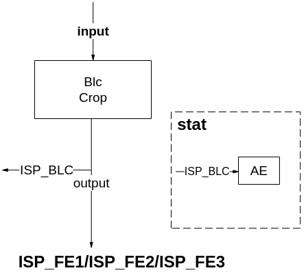
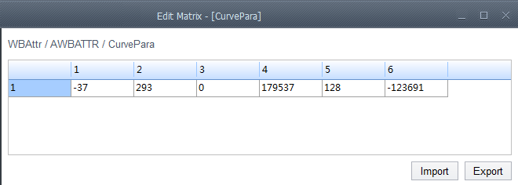
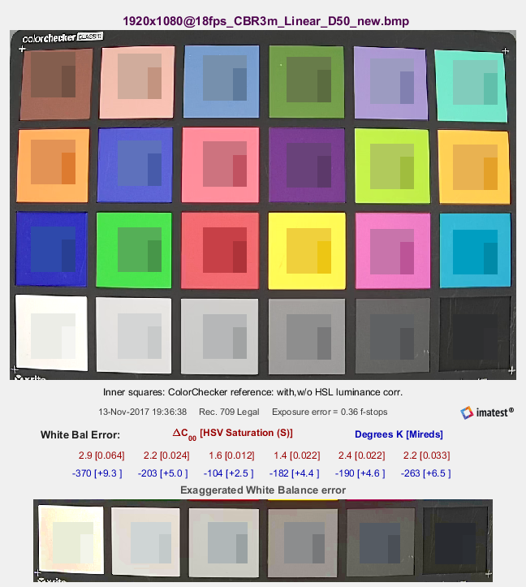
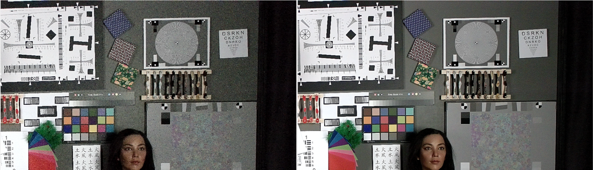
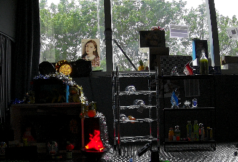
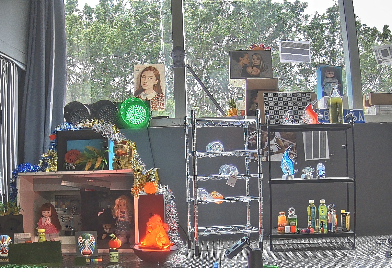
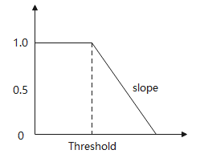

前言
前言
本文为ISP图像质量调试而写，内部详细介绍了ISP各模块调试方法，目的是为您在开发过程中遇到的问题提供解决办法和帮助。
说明：
本文以Hi3519DV500描述为例，未有特殊说明，Hi3519DV500与Hi3516DV500内容一致。
本文描述中，cmos_ex.h在Hi3516CV610芯片上对应文件为cmos_param.h
与本文档相对应的产品版本如下。
本文档（本指南）主要适用于以下工程师：
- 技术支持工程师
- 软件开发工程师
在本文中可能出现下列标志，它们所代表的含义如下。


修订记录累积了每次文档更新的说明。最新版本的文档包含以前所有文档版本的更新内容。
PQ调优文档关系说明
ISP图像调优指南是一个指导用户进行图像调优的文档。本篇文档的使用过程中与以下文档有相关性，特此概要介绍如下：
- 《ISP 开发参考》：对用户接口及其结构体进行相应的说明，描述使用方法及各结构体成员表示的意义；
- 《ISP 颜色调优说明》：对颜色调优的详细说明；
- 《图像质量调试工具使用指南》：对调优图像过程中使用的工具PQTools的详细说明；
- 《XXXX SoC 用户指南》：对寄存器级别的模块说明；
- 《XXXX 3DNR参数配置说明》：对3DNR接口参数进行相应的说明，描述每个参数代表的意义及调试对应的效果趋势；
- 《Sensor 调试指南》：开发3A算法时需要参考的说明文档。
图像调优指南涉及到的文档关系图如图1所示。

- 第一章主要讲解了PQ调优过程中涉及的文档关系说明；
- 第二章对ISP进行了系统概述，包括ISP的功能框图及各模块简介；
- 第三章主要介绍了整个图像调优过程的操作步骤及注意事项；
- 第四章之后开始分模块介绍各子模块的调试方法。
ISP系统概述
功能简介
ISP 模块支持标准的Sensor图像数据处理，包括自动白平衡、自动曝光、Demosaic、坏点矫正及镜头阴影矫正等基本功能，也支持WDR、DRC、降噪等高级处理功能。ISP主要支持的图像处理功能如下：
- 支持黑电平校正
- 支持静态以及动态坏点校正，坏点簇矫正
- 支持bayer降噪
- 支持固定噪声消除
- 支持Demosaic处理
- 支持紫边校正（CAC）
- 支持gamma校正
- 支持动态范围压缩（DRC）
- 支持Sensor内部合成宽动态功能（Sensor Built-in WDR）
- Hi3519DV500/Hi3516CV610最大支持2合1 宽动态功能(WDR)
- 支持自动白平衡
- 支持自动曝光
- 支持自动对焦
- 支持3A相关统计信息输出
- 支持镜头阴影校正
- 支持图像锐化
- 支持自动去雾处理
- 支持颜色三维查找表增强
- 支持局部对比度增强
- 支持色彩自适应
- 支持3D降噪
ISP功能框图
ISP Hi3519DV500/Hi3516CV610的功能结构图如图1~图6所示。这些结构图与本文中提到的ISP_FE均代指ISP pipeline中FPN（不包含）之前的部分，ISP_BE均代指ISP pipeline中FPN（包含）之后的部分。
本文中ISP采用*.*、S*.*表示无符号数和有符号数。如：U8.8表示数据类型为无符号数，整数部分8bit，小数部分8bit；同理，S8.8表示数据类型为有符号数，整数部分8bit（包括1bit符号位），小数部分8bit。
本文档的以下章节将会介绍各模块的简要原理及图像质量调试方法。





*图中DG1功能和DG一致。
各模块简介
ISP 各模块功能简介如表1所示。
表 1 ISP 各模块功能
MG模块统计DRC后分块均值，与AE统计分块均值相比，可以得出分块均值增益最大值。MG统计信息包含8bit精度分块R/Gr/Gb/B均值统计，分块最大支持17*15 |
|
利用17x17x17大小的3D LUT实现复杂的颜色调整操作，比如亮度的调整，饱和度的调整，阴影区域，中间亮度区域，高亮区域分别调整。 |
|
图像质量调优总体概述
当前Hi3519DV500/Hi3516CV610主要面向两大应用场景，即_录像机公共安全_应用场景和消费类应用场景，其中_录像机公共安全_应用场景包括线性模式和WDR模式；消费类应用场景主要包括运动DV、行车记录仪以及抓拍等产品形态。_录像机公共安全_应用场景由于具有_视频采集_行业特殊需求，对图像质量的关注点与消费类应用场景会不同。
_录像机_应用图像调优概述
当前Hi3519DV500/Hi3516CV610针对录像机应用场景主要包括线性模式和WDR模式两种典型应用。线性模式的图像质量关注维度主要包括图像亮度合理性，色彩还原准确、图像整体清晰度锐利以及图像的整体通透性等；WDR模式的图像质量关注维度主要包括图像整体的动态范围合理，即亮区不过曝，暗区细节能够看得见，色彩还原尽量准确、图像整体清晰度锐利以及图像整体通透性等维度。以下针对线性模式和WDR模式的图像质量调优分别介绍调试步骤以及ISP单点算法调试的注意事项。
线性模式图像质量调优
针对线性模式，图像质量主要关注以下维度：亮度、清晰度和噪声、通透性、色彩还原等方面，其中亮度涉及的模块有自动曝光(AE)、DRC、Shading校正等；清晰度和噪声主要涉及的模块有Demosaic、YUV Sharpen、BayerSharpen、NR、DPC、3DNR等；通透性涉及的模块主要有Gamma、LDCI、Dehaze、DRC等；色彩还原涉及的模块主要有AWB、CCM、CLUT以及CA等；_录像机_应用场景线性模式图像调优的整个架构图如图1所示。

在进行图像质量调优前需要开展的工作主要如下：
-
Sensor对接：主要包括在Hi3519DV500/Hi3516CV610对接所需要调优的Sensor，如对接某sensor。
主要包括1080p@30fps Linear、1080p@30fps 2合1 WDR等模式，根据Sensor厂商提供的DataSheet挖掘出各个模式的初始化寄存器序列，将初始化寄存器序列适配Hi3519DV500/Hi3516CV610的MIPI配置，这样可以在Hi3519DV500/Hi3516CV610下调通该Sensor。Sensor对接的完成标准主要如下：对接模式的基本通路正常且各个模式之间能够正常切换，AE基本功能正常包括降低帧率无闪烁、自动长曝光正常以及Sensor驱动各个模块的默认参数合理，详细请参考《Sensor 调试指南》。
-
Sensor和镜头的标定工作
标定工作主要涉及黑电平标定、NR的NoiseProfile标定、静态坏点标定、镜头的Shading标定、AWB静态白平衡系数的标定、饱和度CCM的标定等。Sensor和镜头的标定步骤需要严格按照图2所示的流程进行开展。
- 黑电平标定：黑电平标定是整个ISP标定的第一步，因此正确的标定出黑电平对后续的标定会产生积极的影响。黑电平的具体标定方法可以参考《图像质量调试工具使用指南》。需要注意的是不同的Sensor在低照度下(高增益)，黑电平会产生漂移，从而带来低照度下整个画面的颜色偏色，因此如果Sensor的黑电平随着增益的增加，漂移比较大，建议黑电平的标定需要根据ISO进行联动；
- NR的NoiseProfile标定：在黑电平标定正确的基础上，接下来就需要标定NR模块的NoiseProfile。NR模块降噪需要参考噪声标定NoiseProfile，不同ISO下得到一个拟合系数，具体标定NoiseProfile需要参考《图像质量调试工具使用指南》。
- Sensor的静态坏点标定：Sensor的静态坏点主要受Sensor的工艺有关，其中包括亮点和暗点，静态坏点的标定受Sensor的分辨率影响，例如消费级Sensor 包括多个分辨率，如4K@30fps、1080p@120fps、720p@240fps，不同的分辨率的静态坏点表需要重新标定；标定的过程需要分别针对亮点和暗点进行标定，得到亮点表和暗点表，再将亮点表和暗点表进行合并，可以得到整个坏点表，具体标定的流程方法请参考“DPC”章节。
- 镜头的Shading标定：镜头的Shading标定这里主要是指Mesh-Shading的标定，Shading主要是由于镜头光学折射不均匀导致的画面暗角，因此Shading校正的目的就是为了消除由镜头光学折射不均匀导致的画面暗角。Mesh-Shading的标定的具体流程可以参考《图像质量调试工具使用指南》。需要注意的是在低照度下，由于Shading会引起画面暗角的噪声不均匀，因此Shading的校正的强度与根据ISO进行联动，从低ISO到高ISO下，逐步将Shading校正的强度衰减到画面暗角不出现噪声为合适。
- AWB静态白平衡系数标定：AWB的静态白平衡系数与Sensor和镜头的滤光片强相关，Sensor固定下，如果更换镜头和滤光片，AWB的镜头白平衡系数也需要重新标定。标定的基本原理为：提取sensor在多个标准光源下的白点特征(R/G，B/G)，计算普朗克拟合曲线和色温拟合曲线。具体的标定流程请参考《ISP 颜色调优说明》。
- CCM标定：CCM标定的基本原理是使用sensor抓拍到的24色卡场景下前18个色块的实际颜色信息和其期望值，计算3x3的CCM矩阵。输入颜色经CCM矩阵处理得到的颜色与其期望值差距越小，则CCM矩阵就越理想。标定CCM一般需要采集三种光源的raw(D50、TL84、A)，具体标定的方法和流程需要参考《ISP 颜色调优说明》。

在完成Sensor对接和Sensor镜头标定的工作之后，就可以进入ISP各个模块联合调优阶段，线性图像质量调优包括多组ISO照度下图像质量优化。以下以Sony 某sensor为示例，由于某sensor属于星光级的Sensor，因此需要调试的ISO包括ISO 100、200、400、800、1600、3200、6400、12800、25600、51200、102400、204800等，当然不同的Sensor，由于感光性的差异，所需要调节的最高ISO也会有差异,详细请参考《图像质量调试工具使用指南》。跟ISO联动的BayerNR、Demosaic和Sharpen等算法模块除了开放出来的MPI接口参数会跟ISO联动以外，内部都还有默认的参数也会跟ISO联动变化。
线性模式调试的场景主要包括实验室静物场景和室外实际场景，一般需要在实验室静物场景下模拟所调试的Sensor涵盖的不同照度的场景，包括照度比较好的场景和照度比较低的场景。在实验室静物场景下需要将不同照度下亮度、色彩、通透性、清晰度和噪声等调试合理。在实验室静物场景ISP各个模块调试合理的基础上，需要在实际场景中根据_录像机_的不同应用场景进行微调，需要覆盖交通路口的白天场景和夜晚场景、室外夜晚低照度场景、室外白天纹理细节丰富场景包括晴天与阴天场景、室外傍晚夕阳纹理细节丰富场景等。这样线性模式图像效果的自适应可以覆盖不同ISO、不同应用场景的需求。线性模式具体的调优场景顺序如图3所示。

线性模式ISP各个模块的调试的基本顺序流程如图4所示。

结合线性模式典型的调试场景实验室静物和实验室标准光源灯箱环境介绍图像质量关注的主要维度的调试方法，图5所示为实验室静物调试场景图。

亮度维度的主要调试的模块为AE，主要包括AE的目标值的调优、AE Route的调优、AE的权重表的调优、AE收敛速度和平滑性的优化等。
调整AE前需要准备的环境：黑电平标定正确、Shading标定完成、AWB和CCM标定正确、不同照度预设一组Gamma参数等。
-
AE调节的第一步就是确定AE的权重表，AE的权重表决定AE曝光的感兴趣区域，不同的应用需求，AE的权重表也会有差异，一般针对_录像机_应用场景，场景关注的主体为画面的中间部分，建议将画面中间部分的AE权重表设置高于周边部分。图6为AE权重表的示例：
-
在确定AE的权重表的基础上，接下来需要确定AE的Route，AE Route主要决定曝光量的分配方式即曝光时间和增益的分配。不同应用场景需要设置不同的AE Route，如需要关注快速运动物体，需要优先使用增益和限制曝光时间，如白天场景交通抓拍车牌，一般需要将曝光时间限制为2-4ms，此时曝光量优先分配在增益上面，如夜晚低照度场景，此时需要为了平衡画面的噪声表现，需要将曝光量适当优先分配在曝光时间上面，然后再分配到增益上面。
- 在确定AE权重表和AE Route基础上，接下来就是根据不同的曝光量下调节AE的目标值，针对实验室静物场景，AE目标值的调试标准是亮区视力表和星图卡无明显过曝，暗区的人脸图亮度表现合理。AE的目标值调节主要涉及到AE Compensation、AE offset调节以及AE高光优先和低光优先模式的选择，一般正常调试应用中，建议选择高光优先模式，这样可以避免亮区过曝。
-
最后需要调节AE的收敛速度和AE平滑性，AE的收敛速度和AE平滑性是一对平衡点，在防止AE出现震荡的前提下，可以适当得提高AE的收敛速度，包括AE能够根据光线变化的过程中快速收敛。尤其针对行车记录仪和运动DV应用场景，需要适当提高AE收敛速度来适应场景的剧烈变化。AE的收敛速度和收敛稳定性一般可以通过实验室静物场景开关灯进行测试。
AE模块的具体参数调节和介绍可以参考《ISP 开发参考》中关于AE的描述章节。DRC模块在线性模式的调优环节，一般不推荐使用，如果在线性模式调试整体亮度利用DRC模块，需要注意DRC模块对图像对比度的影响。Shading模块也会影响图像的整体亮度，Shading调节的强度，建议根据ISO进行联动衰减，来避免在照度稍低的情况下会带来图像暗角的噪声变大。

在AE调节合理的基础上面，接下来主要调整色彩维度，主要涉及到的模块有AWB和CCM。
调整颜色前需要准备的环境：黑电平校正准确、Lens-Shading标定完成、AE模块参数调试合理。
-
最基本的需要在实验室灯箱场景抓取三组不同色温下24色卡的raw(D50、D75、A)，以及室外场景抓取D50色温24色卡的raw标定获取AWB静态白平衡系数。推荐在实验室灯箱场景抓取八组不同色温下24色卡的raw(D50、D75、A、TL84、10K、3500、CWF、D65) 以及室外场景抓取D50色温24色卡的raw标定获取AWB静态白平衡系数。标定获取的AWB静态白平衡系数需要通过PQ 3A分析工具观察Planckian Curve，是否光源分布在曲线两侧，是否有光源点距离普朗克曲线较远，估计的色温是否准确。如果某些光源的误差较大，可调整其权重值，再次进行标定。当然也可以用3A分析工具的AWB功能在线验证标定的准确性，多个光源下灰色块都落在Planckian曲线的附近，说明标定是可靠的。在实际静物场景下，确定AWB的准确性，主要关注24色卡的灰色块是否还原准确，可以通过Imatest测试24色卡的色彩还原指标。Figure 7所示为标定获取的AWB静态白平衡系数的示例。

-
在实验室灯箱场景抓取D50、TL84、A光源三组24色卡的raw通过标定工具生成CCM饱和度矩阵。在标定CCM的过程中需要注意用户自定义ISP Gamma值时，需注意匹配相对应的LAB参考值，防止由于ISP Gamma和LAB Reference不匹配，导致作为线性变化的AWB和CCM共同作用无法达到目标图片的效果。标定获取的CCM参数，如果在实际应用场景发现图像的饱和度效果不理想的情况下，需要根据实际场景出现的颜色的问题手动调整饱和度。图8所示为标定CCM得到的三组色温(D50、TL84、A)的饱和度矩阵的示例。
-
在AWB静态白平衡系数和CCM饱和度矩阵标定之后，需要将AWB静态白平衡系数和CCM饱和度矩阵配置到Sensor驱动中，在实验室灯箱场景中抓取八种不同光源24色卡的图片，用Imatest工具测试24色卡测试颜色指标。如果24色卡的指标的满足需求，可以初步确定标定得到AWB静态白平衡系数和CCM饱和度矩阵满足需求。Figure 9和Figure 10为D50光源下抓取的24色卡图片和对应的Imatest得到的色彩还原指标的示例。

-
AWB和CCM模块的参数的合理性，还需要大量依赖于实际应用场景的大量测试和调试。通常实际应用场景包括典型室外场景，包括顺光、背光、阴天、夕阳、以及混合光源等场景。如果场景中的灰色块还原不准确，需要调整AWB参数，场景中出现个别颜色过饱和或者偏色，建议调试CCM参数。针对混合光源应用场景，需要调节AWB中室内外检测的参数；针对实际场景中人物肤色还原不准确，需要调整CCM参数。
AWB和CCM模块的具体调优需要参考《ISP 颜色调优说明》。

的饱和度矩阵示例")


在亮度维度和颜色维度调试合理的基础上，接下来主要调节图像的对比度维度。影响对比度的维度主要包括Gamma、Dehaze、LDCI等，一般重点还是在不同照度下调节Gamma参数，Dehaze和LDCI为调节对比度的辅助模块；
调整对比度前准备的环境：黑电平校正正确、Lens-Shading标定完成、AE曝光调整合理、AWB和CCM参数标定合理。
-
调整Gamma参数，Gamma参数是影响图像对比度的基本参数，以实际静物场景为例，通过调整Gamma参数达到画面亮区部分的解析率卡和暗区部分的玩偶细节都不发生损失，且画面获得比较好的对比度；图11中红色框图部分为Gamma曲线所影响的暗区细节和亮区细节。
-
在调整好Gamma参数基础上，如果对图像的对比度有更加精细化的需求，建议以LDCI为主，Dehaze为辅；LDCI属于局部的对比度增强，可以改善画面局部亮区和暗区细节的表现，Dehaze只能作为辅助使用，Dehaze调整过大，会带来画面暗区细节损失和画面颜色偏色；关于LDCI和Dehaze的具体单点调优说明请参考"LDCI”和"Dehaze”章节。
-
在优化后的Gamma参数、LDCI参数和Dehaze参数的基础上，需要在实验室灯箱D50光源环境下测试灰阶卡的灰阶，观察灰阶数能否满足要求，一般要求灰阶数至少达到18阶及以上，否则表明当前图像的对比度过高，损失了暗区的细节。图12为实验室灯箱D50光源环境下的灰阶卡的示例。
-
在实际静物场景，需要根据场景的不同的照度下，调整Gamma、LDCI以及去雾模块，以达到场景的各个照度下，图像的对比度不会出现过高和过朦。当前正常照度环境下和低照度环境下，图像的对比度调试风格也会有一定的差异，比如在低照度下，Gamma需要适当的压低暗区来减轻暗区噪声的负担。


清晰度和噪声这两个维度为一对平衡点的维度，且由于照度的不同，图像的噪声也表现不一样，随着照度的变低，图像的噪声增大，此时为了抑制画面的噪声，对图像的清晰度的要求会低于正常照度场景的清晰度，因此清晰度和噪声模块的相关的参数要根据不同的ISO进行联动。清晰度和噪声维度的调试，建议先以清晰度优先，即需要在降噪前(BayerNR、3DNR)将该锐化的细节锐化出来，如果在实际点播环境下调试，建议先把编码的码率设高且将3DNR的时域设置到最强和空域设置到最弱，观察静止画面的细节有没有锐化出来。在清晰度满足要求的前提下，接下来需要调试降噪模块，最终目标达到清晰度和噪声满足要求。
调整清晰度和噪声前准备的环境：黑电平校正准确、NoiseProfile标定正确、Lens-Shading标定完成、AE曝光调整合理、AWB和CCM参数调整合理、Gamma参数调整合理。
影响图像的清晰度和噪声模块主要包括NR、Demosaic、DPC的动态坏点去除、3DNR、BayerSharpen以及YUV Sharpen等。
-
图像的基本纹理细节的第一道关口就是Demosaic。调试Demosaic参数的入口条件为：黑电平标定准确、NoiseProfile标定合理、AWB和CCM标定参数合理。
调试Demosaic参数需要结合实验室静物高频细节需要插值出来如静物场景的视力表、星条卡和实验室灯箱环境下解析率卡的解析度指标满足要求。首先需要在实验室灯箱环境D50光源下ISO100 下对着解析度卡调试Demosaic参数，使得解析度卡的解析率满足客观指标要求，然后将该组Demosaic参数导入到工具观看实验室静物场景ISO 100环境下的高频细节如视力表和星条卡能否插值出来，以此进行来回迭代。在ISO100环境下Demosaic参数调整合理情况下，接下来需要在实验室静物场景下不同照度下调整Demosaic参数，以平衡高频噪声和插值出来的噪声和合适。图13所示为D50光源环境下的解析率卡的示意图。Demosaic的具体调试方法请参考"Demosaic”章节。
-
在Demosaic的参数调试合理之后，接下来重点联调NR，BayerSharpen、3DNR、YUV Sharpen以及DPC动态坏点去除。
调试NR模块的入口条件为：黑电平校正准确、NoiseProfile标定合理、AWB和CCM标定参数合理。
Hi3519DV500 NR包括时域和空域，当前调试NR的准则，尽量将一部分静止区域的时域强度分担到NR上面，运动空域区域主要采用NR的空域。主要做的好处是NR的时域相对于3DNR的时域动静判决更准，同时图像过完NR的时域再经过Sharpen，可以更好的提升图像整体的清晰度。Hi3516CV610 NR模块主要包括动静判决信息相关参数的调试以及运动区域空域的参数调试，当前主要的原则是将动静判决相关尽可能调试准确，方便后续3DNR模块N0级时域的参考，NR的运动区域空域和3DNR空域需要联合调试，保证运动清晰度能够达到需要，NR的具体调优方法请参考"NR”章节。
-
BayerSharpen的调试准则主要将图像的暗区弱纹理调试到合适，当前需要注意的BayerSharpen不能调试过强，且BayerSharpen的调试效果主要以中频为主，调试过强会导致画面整体比较粗。BayerSharpen的调试具体参考"BayerSharpen”章节；
-
YUV Sharpen的调试准则主要将图像的纹理细节和边缘锐度调到合适，以实验室静物场景为例，YUV Sharpen需要将图像在经过3DNR之前将静物场景的草垫子、狮子等纹理细节锐化出来，图14中红色框图部分为YUV Sharpen锐化出来的纹理细节。同时还需要将桌子和斜方格等大边锐化出来，图15中红色框图部分YUV Sharpen锐化出来的大边。YUV Sharpen的参数需要根据ISO进行联动，确保在实验室静物场景中不同照度下，YUV Sharpen参数调试合理。
图 14 静物场景ISO100 YUV Sharpen锐化出来的纹理细节

图 15 静物场景ISO100 YUV Sharpen锐化出来的大边

因此，BayerSharpen、YUV Sharpen以及3DNR三者需要在实验室静物场景根据不同的ISO进行反复联合调试，最终达到噪声和清晰度的平衡为合理，YUV Sharpen的具体调试方法请参考"Sharpen”章节；
-
DPC动态坏点去除强度只需要在照度稍低下以去除动态坏点为准，照度稍好的情况下，建议DPC动态坏点去除的强度调试为0，DPC的具体调试方法请参考"DPC”章节；
-
3DNR作为整个清晰度的调优的关键环节，主要包括时域滤波器的调优和空域滤波器的调优，优先调节时域的动静判决的阈值即将雨点噪声抑制为合适和时域的绝对强度保证画面静止区域安静，再调节动静判决的空域滤波器来抑制画面运动区域的跟随噪声，最后调节纯空域滤波器抑制画面的整体颗粒感，3DNR调试的标准是达到静止画面噪声安静且清晰度满足要求，运动区域的噪声得到比较好的抑制且运动拖尾能够被合理控制，图16为某sensor 典型低照度的3DNR去噪效果图，其中红框圈出来的关注维度包括车辆的跟随噪声抑制维度、人物身后的运动拖尾维度以及静止画面的亮噪声和色噪声的抑制维度。3DNR具体调试方法请参考《Hi3519DV500/Hi3516DV500 3DNR参数配置说明》或者《Hi3516CV610╱Hi3516CV608 3DNR参数配置说明》。
-
BayerSharpen、YUV Sharpen、Demosaic、NR、3DNR等模块需要根据不同照度进行迭代联合调试，最终以图像的整体清晰度和噪声水平平衡为合适。


WDR模式图像质量调优
针对WDR模式，图像质量主要关注以下维度：图像的动态范围、亮度、清晰度和噪声、通透性、色彩还原以及合成区域运动拖尾的表现等方面；其中亮度涉及的模块主要有AE、DRC、Shading校正；图像的动态范围主要涉及有场景的曝光比、DRC；清晰度和噪声主要涉及的模块有Demosaic、BayerSharpen、YUV Sharpen、NR、DPC、3DNR等；通透性涉及的模块主要有Gamma、LDCI、Dehaze、DRC等；色彩还原涉及的模块主要有AWB、CCM、CA、CLUT以及CRB(Hi3519dv500/Hi3516CV610不支持CRB)等；合成区域运动拖尾的表现主要涉及的模块是WDR和曝光比。WDR模式典型的应用场景包括在背光的场景下_视频采集_人物和在强光场景下_视频采集_车牌，因此WDR针对背光场景下_视频采集_人物，希望能够看得清楚小脸，在强光场景下_视频采集_车牌，希望能够压住车灯的光晕，看得清楚车牌；_录像机_应用场景WDR模式图像调优的整个架构图如图1所示。

WDR模式图像质量调优前，需要进行Sensor对接和Sensor镜头的标定，其中WDR模式Sensor对接步骤可以参考线性模式图像质量调优小节中关于Sensor对接的阐述；Sensor镜头的标定中AWB、Shading、NoiseProfile、DPC静态坏点可以参考线性模式标定的参数，由于WDR模式动态范围比线性模式大，故在WDR模式下调试图像颜色需要注意以下4点：
-
DRC模块中global_color_ctrl参数，该参数控制图像的全局饱和度，可以用来抑制DRC曲线亮度调节过强引起的饱和度增加的问题。因为这个参数影响是全局的，所以在迭代调试的过程中，需要优先其他模块调试，确定图像的基础饱和度程度。参数越小饱和度越高，参数越大饱和度越低，在调节过程中需要和ccm全局饱和度进行配合。不建议global_color_ctrl极高饱和度同时CCM极低饱和度的调节方式，因为这样会造成ccm失去调节能力。初始global_color_ctrl参数值建议配合CCM标定的标准饱和度程度下进行确定。
图 2 global_color_ctrl参数为0时典型场景颜色饱和度高

-
在线性模式下标定CCM，调试出的最佳CCM是在标准亮度环境下确认的。在这个亮度环境下，不容易观察到这组CCM在高亮或暗处是否符合颜色调节需求，所以需要确认标定出的CCM在更亮的环境下也合适。建议在标准光源下(一般是三组光源，分别是D50，TL84，A光源)拍标准24色卡，曝光比手动最大，同时也要调整亮度值，避免长帧过曝，采集长帧的Raw数据进行CCM标定。确认这组CCM对于更亮的环境下的颜色达到了调节需求，比如肤色，红色合理。如果不合理需要微调CCM标定参数，以便标定产生更好的CCM值。
- WDR图像主要靠DRC曲线来达到一个基础的亮度，不建议DRC曲线把亮度调节到超过期望。适当减少DRC曲线对亮度的大幅度提升，能减少颜色发生溢出的风险，有利于颜色表现。减弱DRC曲线，画面的亮度会有所降低达不到期望亮度，此时，可以用Gamma对亮度进行适当的提升，这样联调DRC和Gamma模块，可以让最终亮度合理的同时整体的颜色还原更准确一些。
- 对于WDR模式，由于大多场景是混合光源场景，容易出现亮处颜色偏色，人脸肤色偏红等问题，除了降低CCM全局饱和度值以外，还可以使用CA模块对不同亮度区域或不同饱和度区域适当的降低饱和度。DRC模块中color_correction曲线可以抑制大曝光比下DRC提升暗区亮度导致的暗区偏红的问题。


在完成Sensor对接和Sensor镜头标定之后，接下来主要针对WDR模式图像质量关注维度进行图像调优。
WDR模式图像质量调优主要包括两种典型应用需求的调优即：照度稍高的情况下背光场景下小脸提亮和夜晚场景下交通场景强光抑制。由于背光场景下需要将小脸提亮，夜晚交通场景需要将车灯压制，因此这两种是属于不同的调试风格，对DRC模块调试的方向也是相反的。因此WDR模式的场景图像质量调优需要分别针对背光情况下提升小脸和交通场景下压制车灯进行开展。
WDR背光场景提升小脸亮度应用场景调试指南
针对背光情况下提升小脸亮度的应用需求，调试步骤如下：
在实验室搭建典型WDR场景，场景中应该包括亮区和暗区以及背光下的小脸，具体如图1所示，其中红色框图部分包括暗区、室外天空亮区以及背光下人脸贴图。

WDR的亮度维度，这里主要是指AE曝光的合理性，主要还是通过调试AE模块。AE模块调试的入口条件和AE调试的相关的参数，WDR模式和线性模式总体相同，但差异部分在于调整AE的曝光比来决定长帧和短帧的曝光时间。这里重点介绍AE曝光比的调试，AE其他参数包括AE的权重表、AE Route、AE目标值以及AE的收敛速度和平滑性具体可以参考"线性模式图像质量调优”的亮度维度小节。针对WDR模式的AE Route设置，这里需要补充一点的就是为了避免长帧过曝下WDR模块选择短帧，导致画面出现工频闪，曝光量在增益的分配方式上，可以优先使用ISPDgain，然后是Sensor的Again和Dgain，因为ISPDgain在WDR模块之后，ISPDgain的使用不会影响进入WDR模块的长帧过曝，且对最后的画面的整体亮度不会发生变化。
AE的曝光比决定WDR模式图像的动态范围，因此不同的场景动态范围使用WDR模式，AE的曝光比需要自适应调节。通常WDR模式，AE的曝光比的模式使用AE的自动曝光比模式，所谓的自动曝光比，就是AE会根据场景的直方图自动计算场景的动态范围而得到一个合理的曝光比，曝光比的合理性体现在亮区细节不过曝且长帧亮度合理。
WDR模式影响合成区域的运动拖尾主要包括WDR模块和AE的曝光比，曝光比越大，合成区域出现拖尾的概率也就越高，但在典型WDR背光场景下，WDR 2合1模式下，曝光比通常为16-32倍，此时影响合成区域的运动拖尾主要就是WDR模块。当前在Hi3519DV500/Hi3516CV610下，由于WDR模块算法的限制，很难区分暗区和亮区人物运动，在保证暗区人物运动尽量不选择短帧的前提下，亮区人物挥手的手臂容易出现断裂的平衡，一般在调试过程，将合成模块的运动权重md_thr_low_gain和md_thr_hig_gain调试到暗区人物运动尽量选择长帧，此时观察亮区人物挥手的表现，WDR合成模块调试具体可以参考"WDR" 模块的描述。
WDR模式影响场景的动态范围包括：AE的曝光比、DRC模块以及Gamma模块。
调试DRC模块的入口条件：黑电平标定正确、Shading标定完成、AE模块调试合理、AWB和CCM标定完成、预设一组Gamma参数。
当前为了提升背光下小脸亮度和局部对比度，建议适当调小DRC滤波参数spatial_filter_coef和range_filter_coef。在极高动态范围的挑战场景，如果调试后人脸细节仍不满足要求，建议开启AIDRC并参考“细节和对比度调试”小节调试相关融合参数，以进一步提升人脸细节。
当前WDR模式中的DRC算法由于为了提升小脸的局部亮度而采用滤波窗口偏小，从而导致亮暗交界区域对比度拉伸差异比较大，从而形成边线。当前DRC算法中的rim_reduction_strength和rim_reduction_threshold调大可以改善亮度交界区域的边线表现，但同时会带来小脸的对比度发朦，影响小脸的识别，因此亮暗交界区域的边线与小脸亮度存在权衡。

DRC ToneMapping曲线的调试的策略需要和Gamma曲线进行配合，Gamma曲线的调试策略是在自定义Gamma = 0.8的曲线基础上进行调试，如图3所示。

将人脸部分的亮度提升，同时将暗区压暗来保证提升小脸的亮度同时保证场景的对比度，得到图4的Gamma曲线。

在得到Gamma曲线的基础上，调试DRC的Asymmetry曲线，为了提升小脸的亮区，Asymmetry曲线需要提升背光的亮度，具体调试的曲线如图5所示。

DRC Asymmetry曲线需要和Gamma曲线需要根据实际的宽动态场景反复迭代调优，以得到背光情况下的小脸亮度得到提升为合适。WDR 背光下人脸效果的优化，DRC曲线，客户也可以采用自定义曲线，获得比较灵活的调试方式，当前为了获得DRC亮度提升暗区亮度，压缩亮区亮度，同时保持好的对比度表现和颜色表现，当前推荐客户使用调试DRC自定义曲线，DRC Asymmetry曲线在对比度表现和颜色还原表现方面会差于DRC自定义曲线。
需要注意：DRC自定义曲线的形状和曝光比密切相关，不同的曝光比，需要采用不同的DRC自定义曲线形状。关于DRC模块的具体调试方法请参考“DRC”章节。
WDR模式影响图像的色彩维度主要是AWB、CCM、DRC参数global_color_ctrl和color_correction曲线、CA、CLUT等模块：
调试AWB、CCM和CA模块的入口条件：黑电平校正正确、AE曝光合理、DRC调试合理、Shading完成标定、预设一组Gamma参数。
WDR模式整体调试的色彩策略与线性模式一致的，但需要考虑DRC对颜色的影响，因此CCM标定的方法与线性模式存在差异，具体可以参考上文中关于CCM的注意事项，ISP的CA模块可以根据不同亮度或不同饱和度降低饱和度，可以减轻DRC曲线提升暗区带来饱和度过高的现象。DRC参数中global_color_ctrl可以抑制DRC引起的饱和度增高的问题、CLUT模块重点调试思路是抑制夜晚交通尾灯带来的红色光晕的问题。一般建议，ISO较小时（白天宽动态场景），DRC中global_color_ctrl参数一般调试为5-6左右，ISO较大时(夜晚交通场景和低照场景)，DRC中global_color_ctrl参数一般调试为10-12左右；DRC中color_correction曲线当前需要跟随曝光比进行联动，曝光比越大，color_correction曲线调试参数越小，从而抑制DRC曲线拉伸引起的暗区偏红的问题。关于DRC模块的具体调试方法请参考“DRC”章节。
影响对比度的维度模块包括Gamma、LDCI、Dehaze等。
WDR模式下关于对比度的调试方法整体上和线性模式是一致的，即主要还是Gamma模块，LDCI和Dehaze，区别在于WDR模式背光场景首先关注的是背光小脸的亮度和辨识度，DRC与Gamma需要配合来提升背光小脸的亮度，但同时会带来画面整体对比度的损失，需要通过LDCI和Dehaze进行弥补。
WDR 模式关于清晰度和噪声的调试方法整体上和线性模式是一致的，即主要调试NR、3DNR、DPC动态坏点去除、Demosaic、BayerSharpen、YUV Sharpen；其中NR、3DNR、DPC动态坏点去除、Demosaic、BayerSharpen、YUV Sharpen等模块的调试方法和调试步骤与线性模式基本一致，具体可以参考线性模式关于此的阐述。NR模式的当前可以区分长帧和短帧分别降噪，可以调试NR模式的短帧降噪来去除合成区域采用短帧的噪声。
WDR交通强光抑制应用场景调试指南
针对交通抓拍应用的强光抑制场景需求，这里重点是指夜晚交通应用场景，其调试步骤如下：
在夜晚交通应用场景搭建调试环境，一般建议在交通十字路口场景或者闸口场景，具体如图1所示。

交通的强光抑制场景的整体调试步骤与背光下WDR典型应用场景类似，这里重点介绍强光抑制场景相对于背光下WDR典型应用场景各个图像质量维度调试的差异化方面。
强光抑制场景AE模块的调试步骤与线性模式类似，其差异在于重点关注AE对车灯光晕的影响以及曝光时间对车辆运动模糊的影响。
-
AE权重表：强光抑制场景的AE权重表的调试思路为将中心区靠近车灯附近的权重设大，天空区域和画面两边的区域权重设小。具体可以参考图2所示的AE权重表示例。
-
在确定AE权重表的基础上，接下来调试AE的目标值。调试AE目标值之前，建议将DRC、Gamma、LDCI、Dehaze、FSWDR等模块Bypass，单独观察长帧和短帧车灯的光晕表现，一般情况下，车灯里面过曝区域会倾向于选择短帧，车灯外围的光晕区可能会落在长帧和短帧融合区，具体还需要视FSWDR短帧和长帧的阈值而定。因此调试AE的目标值尽量避免短帧的车灯光晕过大。同时也要兼顾画面的整体亮度和噪声的平衡。
- 确定AE目标值合理的基础上，需要设置合理的AE Route，一般需要限制曝光时间，优先使用增益，来避免曝光时间过大加重运动车牌的模糊。在夜晚交通应用场景下，一般需要将曝光时间限制为10ms左右，曝光时间和增益的分配，具体还需要看实际应用需求。

强光抑制场景的合成区运动拖尾的影响模块依然为FSWDR模块，其调试的思路和WDR背光场景类似。FSWDR模块的调试具体可以参考上述WDR背光应用场景关于合成区的运动拖尾的描述。
影响强光抑制场景的动态范围主要包括AE曝光比、DRC模块等。其调试的入口条件与WDR背光人脸场景一致。这里的差异在于AE曝光比和DRC的调试策略会有不同。
- 针对AE的曝光比，在夜晚交通应用场景，一般建议设置为8-16倍左右，来使得长帧和短帧的曝光时间合理。AE的曝光比设置过大，如大于16倍，会导致短帧的时间过短，从而会带来画面选择短帧的区域噪声过大，AE的曝光比设置过小，如小于8倍，会带来画面选择短帧的区域光晕比较大。
-
针对DRC在强光抑制场景的调试，这里建议DRC的ToneMapping曲线使用自定义曲线，不选择Asymmetry曲线的原因是由于Asymmetry曲线的调试灵活性不够，很难满足在强光抑制模式下，除了少部分过曝的区域采用短帧外，其他大部分区域通过DRC模块还原出长帧。
例如当前AE的曝光比为16倍，DRC自定义曲线的调试原则为在横坐标为0-0.0625，纵坐标为0-0.8左右，曲线的形状应该近似为直线，这样可以将长帧进行很好的还原；横坐标0.0625-1，纵坐标0.8-1，这段曲线影响的是图像过曝区采用短帧的表现，由于强光抑制场景，过曝区主要集中在车灯和路灯等区域，可以调节该段来压制过曝区的亮度；0.0625附近的曲线会影响车灯周边的一圈光晕的表现，也是重点调节的对象。具体如图3所示。

DRC模块的其他参数，如细节层的正向和负向增强以及窗口的大小的选择可以参考背光场景的调试方向。
强光抑制模式的色彩调试的维度影响模块和入口条件和WDR背光模式一致，具体可以参考WDR背光模式下色彩维度章节，这里需要注意的是针对信号灯和红色车灯由于亮度过高，DRC处理后容易发生红色过饱和，因此需要降低红色的饱和度，可以考虑利用CCM、CA模块、CLUT模块降低红色的饱和度。
强光抑制模式的对比度维度影响模块和入口调节和WDR背光模式一致，具体可以参考WDR背光模式下对比度维度章节。
- GAMMA模块调试的整体方向与WDR背光场景相同，也是基于Gamma = 0.8进行微调，当然这里不需要针对小脸的亮度的需求进行局部拉伸，可以适当针对暗区进行压制，来减轻噪声的负担，增加图像的整体的对比度。
- Dehaze模块建议选择自定义曲线，具体自定义曲线的形状如图4所示。这样做的主要目的就是为了通过去雾来压制车灯的光晕，同时对暗区的亮度损失也比较小。

- LDCI在强光抑制场景的调试思路主要就是提升车牌的局部对比度，一般建议将LDCI调试的局部一些，但同时需要注意：在夜晚场景下，LDCI的调试会带来车灯光晕的加大，需要平衡车灯光晕的大小和车牌局部对比度的表现。
清晰度和噪声维度的影响模块和入口条件与WDR背光模式一致，具体可以参考WDR背光模式下清晰度和噪声维度章节。但这里针对强光抑制场景需要注意以下原则：
- 调节Demosaic模块的主要原则是确保在夜晚场景下，避免Demosaic插值出十字噪声。由于BayerNR模块当前的位置在Demosaic之前，可以先通过BayerNR将Demosiac插值前的一些噪声滤波一下，可以减轻Demosaic插值带来十字噪声的负担。
- 调节YUV Sharpen和3DNR IE增强的主要原则是提升大边缘的表现，可以适当降低纹理的锐化强度，来获得夜晚车牌的表现，同时避免锐化纹理带来噪声的加剧。
- 调节3DNR和BayerNR模块，需要注意是需要兼顾运动区域拖尾和整体噪声的表现，避免为了追求整体画面噪声干净而带来车子运动拖尾严重，影响车牌的识别。
模块介绍
Sharpen
功能描述
Sharpen模块用于增强图像的清晰度，可以实现对图像的带方向的边缘和无方向的细节纹理的单独锐化增强，且可以通过调节各频段的锐化增益，实现多种清晰度风格的调优。此外，还能控制锐化后的图像的overshoot（白边白点）和undershoot（黑边黑点）。增强图像的清晰度的同时，不可避免的会增强噪声，通过调节sharpen模块的相关参数，也可以抑制噪声的增强。
如图1和图2所示，为Sharpen模块的系统框图，其中黑色字体的部分是sharpen模块的数据流图，红色字体为sharpen开放给用户的调节参数接口。在实际效果调试中需要注意，对于不同分辨率图像，车头和天空占比会一些差异，比如16:9和4:3对应的车头和天空部分占比就有所不同，因此需要根据实际场景进行一些调整。
图 1 Sharpen模块的系统框图(Hi3519DV500)
")
图 2 Sharpen模块的系统框图(Hi3516CV610)
")
关键参数
表 1 Sharpen关键参数
肤色区域范围矩形窗的左下角的最小坐标的U值，取值范围：[0, 255]。如：图10 |
|
肤色区域范围矩形窗的左下角的最小坐标的V值，取值范围：[0, 255]。如：图10 |
|
肤色区域范围矩形窗的右上角的最大坐标的U值，取值范围：[0, 255]。如：图10 |
|
肤色区域范围矩形窗的右上角的最大坐标的V值，取值范围：[0, 255]。如：图10 |
|
|
|
用于显示当前图像细节类型及强度的debug功能，该参数仅在设置为OT_ISP_SHARPEN_NORMAL时显示正常图像，在其余参数设置下为Debug模式，只显示Y分量。 OT_ISP_SHARPEN_OFF：显示Sharpen关闭后图像。 OT_ISP_SHARPEN_DIFF_NORM：显示Sharpen锐化前后归一化差异图像，亮度越高，归一化差异越大。 OT_ISP_SHARPEN_DIFF：显示Sharpen锐化前后绝对差异图像，亮度越高，绝对差异越大。 OT_ISP_SHARPEN_TOTAL：显示细节纹理及边缘综合影响区域，亮度越高，细节越强。 OT_ISP_SHARPEN_TEXTURE：显示细节纹理影响区域，亮度越高，细节越强。 OT_ISP_SHARPEN_EDGE：显示细节边缘影响区域，亮度越高，细节越强。 OT_ISP_SHARPEN_TOTAL_FREQ：显示细节纹理及边缘增强频段综合影响区域，亮度越高，细节越强。 OT_ISP_SHARPEN_TEXTURE_FREQ：显示细节纹理增强频段影响区域，亮度越高，细节越强。 |
|
亮度锐化权重。该参数是一个包含32个元素的数组，将0-255的亮度平均分为32段亮度区间，每一段亮度区间对应一个亮度权重。该值越小，对应的亮度区间的锐化越弱。如Bild 1所示。取值范围：[0, 31] |
|
|
0表示1倍（1倍表示texture_strength对输入信号无增强。），32表示2倍，64表示3倍。以32作为步长，依次类推； 该值越大，无方向细节纹理的清晰度越高。该参数是一个32的数组，表现为一段连续的强度曲线，如图2所示。取值范围：[0, 4095] |
|
|
0表示1倍（1倍表示edge_strength对输入信号无增强。），32表示2倍，64表示3倍。以32作为步长，依次类推； 该值越大，带方向的边缘的锐度越高。该参数是一个32的数组，表现为一个32段的连续的强度曲线，如图3所示。取值范围：[0, 4095] |
|
图像的无方向细节纹理的增强频段控制该值越大，细节纹理的增强就越偏向于高频增强，细节纹理就越细碎。反之，该值越小，细节纹理就越粗越圆润。取值范围：[0, 4095] |
|
图像的带方向的边缘的增强频段控制。该值越大，边缘的增强就越偏向于高频增强，图像的边缘就越细越窄。反之，该值越小，边缘就越粗越平滑。取值范围：[0, 4095] |
|
图像overshoot和undershoot的抑制强度。用于在保证清晰度不明显下降的前提下，抑制锐化后的overshoot和undershoot的宽度和幅度。 该值越大，锐化后的图像的overshoot和undershoot的宽度越窄、shoot的强度越小，图像的锐度不会明显下降。取值范围：[0, 255]。 |
|
划分图像中overshoot和undershoot的被抑制的区域。该参数配合shoot_sup_strength使用，用于调节shoot_sup_strength作用的区域范围。该值越小，则越多的纹理区域的shoot会被shoot_sup_strength抑制；该值越大，则只有很强的边缘的shoot会被shoot_sup_strength抑制，纹理区域的shoot不会被抑制，而且shoot_sup_adj越大，对边缘的黑白边的抑制强度也越大。取值范围：[0, 15] |
|
|
该值越大，判断为边缘的区域越多、边缘越宽，edge_strength起作用的区域越多，而且，该值越大，沿着边缘方向的平滑滤波强度也越大，边缘就越平滑。该值过大，可能加剧轮廓的油画感。 反之，该值越小，判断为边缘的区域越少、边缘越窄，edge_strength起作用的区域越少，边缘平滑滤波强度就越弱。 该值等于0时，则图像所有区域均判断为无方向纹理进行增强，edge_strength基本不起作用。取值范围：[0, 63] |
|
边缘滤波的最大强度调试参数：该值越大，边缘滤波的最大强度也越大，edge_filt_strength的可调试范围也越大；一般建议该值大小控制30以内。取值范围：[0, 47] |
|
用于控制图像的细节纹理区的shoot强度。shoot越大，细节纹理区的清晰度越高。取值范围：[0, 255] 该值等于128时，则图像的细节纹理区域的shoot强度分别等于over_shoot和under_shoot。该值大于128，则图像的细节纹理的shoot强度大于over_shoot和under_shoot。该值小于128，则图像的细节纹理的shoot强度小于over_shoot和under_shoot。 |
|
图像的细节纹理区和边缘的区分阈值。该值配合detail_ctrl使用，用于区分纹理区和边缘区域。小于该阈值的区域为纹理区，该纹理区域的shoot会被detail_ctrl单独控制，大于该阈值的边缘区域的shoot依然等于over_shoot和under_shoot。取值范围：[0, 255] |
|
图像锐化的最大增益值。该值越大，则图像的锐化幅度越大，反之值越小，锐化幅度越小。适当的调小该参数，可以减少图像的过锐化，从而减少图像锐化后的黑白点。取值范围：[0, 2047] |
|
过亮和过暗区域的范围阈值。需要配合shoot_outer_threshold一起调试，该值越大，则越多过亮和过暗区域的shoot强度会被抑制，该值过大会导致过多的亮暗区的shoot被抑制，从而导致图像对比度降低。取值范围：[0, 511]。如图4所示。 |
|
过亮和过暗区域shoot被抑制的强度。需要配合shoot_inner_threshold一起调试，该值越大则由shoot_inner_threshold决定的过亮和过暗区域的shoot被抑制得越厉害，shoot越弱， 该值过大会导致亮区和暗区的shoot被过度抑制，从而导致图像对比度降低。取值范围：[0, 511]。如图4所示。 |
|
不受shoot_inner_threshold和shoot_outer_threshold参数影响的区域阈值。该值越大，越多的过亮和过暗区域的shoot不受shoot_inner_threshold以及shoot_outer_threshold参数抑制。取值范围：[0, 511] |
|
边缘检测阈值粗调。粗略地筛选噪声以及纹理区域，不让其进入边缘检测，值越大判别为边缘的区域越少。取值范围：[0, 1023] |
|
边缘置信度锐化增益。将边缘按照置信度分成16个等级，等级越高边缘越强越明显，每个边缘等级对应一个边缘锐化增益，值越大相应的边缘区域锐化越强，32表示1倍，64表示2倍，依次类推。取值范围：[0, 255] |
|
运动边缘置信度。将运动指数分成16个等级，等级越高，运动越明显。每个等级对应一个边缘置信度，该值越大，相应等级的运动区域的边缘置信度越高，越容易被检测为边缘，16表示1倍，32表示2倍，依次类推。取值范围：[0, 63] |
|
亮度边缘置信度。将0-255的亮度平均分为16段亮度区间，每一段亮度区间对应一个边缘置信度，该值越大，相应的亮度区域的边缘置信度越高，越容易被检测为边缘，16表示1倍，32表示2倍，依次类推。取值范围：[0, 63] |
|
运动区域中频锐化增益。将运动指数分成16个等级，每个等级对应一个中频锐化增益，该值越大相应等级的运动区域越锐利，32表示1倍。取值范围：[0, 32] |
|
运动区域高频锐化增益。将运动指数分成16个等级，每个等级对应一个高频锐化增益，该值越大相应等级的运动区域越细碎，32表示1倍。取值范围：[0, 32] |
|
运动区域中低频锐化增益。将运动指数分成16个等级，每个等级对应一个中低频锐化增益，该值越大相应等级的运动区域细节越平滑，16表示1倍，32表示2倍，依次类推。取值范围：[0, 255] |
图 1 像素的亮度luma和锐化强度luma_wgt的关系曲线

图 2 texture_strength[OT_ISP_SHARPEN_GAIN_NUM]强度曲线示意图

强度曲线的横坐标var是从图像中提取的方差统计特征，将横坐标var均分为32段，用于区分出图像的Flat Area（平坦区域）、Weak Texture（弱纹理）、Texture（纹理）和Strong Texture（强纹理）。纵坐标为强度参数texture_strength的值，用户可以通过设置该曲线上的32个强度值来为平坦区域、弱纹理区域、纹理区域和强纹理区域设置不同的锐化强度。这4个区域并没有明显的区分界限，都是连续过渡，用户可以根据实际情况调整纵坐标强度，为不同的区域设置不同的强度。
图 3 edge_strength[OT_ISP_SHARPEN_GAIN_NUM]强度曲线示意图

强度曲线的横坐标var是从图像中提取的方差统计值，将横坐标var均分为32段，用于区分出图像的Flat Area（平坦区域）、Weak Edge（弱边缘）、Edge（边缘）和Strong Edge（强边缘）。纵坐标为强度参数edge_strength的值，用户可以通过设置该曲线上的32个强度值来为平坦区域、弱边缘、边缘和强边缘设置不同的锐化强度。这4个区域并没有明显的区分界限，都是连续过渡，用户可以根据实际情况调整纵坐标强度，为不同的区域设置不同的强度。
图 4 shoot_inner_threshold和shoot_outer_threshold关系示意图

调试步骤
在auto档时，Sharpen的所有参数都会跟ISO联动。ISO越大，图像的噪声越大，图像的细节纹理越不清晰，图像增强的同时也会增强噪声，也更容易产生黑白点的shoot（冲激噪声）。因此，不同的ISO场景下，sharpen的各个调试参数设置都会有差别。
Sharpen的调试步骤如下：
- 调试图像的整体锐度：通过调节texture_strength和edge_strength来设置图像整体的锐度。texture_strength决定了图像的无方向细节纹理区域的锐度，增大texture_strength能够增强无方向的细节纹理的清晰度，比如提高草地毛发等细节纹理的清晰度。edge_strength决定了图像的带方向的边缘的锐度。
- 单独调节平坦区域和纹理区域的锐度：如《ISP开发参考》的图6-2所示，通过调节texture_strength的32段连续强度曲线，可以分别调节弱纹理区域、纹理区域和强纹理区域的锐化强度，以及抑制平坦区域的噪声的增强，32段曲线形状的不同也决定了不同的纹理区域的锐度风格的不同。
- 单独调节弱边缘和强边缘的锐度：如《ISP开发参考》的图6-3所示，通过调节edge_strength的32段连续强度曲线，可以分别调节弱边缘和强边缘的锐度。可以将弱边缘的edge_strength调大，而将强边缘的edge_strength调小，从而可以让图像的边缘清晰的同时，避免锐化出锯齿。此外还可以通过调节edge_gain_by_rly来对不同置信度等级的边缘进行锐利度调节，增加边缘锐度调试的灵活性。
-
调试细节纹理区域的细碎度风格：通过texture_freq可以调节图像的无方向细节纹理的细碎度风格。texture_freq越大，图像的细节纹理就越细碎，图像清晰度也会提升。反之值越小，细节纹理就越粗，但是texture_freq过大，图像的细节纹理会过于细碎而不自然，从而给人眼造成图像模糊的感觉。如图1所示，为texture_freq的调节效果示意图。左图是texture_freq =64的效果图，右图是texture_freq =256的效果图，由图可见，右图的草地、毛发、彩带、熊毛的细节都比左图细碎。
-
调试边缘的粗细及平滑风格：调节edge_freq可以调节图像带方向的边缘粗细以及平滑程度。
edge_freq越大，图像的边缘就越锐利越纤薄、边缘的过渡更加细窄，分辨率线数也更高更清晰。edge_freq越小，图像的边缘就越粗越圆润。但是edge_freq过大，图像的边缘会因为过于纤薄而出现虚边现象，图像会不自然。如图2所示，为edge_freq的调节效果示意图。左图是edge_freq =64的效果图，右图是edge_freq =128的效果图，由图可见，右图中的横线都比左边更加细窄，右图的分辨率线数也更清晰。
-
控制锐化后图像的整体shoot强度：通过调节over_shoot可以控制锐化后图像边缘的白边和细节纹理区的白点噪声的大小。通过调节under_shoot可以控制锐化后图像边缘的黑边和细节纹理区的黑点噪声的大小。
需要注意的是：减小under_shoot、over_shoot可以减弱锐化后图像的黑白边和黑白点噪声，同时图像的锐度也会减弱。over_shoot和under_shoot的值过小，会导致图像出现油画效果。
用户还可以通过edge_overshoot和edge_undershoot单独对边缘进行调节。这两个参数对细节纹理区域的清晰度影响较小。如图3所示。
shoot_inner_threshold和shoot_out_threshold可以对过亮和过暗区域的shoot进行抑制，但不宜设得太大，值过大会降低图像的对比度，使图像变蒙。如图4所示。
此外，还可以通过调节max_sharp_gain来限制图像的过锐化，减少图像锐化后的黑白点（shoot）。max_sharp_gain限制了图像锐化的最大幅度，即限制了图像锐化前后的最大变化量。该值越大，则图像能被锐化的幅度越大，该值越小，图像能被锐化的幅度越小。
图 3 edge_overshoot/edge_undershoot调试效果示意图

左：edge_overshoot=0，edge_undershoot=0；右：edge_overshoot=85，edge_undershoot=100
图 4 shoot_inner_threshold/shoot_outer_threshold/shoot_protect_threshold调试效果示意图

左：shoot_inner_threshold=0，shoot_outer_threshold=0，shoot_protect_threshold=0；右：shoot_inner_threshold=200，shoot_outer_threshold=300，shoot_protect_threshold=0；
-
根据局部特征抑制边缘的黑白边：shoot_sup_strength和shoot_sup_adj参数可以在保证图像的清晰度不明显下降的情况下，根据图像的局部特征来减弱锐化后边缘的黑边白边。
shoot_sup_strength和shoot_sup_adj两个参数需要配合调试才能发挥最佳效果。一般需增大shoot_sup_strength并合理的调节shoot_sup_adj，才能达到锐化后的图像边缘的黑边白边强度（幅度）减弱、宽度变窄。
为了避免草地、毛发等细节纹理区的shoot被shoot_sup_strength抑制而损失清晰度，shoot_sup_adj应适当调大。一般shoot_sup_adj大于6就可以避免草地、毛发等细节纹理的清晰度的损失。shoot_sup_adj越大，对边缘黑白边的抑制强度也越大。
shoot_sup_strength和shoot_sup_adj太大，会导致图像的边缘shoot都被抑制，从而明显地降低图像的锐利度。视频模式下，可通过保留一定的黑边白边来提升图像的清晰度。所以，视频模式下，shoot_sup_strength不需要设的太大，shoot_sup_adj应该设置一个中间值。
如图5所示，右图的边缘黑白边要比左图的黑白边宽度窄，幅度也低，清晰度没有明显下降。此外，通过shoot_sup_strength收窄黑白边后，可能会导致图像的斜边缘的锯齿感加重。
图 5 shoot_sup_strength的调节效果示意图

左：shoot_sup_strength =0，shoot_sup_adj =0；右：shoot_sup_strength =8，shoot_sup_adj =9
-
细节纹理区shoot的单独调试：在图像的整体清晰度和shoot都调到合适后，可以调节detail_ctrl和detail_ctrl_threshold来对细节纹理区的shoot强度进行单独调节。
detail_ctrl_threshold为纹理区和边缘的区分阈值。小于该阈值的区域为纹理区，该纹理区域的shoot会被detail_ctrl单独控制，而大于该阈值的区域为边缘区域，边缘区域的shoot依然等于over_shoot和under_shoot。
detail_ctrl等于128时，图像的细节纹理区域的shoot强度等于over_shoot和under_shoot所设置的值。
该值大于128时，图像的细节纹理的shoot强度大于over_shoot和under_shoot所设置的值。
该值小于128时，图像的细节纹理的shoot强度小于over_shoot和under_shoot所设置的值。一般情况下，建议detail_ctrl设为128。如图6所示。
正常照度时，噪声较小，可以将detail_ctrl调的比128大，使细节纹理的清晰度很高，而大边缘的黑白边不至于太重。低照度时，噪声较大，可以将detail_ctrl调的比128小，使大边缘很锐利，但不增强细节纹理区的噪声。
图 6 detail_ctrl/ detail_ctrl_threshold的调节效果示意图

左：detail_ctrl=32，detail_ctrl_threshold=180；中：detail_ctrl=128，detail_ctrl_threshold=180；右：detail_ctrl=255，detail_ctrl_threshold=180；
-
边缘平滑度调节：通过调试edge_filt_strength、edge_rly_fine_threshold、edge_rly_coarse_threshold等参数可以调节图像锐化后的边缘平滑度。
- edge_filt_strength比较小时，更多的图像边缘被当成无方向纹理增强，此时主要由texture_strength参数起作用，图像的边缘会更锐、同时锯齿和边缘噪声会比较大。
- edge_filt_strength比较大时，更多的图像边缘被当成有方向的边缘来增强，此时图像的边缘锐化主要由edge_strength起作用，边缘就会更平滑，边缘噪声更小。edge_filt_strength越大，边缘越平滑，边缘过渡带也相对越宽。如图7所示。
-
用户可以先通过edge_rly_coarse_threshold粗略地排除平坦区和噪声区域进入到边缘检测，然后再通过edge_rly_fine_threshold对边缘检测进行精细调整。这两个值越大，判断为边缘的区域越少，图像无方向增强较多。该值越小，判断为边缘的区域越多，图像有方向的边缘增强较多。
左：edge_filt_strength=0；右：edge_filt_strength=60
-
根据局部亮度调节锐化强度：一般情况下，暗区的噪声都会比亮区大，所以在高ISO下，可以通过调小luma_wgt曲线前端的值，来降低暗区的锐化，从而避免放大暗区的噪声。如图8。同时，还可以通过减小edge_rly_by_luma 曲线前端的边缘置信度，让暗区不容易检测为边缘，防止暗区被锐化。
左：LumaWgt[0,8]=31；右：LumaWgt[0,8]=5
-
运动区域的锐化调节：一般情况下，运动区域更多依赖于空域降噪，用户对运动区域的关注度也比较高。用户可以通过edge_rly_by_mot运动指数调节相应区域的边缘置信度。让运动指数高的区域分数值大，该区域更容易检测为边缘。
为了缓解运动区域的降噪压力，可以通过调低mf_gain_by_mot和hf_gain_by_mot曲线末端分别降低运动区域中频和高频的锐化增益，从而降低运动区域的锐度。还可以通过提高lmf_gain_by_mot曲线末端来增强中低频补偿运动区域的锐度，平滑运动区域的噪声。此外要注意运动区域和静止区域的中频增益差别不宜过大，否则容易出现运动与静止区域分层，从而影响3DNR模块的动静判决。即mf_gain_by_mot曲线前端代表静止区域的增益和末端代表运动区域的增益差别不宜过大。
此功能依赖于BNR的运动检测结果，因此只有当BNR运动检测使能时，此功能才生效。
图 9 mf_gain_by_mot/hf_gain_by_mot/lmf_gain_by_mot调试效果示意图

左：mf_gain_by_mot[0,15]=24，hf_gain_by_mot[0,15]=32，lmf_gain_by_mot[0,15]=32；右：mf_gain_by_mot[9,15]=7，hf_gain_by_mot[9,15]=7，lmf_gain_by_mot[0,15]=32
-
高饱和度颜色区域和肤色区域的锐度调节：用户可以通过r_gain、g_gain、b_gain和skin_gain对深红色区域、深蓝色区域、绿色区域和人脸皮肤区域的锐利度进行单独调节，让深红色区域、深蓝色区域、绿色区域和人脸皮肤区域的噪声和细节轮廓达到最佳的平衡。其中，由skin_umin，skin_vmin，skin_umax和skin_vmax这4个坐标所圈定的矩形窗范围即为肤色区域的范围，可以根据实际图像的肤色范围，重新设置skin_umin，skin_vmin，skin_umax和skin_vmax这4个值，从而重新定义肤色范围。如图10所示，为skin_umin，skin_vmin，skin_umax和skin_vmax这4个值决定的肤色区域范围示意图。skin_umin和skin_vmin是肤色范围矩形窗的左下最小坐标的UV值，skin_umax和skin_vmax是肤色范围矩形窗的右上最大坐标的UV值。可以先通过取色软件读出图像中肤色的实际UV值，然后根据肤色的实际UV值范围来重新设置这4个矩形窗范围值。再合理的调节skin_gain的值，来单独调节肤色区域的锐化强度。


须知：
- over_shoot和under_shoot决定了图像整体的overshoot（白边白点）和undershoot（黑边黑点）强度，而且，over_shoot和under_shoot的大小会直接影响图像的锐度（texture_strength和edge_strength两个参数是决定图像锐度的直接参数）。shoot_sup_strength是基于over_shoot和under_shoot的强度再次独立压低边缘的黑边白边的强度、收窄黑边白边的宽度，并且图像的清晰度不会有明显下降。detail_ctrl是通过单独调节纹理细节区的overshoot和undershoot的强度来单独调节细节纹理的清晰度，使得细节纹理区的shoot和边缘的shoot不一样。
- texture_freq是一个12bit 6.6的带小数点精度的数，高6bit是整数部分，低6bit是小数部分，texture_freq对应于texture_strength，texture_freq的调节效果和texture_strength相关联。texture_strength较大时，texture_freq调大到一定值后（小于满量程4095的值），texture_freq继续增大，图像不会再有明显的变化。
- edge_freq是一个12bit 的6.6的带小数点精度的数，高6bit是整数部分，低6bit是小数部分，edge_freq对应于edge_strength，edge_freq的调节效果和edge_strength关联。edge_strength较大时，edge_freq调大到一定值后（小于满量程4095的值），edge_freq继续增大，图像不会再有明显的变化。
- detail_map的OT_ISP_SHARPEN_DIFF/OT_ISP_SHARPEN_DIFF_NORM模式反映sharpen前后的差异，可以动态显示调试sharpen参数对图像的增强效果。其余模式是反映sharpen参数的影响区域，如细节纹理影响区域、细节边缘影响区域等。调试时可以将detail_map切换为OT_ISP_SHARPEN_DIFF_NORM模式，然后调节参数观察增强效果。
Demosaic
功能描述
由于大部分彩色相机均采用单传感器获取图像信息，且每个传感器表面覆盖有一个CFA（Color Filter Array，色彩滤波阵列），使得每一个像素只能获得R、G、B三基色中的一种彩色分量（如图1所示）。

Demosaic模块实现的功能就是将输入的Bayer数据转化成RGB数据。为获得彩色图像，需要利用当前像素及周围像素的色彩分量值，估计出当前点缺失的其他两个分量值（如图2所示）。

关键参数
表 1 Demosaic关键参数
调试步骤
Demosaic在进行插值及方向判断时，由于sensor感光特性及受噪声等影响，会出现不属于原始图像的细节，影响主观感受，称之为“伪细节”。伪细节抑制功能可以较好地平滑细节边缘，使细节等表现更加自然。伪细节与清晰度及细碎度存在平衡，若细节区域追求较高清晰度，可根据主观感受减少伪细节抑制功能，即减少细节平滑功能。
- 无方向插值整体强度调试：无方向插值对平坦区域及草地等弱纹理区域作用较大，如果需提升弱纹理区域的细节表现，首先确定nddm_strength无方向插值整体强度。正常照度信噪比较大，nddm_strength可配置较小的值，倾向于方向性插值，保持整体清晰度；较低照度，受噪声影响，应更多采用无方向插值，防止方向性pattern出现。
-
细节风格性调试：用户通过调试nddm_mf_detail_strength及nddm_hf_detail_strength/hf_detail_strength确定不同频率细节提升强度。
nddm_mf_detail_strength主要对中频细节，以及暗区细节有增强作用。但增强过多会导致细节加粗，同时噪声也会被放大；如：图1
nddm_hf_detail_strength对无方向高频细节有提升，例如草地等区域（尤其对暗区的高频细节作用较明显）。
需要注意：无方向高频增强的幅值相对较低，增强程度有限，增强的同时对噪声也有一定的放大作用。（Hi3516CV610中通过hf_detail_strength来控制高频细节增强，作用区域为方向插值的结果）
高ISO下，Demosaic插值算法设计为保强边，抑制平坦区域的噪声表现，因此在高ISO下，单独调节nddm_strength图像平坦区域的噪声变化不会有低ISO下那么明显。
图 1 nddm_mf_detail_strength调试效果示意图

左：nddm_strength= 64，nddm_mf_detail_strength= 0；右：nddm_strength= 64，nddm_mf_detail_strength= 127
-
伪细节的平滑处理：detail_smooth_range表示细节平滑范围，值越大，做平滑处理的细节范围由极高频区域扩大到高频区域，能够抑制更多区域的伪细节，并使边缘更加平滑。如：图2。
图 2 detail_smooth_range调试效果示意图

左：detail_smooth_range=1；右：detail_smooth_range=7
注意事项
由于去色噪功能参考了CAC模块统计的色彩信息，当采用color_noise_f_threshold和color_noise_f_strength去色噪时需要打开CAC模块。
当color_noise_y_threshold值较大时，color_noise_y_strength从0到1画面变化较大；如果要保持调节过程中图像逐渐变化，建议color_noise_y_strength设置较小，color_noise_y_threshold也保持较小的值。
BayerSharpen
功能描述
BayerSharpen模块用于增强图像的弱纹理清晰度，通过调节不同的频段，可以实现多种清晰度风格效果。
ISP系统中有两个Sharpen：YUV Sharpen，BayerSharpen。
YUV Sharpen和Bayer Sharpen两者的设计目的和定位不一样：
- Bayer sharpen作用在Bayer域，主要用于增强图像的弱纹理，不建议用于增强大边缘，否则图像的边缘会变粗糙。
- YUV Sharpen是系统中图像清晰度增强的主要模块，纹理细节和边缘都可以增强，而且调试的灵活性更大。大多数情况下，只需要调节YUV Sharpen就够了。
Hi3516CV610不支持BayerSharpen模块。
关键参数
表 1 BayerSharpen关键参数
调试步骤
在auto档时，Bayer Sharpen的所有参数都会跟ISO联动，两档ISO之间的Sharpen强度通过线性插值计算得到。ISO越大，图像的噪声越大，图像的细节纹理信号越弱。sharpen对图像增强的同时，也会增强噪声，从而更容易产生黑白点的shoot（冲激噪声）。因此，不同ISO场景下，sharpen的各个参数设置都会有差别。
BayerSharpen的调试步骤如下：
- 纹理和边缘的区分：texture_threshold控制图像中识别为纹理细节区域的阈值。调试中，可逐渐增大阈值，使需要增强的目标区域能被识别为纹理，超过阈值的部分被识别为边缘。
- 图像的整体锐度调试：用户可通过调节mf_gain来设置图像的整体锐度。mf_gain主要决定图像的细节纹理区域的锐度，增大mf_gain能够增强细节纹理的清晰度，比如草地毛发等细节纹理的清晰度。
- 平坦区域和纹理区域锐利度的单独调试：通过调节mf_strength的8段连续强度曲线，可以分别调节弱纹理区域、纹理区域和强纹理区域的锐化强度，并抑制平坦区域的噪声，曲线形状的不同也决定了不同的纹理区域的锐度，从而形成不同的图像风格。
- 细节纹理的细碎度风格调试：调节hf_gain可以调节图像细节的整体细碎度。hf_gain越大，图像的纹理细节就越细碎，图像清晰度越高；否则纹理细节就越粗。但是hf_gain过大，图像的纹理细节会过于细碎而不自然，从而给人眼造成图像模糊的感觉。同样的，可通过调节hf_strength的8段连续强度曲线分别调节平坦区域和纹理区域的锐度。
-
图像的整体shoot强度控制：通过调节undershoot和overshoot可以控制锐化后图像整体的边缘黑白边和细节纹理区的黑白点噪声大小。
减小undershoot和overshoot可以减弱锐化后图像的黑白边和黑白点噪声，防止图像的过锐化，但是图像的锐度也会降低，当overshoot和undershoot的值过小时，会导致图像出现油画效果。
-
根据亮度调节锐化强度：dark_threshold控制图像中识别为暗区的阈值。调试时，先逐渐增大阈值，使需要增强的目标区域识别为暗区，再通过调节dark_gain来单独调节暗区的锐度。dark_strength的8段连续强度曲线，可以分别调节暗区中的弱纹理区域、纹理区域和强纹理区域的锐化强度。一般情况下，暗区的噪声都会比亮区大，所以，可以通过调小暗区的锐化强度，避免增大暗区的噪声。
注意事项
- Bayer Sharpen参数调试较强容易导致细节纹理变粗，甚至会出现过锐化现象（如锯齿加重、描边加重、噪声加重、分层现象等），因此一般不建议将Bayer Sharpen的参数调试过强，图像的清晰度主要由YUV Sharpen来增强。
- 在噪声较大的场景中不建议将Bayer Sharpen开得过强，因为Bayer Sharpen在增加锐利度的同时，也会加重噪声。
NR
功能描述
图像去噪是数字图像处理中的重要环节和步骤，去噪效果将对后续图像处理产生影响。该去噪模块基于噪声标定结果，建立更符合噪声特性的去噪模型，且可根据不同sensor做定制化模型标定。NR在Bayer域进行空域去噪处理和时域去噪处理。它利用动静检测机制，将图像分前景和背景，对前景和背景的噪声进行分别处理，提高整体图像信噪比及均匀度（如图1所示）。

如图2所示，红色字体为NR开放给用户的调节参数接口。
")
图 3 NR模块系统框图(Hi3516CV610 ISP_MD_MODE)
")
表 1 Hi3516CV610 ref_mode 模式差异说明
注意：
- 当配置过PURE_TNR_MODE模式，且load_ref_en=0时，PURE_TNR_MODE模式的参考帧会一直占用1帧大小的MMZ。
- 只有切到ISP_3DNR_MODE模式时，ISP_3DNR_MODE模式的参考帧才会占用1帧大小的MMZ。
关键参数
Hi3519DV500
表 1 NR关键参数
Hi3516CV610
Hi3516CV610支持ISP_3DNR_MODE、ISP_3DNR_MODE和ISP_3DNR_MODE三种模式，接口参数见表1。
表 1 NR关键参数
调试步骤
NR算法的调试分为线性模式和WDR模式。
Hi3519DV500

降噪模块需要参考噪声标定结果，不同ISO下得到一个拟合系数。因此在调试BNR之前，都需要进行噪声模型的标定。具体标定方法请参考噪声标定文档《图像质量调试工具使用指南》。
-
空域去噪调节：空域去噪主要针对的是运动区域，可根据实际的噪声水平控制空域滤波器强度。相关参数包括：sfm0去噪强度sfm0_coarse_strength[4]、sfm0细节保留比例sfm0_detail_prot。sfm6\sfm7空域混合滤波器相关参数：sfm1_strength、sfm1_adp_strength、sth、sfm6_strength、sfm7_strength。根据实际噪声水平，需先确定sfm6、sfm7的滤波结果。一般而言，环境从正常照度到中等照度，噪声水平会由小逐渐变大，sfm6\sfm7混合滤波器应该由sfm1滤波结果逐渐过渡到sfm0滤波结果，即取值需逐渐增大至64。此时sfm1滤波结果不容易出现pattern，噪声形态过渡较好；环境从中等照度到低照度，噪声水平变大，sfm6\sfm7应选择混合更多sfm0滤波结果，即取值64，不容易出现噪声成块、噪声大的现象。
注意：
- sfm0、sfm1为基础滤波器。sfm6、sfm7为混合滤波器，即sfm0和sfm1基础滤波结果的混合。空域滤波可通过sfm6\sfm7选择不同的混合滤波效果，但最终滤波结果的选择需参考实际场景的噪声水平。大部分情况下建议混合较多sfm0的滤波结果，即sfm6\sfm7取值靠近64。
- 空域滤波调试说明：参考实际场景的噪声水平以及场景的调试需求，通过sfm6\sfm7选择对应的基础滤波器，例如：sfm6取值64，选择sfm0滤波结果；sfm7取值0，选择sfm1滤波结果，同时调节sfm1_adp_strength、sfm1_strength强度，最后，根据sth阈值得到最终空域滤波结果。
- 调节时需注意噪声和细节之间的平衡，即调整去噪强度时，需要同时关注噪声和细节的表现（如图2和图3所示）。为避免由于去噪强度过大导致的副作用（如边缘虚化、噪声成pattern状，通道不平衡造成的错误颜色，偏色等），不可将sfm0_coarse_strength调得过大。
- 在黑白双光模式下，使用user_define_md模式调试运动检测时，注意user_define_slope一般调试为-1，user_define_color_thresh调试一般小于32，如果user_define_slope参数过小，同时user_define_color_thresh过大，有可能导致时域效果突变。常规模式下，复用user_define_md、user_define_slope、user_define_dark_thresh三个接口用于调节噪声模型的适应性，当user_define_slope、user_define_dark_thresh调节32时，与原噪声模型保持一致，值越大，时域效果越强。user_define_slope主要用于微调亮区的时域效果，user_define_dark_thresh主要用于微调暗区的时域效果。取值范围：[0, 256]。
- 适当调整dering模块相关参数，可优化格子及细小pattern问题，但不可将参数调节过强，否则易出现边缘虚化、扩边等副作用。此外，若Dering与Crosstalk同时开启时，效果会有叠加。
- 空域混合滤波器调试时，sfm0_detail_prot影响sfm0\sfm1基础滤波效果，需先确定该接口值，再调试sfm1_adp_strength接口。
- 受灯光或环境光影响时，运动检测可能出现误判，可以适当的微调运动检测参数，确保运动检测的准确性。WDR模式一样。
左：NR OFF；右：NR ON。NR使能后噪声被抑制，并保持原始锐利度。
左：Normal strength；右：Strong strength。NR强度过大，抑制噪声的同时会丢失细节。
-
整体噪声水平调节：通过sfr_r，sfr_g，sfr_b分通道控制画面的噪声水平，值越大，越倾向于空域去噪效果，整体画面越光滑。
-
动静判决调节：一般情况下，先通过md_static_fine_strength对画面做整体调试。md_static_fine_strength越大，判断为静止的区域越多，使用时域滤波的像素也越多，背景噪声会得到较好的抑制，画面越安静。然后调节阈值md_static_ratio和md_motion_ratio，兼顾时域去噪效果和运动画面的拖尾。
如果画面出现较严重的时域副作用时，比如拖尾现象、背景渗透现象，这时可以适当的调小md_static_ratio，减小静止区域的范围，从而避免出现拖尾等时域副作用。对于画面运动区域，适当减小md_motion_ratio，运动检测单元判定为“运动”的像素增多，使用空域滤波的像素也越多，去噪能力越强。
-
背景渗透现象调试：如果画面有明显的背景渗透，也可调大md_mode和md_size_ratio，增大运动检测对运动物体的敏感程度，优化背景渗透。
通过md_anti_flicker_strength可权衡颜色运动区域的细节与去噪，值越大，对颜色运动区域的细节保留越好，值越小，颜色运动区域的去噪越强。
-
背景静止区域的去噪强度调节：背景噪声主要通过tfs参数来控制。tfs为时域滤波强度，值越大时域滤波强度越大，背景越安静。
注意：将nr的时域调强，有时候会导致背景颗粒感变重，这时需调小BNR的tfs，降低bnr的时域强度，再通过yuv3dnr的时域压制背景噪声，这样背景颗粒感可以得到改善。
-
dering去格子调节：某些场景下，空域滤波后会产生pattern、格子问题，可调节该模块参数来解决。dering_strength值大于0即开启dering功能，值越大，整体去格子/pattern的强度越大；dering_thresh阈值用于控制原始像素回叠，同时支持运动区域和静止区域分开调试。调试时可先将dering_strength调至最大，随后逐渐增大dering_thresh至格子/pattern刚好消除后，再逐渐减小dering_strength，保证格子/pattern消除的同时又不引入副作用。
注意：若时域关闭，则dering_static_strength、dering_motion_strength不再区分运动、静止区域。
左：dering_strength=0；右：dering_strength=256。调节dering模块，可有效去除格子。
-
随机噪声的保留功能：通常情况下，为提高噪声的均匀性和随机性，避免因为去噪强度不均匀导致画面不自然的问题，在去噪以后会保留小部分随机噪声，这样在改善噪声形态的同时，会让画面整体更加自然。参数coring_wgt与ISO相关，表示全局随机噪声保留强度。参数coring_ratio[33]与raw数据亮度有关，不同亮度对应一个随机噪声保留强度。建议随着照度增加，随机噪声保留强度也适当增大，这样可改善冲击噪声及pattern噪声，使全图噪声均匀分布。参数coring_mot_ratio可以在前景运动区域回叠原始噪声，值越大，回叠的原始像素越多。
注意：该功能仅在去噪的基础上保留部分原始图像的随机噪声，不是制造噪声，因此强度与图像的原始噪声大小相关，不会超过原始图像的噪声大小。
-
去噪强度参考 Lens-Shading增益：由于LSC增益会改变原始图像的信噪比及噪声表现，因此去噪强度需参考 Lens-Shading增益进行相应调整。一般Lens-Shading增益越大的区域，去噪强度也要相应的增大。从而使全图的噪声分布尽可能均匀。lsc_nr_en控制去噪强度是否参考LSC增益。lsc_ratio来控制参考LSC增益的权重，值越大，去噪强度参考LSC增益越多。
注意：Lens-Shading模块关闭时，lsc_nr_en功能无效。


-
空域去噪调试：调节时需注意噪声和细节之间的平衡。先通过调节snr_sfm0_wdr_strength[4](fusion模式下为snr_sfm0_fusion_strength[4])单独控制WDR（fusion）各个融合帧的噪声水平，使画面各区域的噪声水平均匀一致，然后再调节其他滤波器参数。
注意：
- snr_sfm0_wdr_strength分别对应各融合帧sfm0强度，二合一下，对应关系为： snr_sfm0_wdr_strength[0]对应短帧sfm0去噪强度，snr_sfm0_wdr_strength[1]对应长帧去噪强度，snr_sfm0_wdr_strength[3]对应融合区sfm0去噪强度。可根据长短帧特性调整去噪强度，使融合后的图像噪声分布均匀。fusion模式参数同理。
- md_wdr_strength控制各融合帧的时域强度，需要根据各融合区域的时域表现进行调节，如果值过大，运动物体上容易出现拖尾，竖线等时域副作用。
- snr_wdr_sfm6_strength[0]对应wdr下短帧的sfm6混合滤波器结果，snr_wdr_sfm6_strength[1]对应wdr下长帧的sfm6混合滤波器结果；snr_wdr_sfm7_strength[0]对应wdr下短帧的sfm7混合滤波器结果，snr_wdr_sfm7_strength[1]对应wdr下长帧的sfm7混合滤波器结果。fusion模式参数同理。
- WDR模式下，sfm1滤波器长短帧区分能力不如sfm0，WDR模式下sfm6\sfm7建议直接选择sfm0滤波器或混合更多sfm0滤波结果。
- 其余参数调节与线性模式相同。 -
sfm6\sfm7空域混合滤波器结果调试：与线性模式调试策略相同，WDR模式也可分别对长短帧进行sfm6\sfm7混合滤波器的调节，snr_wdr_sfm6_strength、snr_wdr_sfm7_strength为wdr下混合滤波器参数（fusion下为snr_fusion_sfm6_strength、snr_fusion_sfm7_strength）。
-
mix_gain曲线的调试：通过mix_gain曲线混入更多的空域结果，减弱短帧噪声，值越小，该亮度值下混入的空域结果越多。
图中横坐标对应不同亮度值，纵坐标对应mix_gain取值，将曲线整体数值拉低，可使图像混入更多的空域结果，反之则混入更多的时域滤波效果。
左：mix_gain=20(；右：mix_gain = 110。
-
运动检测功能调试：md_wdr_strength主要用来控制各融合帧的运动检测，它能让画面各融合帧的动静判决一致。以二合一为例，md_wdr_strength[0]控制短帧的运动检测，md_wdr_strength[1]控制全图的运动检测，值越大，使用时域滤波的区域越大，时域效果越明显。
其余参数调节与线性模式相同。


用户自定义模式下user_define_md相关接口调试说明：NR基于噪声标定结果，计算得到一组原始噪声模型（K\B数值表示）。而在不同的业务通路下，用户自定义模式下有不同的效果和不同的参数范围，用户自定义模式会对原始K\B做一些调整，K\B数值越大，整体去噪趋势越强，但K\B过大容易造成运动拖尾。调试过程需权衡噪声跳动和拖尾，如表1所示。
user_define_slope和user_define_dark_thresh调节过大可能导致颜色拖尾等问题。
表 1 用户自定义模式下user_define相关接口调试说明
Hi3516CV610
ISP_MD_MODE线性模式
该模式仅支持动静判决，不支持时域滤波。

降噪模块需要参考噪声标定结果，不同ISO下得到一个拟合系数。因此在调试BNR之前，都需要进行噪声模型的标定。具体标定方法请参考《图像质量调试工具使用指南》。
-
空域去噪调试：空域去噪主要针对运动区域，需根据实际的噪声水平来控制空域滤波的去噪强度。相关参数包括：sfm0滤波器去噪强度sfm0_coarse_strength[4]、细节保留比例sfm0_detail_prot。静止区域空域滤波效果参数tss
注意：
- 调节时需注意噪声和细节之间的平衡。（如图2和图3所示）。为避免去噪强度过大导致的副作用（如边缘虚化、噪声成pattern状，通道不平衡造成的错误颜色，偏色等），不可将sfm0_coarse_strength调得过大。
- 常规模式下，user_define_xxx三个接口用于调节噪声模型的适应性，当user_define_slope、user_define_dark_thresh调节32时，与原噪声模型保持一致，值越大，滤波效果越强，取值范围：[0, 256]
- user_define_md取值2时，可根据noisesd_lut曲线调节图像不同亮暗区域的去噪强度，线性模式下生效。
- auto模式下，对应ISO档位的user_define_md配置需保持前后邻近ISO档位一致。如当前ISO为20000，则需配置ISO12800与ISO25600一致。
- 受灯光或环境光影响时，运动检测可能出现误判，可以适当调节运动检测参数，避免误判。WDR模式一样。
左：NR OFF；右：NR ON。NR使能后噪声被抑制，并保持原始锐利度。
左：Normal strength；右：Strong strength。NR强度过大，抑制噪声的同时会丢失细节。
-
整体噪声调试：通过sfr_r，sfr_g，sfr_b分通道控制画面的噪声水平，值越大，越倾向于空域去噪，整体画面越光滑。
左：sfr_r=0，sfr_g=0，sfr_b=0；右：sfr_r=128，sfr_g=128，sfr_b=128
-
运动检测调试：可先打开PQTools工具“RAW YUV Analyzer”中NR Debug功能。
一般情况下，先通过md_static_fine_strength对画面做整体调试。md_static_fine_strength越大，判断为静止的区域越多，使用时域滤波的像素也越多，背景噪声会得到较好的抑制，画面越安静。然后调节检测阈值md_static_ratio和md_motion_ratio，兼顾时域去噪效果和运动画面的拖尾。
如果画面出现较严重的时域副作用时，比如拖尾现象、背景渗透现象，这时可以适当的调小md_static_ratio，减小静止区域的范围，从而避免出现拖尾等时域副作用。md_static_ratio越大，判定为“静止”的像素越多。对于画面运动区域，适当减小md_motion_ratio，运动检测单元判定为“运动”的像素越多，使用空域滤波的像素也越多，去噪能力越强。
md_anti_flicker_strength可权衡颜色运动区域细节与去噪表现，值越小，对颜色运动区域细节保留较好，值越大，去噪表现较好。
注：白色区为运动区域，白色越亮，运动的可能性越大。只有运行通路中VI_OFFLINE时，NR Debug功能才能使用。md_en开启后，Sharpen和3DNR可根据NR的动静判决结果做针对性处理。
-
去噪强度参考 Lens-Shading增益的调试：由于LSC增益会改变原始图像的信噪比及噪声表现，因此去噪强度需参考 Lens-Shading增益进行相应调整。在Lens-Shading增益越大的区域，相应的增加去噪强度可以是画面的噪声分布及噪声表现更加均匀。lsc_nr_en控制去噪强度是否参考LSC增益。lsc_ratio来控制参考LSC增益的权重，值越大，去噪强度参考LSC增益越多。
注意：Lens-Shading模块关闭时，lsc_nr_en功能无效。


ISP_PURE_TNR_MODE线性模式
推荐在纯静止场景下选择该模式，带运动的场景易造成拖尾、重影等问题。tfs控制全局时域滤波强度，fine_strength控制原始像素与时域滤波结果加权。固定场景下，关闭load_ref_en，可实现ref_mode从其他模式切到PURE_TNR_MODE模式时，时域快速收敛。但PURE_TNR_MODE模式下，load_ref_en=0，若场景发生较大变化（运动突变或者光线变化），可能导致图像异常。
ISP_3DNR_MODE线性模式
该模式下的调试步骤同ISP_MD_MODE，新增coring_wgt\coring_ratio实现不同亮度区间的噪声回叠，tfs控制静止区域的时域滤波强度。
WDR模式的调试方法和Linear模式基本相同，调整去噪强度时，需要同时关注噪声和细节的表现。WDR模式增加了各融合帧去噪强度的单独调节snr_sfm0_wdr_strength[4](fusion模式下为snr_sfm0_fusion_strength[4])。通过单独控制各融合帧的噪声水平，使画面各个融合帧区域的噪声均匀一致。
- snr_sfm0_wdr_strength分别对应各融合帧的sfm0滤波强度，二合一下，对应关系为： snr_sfm0_wdr_strength[0]对应短帧sfm0的去噪强度，snr_sfm0_wdr_strength[1]对应长帧sfm0的去噪强度，snr_sfm0_wdr_strength[3]对应融合区sfm0的去噪强度。可根据长短帧特性调整去噪强度，使融合后的图像噪声分布均匀。fusion模式参数同理。
- 其余参数调节与线性模式相同。ISP_3DNR_MODE新增md_wdr_strength、md_fusion_strength。
- 用户自定义模式下user_define_md相关接口调试说明如表1所示，NR基于噪声标定结果，计算得到一组原始噪声模型（K\B数值表示）。而在用户自定义模式下会对原始K\B做一些调整，K\B数值越大，整体去噪趋势越强，但K\B过大易造成运动模糊。
表 1 用户自定义模式下user_define相关接口调试说明
DPC
功能描述
受限于sensor的制造工艺，对于几百万像素的sensor，不是所有的像素都是完好的，尤其是低成本的sensor，坏点数通常都有100到1000ppm（parts per million，百万分之一）。若sensor中存在坏点，经过图像的插值（如Demosaic）和滤波过程，坏点的尺寸会变大（坏点扩散），而且由于色彩校正和串扰补偿，坏点的颜色强度和饱和度也有明显提高，因此需要在做插值等过程之前对坏点进行校正。
坏点有以下几种类型：
-
静态坏点：
- 亮坏点：一般来说像素点的亮度值与入射光成正比，而亮坏点的亮度值明显大于入射光乘以相应比例，并且随着曝光时间的增加，该点的亮度会显著增加。
- 暗坏点：无论在什么入射光下，该点的值接近于0。
-
动态坏点：在一定的像素范围内，该点表现正常，而超过这一范围，该点会比周围像素亮。这类坏点与sensor温度、增益有关，sensor温度升高或者gain值增大时，动态坏点会变的更加明显。
静态和动态坏点校正模块主要基于5×5的检测窗做检测，并只对sensor中的单个坏点或者坏点簇有较强的校正能力。坏点簇定义为相同颜色通道中相邻的坏点，不同的颜色通道之间的处理是相互独立的。
DPC模块所能校正的坏点类型为：
- 单个坏点；
- small clusters：kernel中包含2个坏点；
- big clusters：每个颜色通道最多有2个相邻的坏点
DPC不支持校正的坏点类型：
- 整行/整列都是坏点
- 3×3阵列中包含3个同色坏点的坏点簇
坏点类型
可以校正的坏点类型
Bayer图像中出现图1~图4所示的坏点类型，则可通过DPC校正。其中表示某一颜色通道（R/G/B）上的坏点，用该色块表示坏点处于同一颜色通道上；、 、则表示不同颜色通道上的坏点，
、则表示不同颜色通道上的坏点，


- 动态坏点校正和静态坏点校正是两个相互独立的过程，可以分别控制二者的使能与否。
- 由于存储坏点信息的memory有限，静态坏点校正有可能无法完全校正sensor中的坏点，因此静态坏点校正应当校正对图像质量影响最大的坏点，而动态坏点校正则校正其余的坏点。
- 静态坏点校正所支持校正的静态坏点个数与业务场景有关系。最多可以校正(OT_ISP_STATIC_DP_COUNT_NORMAL * 当前业务下ISP BE的分块数目)个静态坏点。OT_ISP_STATIC_DP_COUNT_NORMAL为每一路ISP BE所支持处理的静态坏点数目。
- 静态DPC与动态DPC的坏点校正规格是相同的。
关键参数
DPC算法框图以及关键参数示意图如图1所示。

表 1 动态坏点校正属性关键参数
表 2 单帧动态坏点校正属性关键参数
表 3 静态坏点标定和校正属性关键参数
|
注意：当该变量作为输入时，表示亮坏点的个数；作为输出时，表示总的坏点个数。 |
||
|
注意：当该变量作为输入时，表示暗坏点的个数；作为输出时，无效值0。 |
||
动态坏点校正模块
动态坏点校正可以实时地检测和校正sensor的亮点与暗点，并且校正的坏点个数不受限制。动态坏点校正相对静态坏点校正具有更大的不确定性，但是在低照度情况下强烈推荐使用动态坏点校正功能，可以校正更多的随着ISO值增加而变得明显的动态坏点，此外可以改善图像偏色的问题。
动态坏点检测
动态坏点检测模块是基于当前像素点与其周围像素点的差异，输出每个像素点为坏点的可能性α，如图1所示。

如果闪烁抑制不使能，Thr与Slope的值均等价为0，并且外部无法配置；反之闪烁抑制使能之后，可以通过配置Thr与Slope的值来减弱DPC前后帧检测结果不一致带来的闪烁现象。
动态坏点检测的强度可以通过strength进行配置，strength的值越大，动态坏点检测的强度越大（即diff值越大），检测出的坏点数目越多。strength值的选择与ISO有很大的关系，随着ISO值的增大，strength的值也应随之增大（各ISO下strength配置值的大小可以参考“调试步骤”）。
坏点校正
坏点检测模块的输入是动态检测输出的α。对于不同颜色通道的像素点，采用中值滤波的方法得到滤波结果MedianFilterValue，通过blend_ratio这个配置值对MedianFilterValue进行修正得到ReplacementValue，引入此机制是为了改善低照度下图像偏红的现象，并使得图像颜色随ISO变化时过渡平缓。因此在正常照度下，blend_ratio应配置为0，避免引起图像的模糊与偏色。而最终的校正结果为：outputValue = (1-α)×InputValue +α × ReplacementValue。
调试步骤
DPC处理强度的选择是和ISO值有很大的关系，ISO越高，对应的DPC的处理强度越强。正常场景下将强度值设置较小值（如150左右），即可得到较好的图像质量。随着ISO值的不断增加，图像中的坏点、色噪也随之增多，增大DPC的处理强度可以去除更多的坏点以及一些红蓝色噪，改善图像质量。但强度开到太大之后也会导致图像暗处偏绿以及图像模糊（Slope设置为250及以上，有可能会影响到图像的清晰度），需要结合具体sensor、具体场景进行不同ISO下DPC强度值的设置，以期达到用户认可的图像质量。
在自动模式下，ISO共分为了如下的{100, 200, 400, 800, 1600, 3200, 6400, 12800, 25600, 51200, 102400,204800,409600,819200,1638400,3276800}16档。在对应sensor的cmos.c文件中可以设置不同ISO档下strength与blend_ratio的默认值。若连续两档ISO的对应的strength、blend_ratio不相等，则通过线性插值的方法确定两档中间的某个ISO所对应的校正强度和融合比率。
若感觉自动模式时某些ISO下图像质量不够理想，则依照如下的步骤进行调试：
- 使能动态坏点校正，并且不使能闪烁抑制。
- 将DPC动态坏点校正的工作模式选择为OT_OP_MODE_MANUAL，即手动模式配置参数。
-
若在当前的ISO下，图像中有很多的动态坏点没有被校正，此时可以增大DPC的处理强度，在图像中坏点校正的比较好的同时，若图像会偏红，此时可以配置blend_ratio。
图 1 strength/blend_ratio调试效果示意图

左：strength=0，blend_ratio=0（暗区偏红，坏点严重）；中：strength=255，blend_ratio=0（地毯偏红，墙面图卡处偏绿，坏点校正较好）；右：strength=255，blend_ratio=128（地毯和墙面图卡偏色都有所优化，坏点校正较好）
-
调试出某些ISO下的理想strength和blend_ratio的值之后，可以将其写入到cmos.c中，注意写入的值需要与之前所说的16档ISO相对应。
-
若在调试出一组参数之后，图像中坏点校正较好，并且没有闪烁问题存在，则用非闪烁抑制模式下的这组参数就可以，若图像中出现了不能忍受的频繁密集的白点闪烁，则打开闪烁抑制使能，调整soft_thr直至坏点消失，然后调整soft_slope来减弱闪烁。
为了确认调试结果生效，在调试之后，在使能与禁止dpc的情况下，分别采图进行比对。
闪烁抑制功能与strength存在联动关系，soft_thr和soft_slope取值不合理时，调节strength，有可能在strength的某些档位之间存在校正效果的突变，因此建议在保证soft_thr和soft_slope的配置值不明显影响图像的清晰度的前提下，调节strength，看坏点的校正以及闪烁抑制的效果。
静态坏点标定
静态坏点的校正是基于已有的静态坏点表，比较当前点的坐标是否与静态坏点表中的某个坐标一致，若一致则判定为坏点，然后再采用中值滤波的方法对其进行校正。一般来说，需要sensor制造商给出sensor的坏点信息，方便客户的检测和校正，但对于低成本的sensor来说，由于成本和时间的限制，sensor制造商没有检测sensor的坏点信息，即对于用户来说，静态坏点表是不可得的，需要用户自行对静态坏点进行标定，得到静态坏点表。
Hi3516CV610不支持静态坏点标定。
标定原理
在标定过程中，将当前像素点和与其颜色相同的邻域像素的均值进行比较，二者的差距到达某一程度则将其判断为坏点，将其坐标信息记录到内部存储器中。标定时，如果标定出的坏点数目不满足要求([count_min,count_max])，则系统会自动调整start_thresh的值，重新进入标定过程，直到坏点数目满足要求或者标定超时（即标定时间大于time_limit）。这样可以保证即使坏点数目很多，超过所允许的坏点个数的限制，能够标定出对图像影响更大的坏点（更亮的亮坏点/更暗的暗坏点）。在标定完成后可以从内存中读取坏点信息存储到外部非易失的存储器中；在系统上电之后，也可以将坏点表写入系统内存，用户可以通过调用MPI接口来读写内存中的坏点，具体如何操作请参考《ISP开发参考》中DPC MPI部分的举例。
下面将从亮点、暗点这两种静态坏点的标定角度来说明静态坏点标定流程。
亮点标定
在标定亮点的时候，需要尽量延长曝光时间从而使亮点更加明显，还需降低sensor的增益，以减少噪声的干扰，这些过程会在系统内部自动实现，用户所需要做的如下：
- 关闭光圈，使 sensor 处于完全黑暗环境；
- 将标定的坏点类型设置为亮点，即static_dp_type为OT_ISP_STATIC_DP_BRIGHT；
- 根据sensor特性设置start_thresh（start_thresh的理论可取值范围为（0, 255），注意static_dp_thresh不要取到0）；
- 设定标定时间限制time_limit；
- 设定需要标定的亮坏点的最大值count_max与最小值count_min；
- 启动亮坏点标定，即使能enable_detect；
- 等待亮坏点结束，标定结束后enable_detect自动设置为0；标定出的亮坏点信息记录在了 table[OT_ISP_STATIC_DP_COUNT_MAX]，可以将其转存在亮坏点表 bright_table[OT_ISP_STATIC_DP_COUNT_MAX]中。
- 记录标定出的坏点数目。
假定当前的业务场景下，DPC支持处理的最大静态坏点数目为static_dp_count，若sensor本身的坏点超过static_dp_count，在标定亮点的时候start_thresh的值需设定得比较小，同时将count_max设置为static_dp_count，则DPC在标定出前static_dp_count个坏点后就会结束标定过程，这样只能校正前static_dp_count个坏点，而不能保证标定和校正对于图像质量影响更大的坏点，因此这种情况下，需要将count_max设置为比static_dp_count小的数。
暗点标定
在进行暗点标定时，需要平坦的背景，建议使用辉度箱固定光源。
- 在光圈开启的状态下拍摄灰卡。调整光照强度使raw数据的像素值在像素最大值的一半（2^（n－1））左右（n代表位宽，以12bits位宽为例，该值为 2^（12－1） = 2048），不需要很精确，但是最好使得像素的灰度值大于像素最大值的20%；
- 将标定的坏点类型设置为暗点，即static_dp_type为OT_ISP_STATIC_DP_DARK；
- 根据sensor特性设置start_thresh；
- 设定标定时间限制time_limit；
- 设定需要标定的暗坏点的最大值count_max与最小值count_min；
- 启动暗坏点标定，即使能enable_detect；
- 等待暗坏点结束；标定结束后enable_detect自动设置为0；
- 标定出的暗坏点信息记录在了 table[OT_ISP_STATIC_DP_COUNT_MAX]，可以将其转存在暗坏点表 dark_table[OT_ISP_STATIC_DP_COUNT_MAX]中；
- 记录标定出的坏点数目dark_count。
- 标定坏点时是不使能坏点校正的，即动态坏点校正和静态坏点校正会被系统置为disable。
- start_thresh为标定的起始值，标定结束得到的finish_thresh才是有意义的，实际中为加速标定过程，可以在标定一台设备成功后，将读到的finish_thresh赋给start_thresh，用于其他多台设备的标定；同时依据此台设备的坏点数目合理设置同类设备的count_max与count_min。
- 标定结束时status有两种状态：标定成功（OT_ISP_STATE_SUCCESS）、标定超时（OT_ISP_STATE_TIMEOUT）。标定超时将读出坏点个数count与标定结束时的阈值finish_thresh，如果finish_thresh与start_thresh的差距较大，则可以适当的改变start_thresh的值使其接近finish_thresh，从而可以加速标定过程；同时也可以依据此时的count适当修改一下坏点个数的上下限：count_max与count_min。
合并坏点表
由于亮点与暗点都是独立进行标定的，所得的坏点信息分别保存在两个坏点表中，要得到最终的坏点信息，需要将这两个坏点表进行合并。在合并的时候，要按照坐标递增的顺序剔除相同的坐标点，得到全部的坏点信息保存在亮坏点表 bright_table[OT_ISP_STATIC_DP_COUNT_MAX]中，并写入ISP memory。此过程需要用户进行的操作如下：
- 设置亮坏点数目bright_count与暗坏点数目dark_count（假定当前所支持校正的坏点个数为m（m = OT_ISP_STATIC_DP_COUNT_NORMAL * 当前ISP BE分块数目），注意bright_count<=m、dark_count<=m，假定亮、暗坏点表中有same个相同的坐标，则bright_count+dark_count-same<m）
- 将合并的亮暗坏点信息分别配置进 bright_table[OT_ISP_STATIC_DP_COUNT_NORMAL]、 dark_table[OT_ISP_STATIC_DP_COUNT_NORMAL]，并将合并的坏点数目与坏点坐标写入ISP memory
- 合并完成后，同时使能静态坏点校正和静态坏点Show功能，sensor静态坏点将高亮显示。
- 如果只标定了一种坏点，也需要进行坏点表合并这个过程，因为需要将坏点数目写入坏点数目寄存器。
- 坏点显示的优先级要高于动态坏点校正，静态坏点高亮时会自动禁止动态坏点校正功能。
DRC
功能描述
动态范围是指场景中最亮物体与最暗物体之间的亮度比值，动态范围越大，通常表示场景中的亮度层次越丰富。真实场景中的动态范围达到109:1，人类视觉系统能感知的动态范围大约是105:1，而一般图像传感器的动态范围大约是103:1。因此如果用传统的图像传感器拍摄高动态范围的场景，就会要么亮处过曝，丢失了很多细节；要么暗处曝光不足，细节难以分辨。
为了能记录高动态范围场景的每一个细节，需要使用更高动态范围的图像传感器或者多次曝光图像合成技术，以获取宽动态范围的图像。然而，当前主流显示设备的动态范围仅有102:1左右，无法完整表现所获取的宽动态图像中细节。为了解决这一问题，需要使用DRC算法在保留细节的同时对图像的动态范围进行压缩。DRC算法的最终目的，是使真实场景的观察者和显示设备的观察者都能获得相同的视觉感受。它的一般模型如图1所示。

关键参数
表 1 DRC关键参数
高饱和区域颜色控制；主要用于改善DRC提亮后颜色鲜艳区域（尤其是红蓝色区域）由于过曝而出现的颜色变淡的问题，副作用是部分场景可能加重紫边；取值范围：[0x0, 0xF] |
|
DRC自动模式属性：strength, strength_min, strength_max分别为强度控制系数，强度下限和强度上限值，三者取值范围均为：[0x0, 0x3FF]。 实际生效的DRC强度为：MAX(strength_min, MIN(strength_max, 算法AUTO模式计算出的强度 * strength / 512)) 例如：strength=500，strength_max=1023，strength_min=512，算法AUTO模式计算出的强度=400； |
|
DRC Asymmetry Curve曲线属性参数，4个参数取值范围分别为asymmetry：[1, 30]，second_pole：[150, 210]，stretch：[30, 60]，compress：[100, 200]；参数具体效果请参见调试步骤中的“Tone Mapping曲线调节”部分。 |
|
DRC Auto Curve属性参数，3个参数取值范围均为：[0x0, 0xF]，参数具体效果请参见调试步骤中的“Tone Mapping曲线调节”部分。 |
|
DRC BCNR属性参数，取值范围分别为enable：[0x0, 0x1]，detail_restore_lut：[0x0, 0xFF]，strength：[0x0, 0x8]；参数具体效果请参见调试步骤中的“细节和对比度调节”部分。 |
|
Filter空域滤波系数。值越大，运动halo越不明显，细节越少；值越小，细节表现越好，运动halo越明显。取值范围：[0x0, 0x5] |
|
Filter值域滤波系数。值越大，halo越明显；值越小，halo表现越好，但是在强边缘处可能会出现描边现象。取值范围：[0x0, 0xA] |
|

调试步骤
DRC的一般调试步骤如下：
- 调整DRC强度：DRC的强度直接影响画面的整体亮度。通常DRC强度越大，画面的整体越亮，反之越暗。如果画面整体太暗或太亮，可以先通过DRC强度来进行调整。具体调试方法请见“DRC强度调整”一节。
- 调整Tone Mapping曲线：如果图像的整体亮度达到预期，但是部分区域的亮度不合理（比如暗区太暗，亮区过曝），可以通过调整DRC的Tone Mapping曲线来改变某些区域的亮度。具体调试方法请见“Tone mapping 曲线调整”一节。
- 调整细节和对比度：当图像的亮度大致符合预期，下一步则需调整DRC的细节增强，滤波系数等参数对画面的整体和局部对比度进行调节。具体调试方法请见“细节和对比度调整”一节。
- 调整颜色校正与边线抑制：DRC模块在部分场景会导致颜色过饱和以及背光物体周围有描边现象。通过调整DRC的颜色校正与边线抑制参数，可以一定程度上改善这些问题。具体调试方法请见“颜色校正调整”和“边线抑制调整”两节。
DRC的强度决定其对于图像动态范围的压缩程度。压缩程度越大，意味着图像的亮度被拉升至高位的程度更大，因此画面整体会越亮，暗区细节更清楚，同时噪声也会越明显。DRC支持自动（Auto）和手动（Manual）两种运行模式，两种模式的强度调整方式如下：
- Auto模式下，DRC模块会根据当前环境中暗区占的比例以及AE计算的曝光比自适应地确定强度，但用户仍可以在此基础上进行一定调整。首先，DRC内部计算出的强度会乘以auto_attr.strength/512得到最终生效的强度。因此用户可通过此参数来调整Auto模式下DRC的强度。此外，用户还可以通过auto_attr.strength_min和auto_attr.strength_max来设置Auto模式下强度自适应的区间。在WDR模式下，强度自适应区间建议设为[0, 1023]，线性模式下，由于图像动态范围本身较窄，不需要进行很大程度的压缩，因此强度自适应区间建议设为 [0, 512]。
- Manual模式下，用户可以直接通过参数manual_attr.strength来调整强度。此模式下DRC强度的取值范围固定为[0, 1023]，与当前ISP模式（线性或WDR）无关。
- strength调整为控制DRC对图像作用的整体强度，即减小strength的同时亮度，细节，和颜色等各维度都会减弱。如果只需要调节画面亮度而不影响其他维度，建议直接调试Tone Mapping曲线来实现。
Tone mapping 曲线的本质是一个亮度映射函数，即横坐标（X轴）是输入亮度，纵坐标（Y轴）是输出亮度。其作用是将输入图像的亮度映射到一个更窄的亮度范围，从而实现动态范围的压缩。DRC模块支持三种Tone Mapping曲线： Asymmetry曲线，自定义曲线，和自适应曲线（Auto Curve）。用户可通过curve_select来选择曲线，当curve_select = 0时，选择Asymmetry曲线，当curve_select=1时，选择自定义曲线，curve_select=2时，选择自适应曲线。
-
Asymmetry 曲线的调试方法
- Asymmetry曲线的形状通过4个参数来决定，即asymmetry，second_pole，stretch，和compress。其中，asymmetry的值越小，暗区提升的越亮；second_pole的值越小，亮区亮度压制越强，可以保留更多高亮细节；stretch的值越小，整体图像越亮，compress的作用和stretch类似，值越小，整体亮度越亮。
- Asymmetry曲线如图1所示。
调整asymmetry，second_pole，stretch和compress对曲线的变化趋势如下：
设定：
Curve1 (asymmetry, second_pole, stretch, compress)
Curve2 (asymmetry, second_pole, stretch, compress)
CASE 1: Curve1 (2, 180, 54, 180); Curve2 (5, 180, 54, 180)
CASE 2: Curve1 (2, 180, 54, 180); Curve2 (2, 200, 54, 180)
CASE 3: Curve1 (2, 180, 40, 180); Curve2 (2, 180, 60, 180)
CASE4: Curve1 (2, 180, 50, 180); Curve2 (2, 180, 50, 100)
说明：
Asymmetry曲线必须是单调非递减的。当配置的参数使得到的曲线上某点的值小于其前一点的值时，该点的值将被自动设置为其前一点的值，以使最终曲线符合单调非递减的条件。 -
用户自定义曲线调试方法
当选择自定义曲线时，用户可以通过tone_mapping_value这个LUT表来直接配置DRC的Tone Mapping曲线。相比于其他两种曲线，自定义曲线的灵活度高，调试也比较方便。
建议的调试方式：
- 先通过Asymmetry Curve将画面亮度调到大致符合预期，
- 再通过PQ工具将Asymmetry Curve导出，再导入作为自定义曲线的初始LUT表，并以此为基础再进行适当微调。
说明：
自定义曲线同样要求是单调非递减的。如果配置的LUT中某点的值小于其前一点的值，该点的值将被自动设置为其前一点的值，以使最终曲线符合单调非递减的条件。另外，自定义曲线实际生效的LUT比tone_mapping_value多一个采样点，即最大值点，其坐标固定为(1, 1)，不可调节，目的是强制最大亮度值在映射后仍为最大亮度值。 -
自适应曲线（Auto Curve）的调试方法
- 当选择Auto Curve时，DRC会根据AE的统计信息，自动计算出将画面映射到目标亮度和对比度的Tone Mapping曲线，其相比于另外两种曲线的主要优势是场景适应性好。Auto Curve的效果参数包括brightness和contrast，分别控制画面的目标亮度和全局对比度，两者的推荐调试区间均为[6, 12]。此外，使用Auto Curve时，建议将DRC强度调至512以上，否则曲线调节的效果不明显。
- Auto Curve的tolerance参数主要控制其对画面亮度变化的敏感度：tolerance越大，敏感度越低，即轻微的画面变化不会触发曲线更新，以达到降低CPU占用和提升画面稳定性的目的；反之，敏感度越高，好处是可以在场景变化时及时更新合适的曲线。该参数的建议值为6，调试过程中应根据实际场景和CPU负载情况权衡。
说明：
当brightness或contrast参数比较极端时，会导致另一维度的可调性下降；比如当brightness很大时，画面过亮，此时调节contrast参数的作用不明显；因此建议尽量保持两个参数均在推荐调试区间内。WDR模式曝光比较高时（超过4倍），DRC的输入数据较暗，受限于AE统计信息精度，Auto Curve的效果往往不理想，这种情况下不建议使用Auto Curve。 -
亮度增益抑制参数调试方法
除了调整Tone Mapping曲线本身，用户还可以通过调整亮度增益抑制参数实现更灵活的亮度调整。如果亮处太亮甚至过曝，可以通过bright_gain_limit和bright_gain_limit_step参数来限制亮区增益。如果暗区被提亮后噪声太大，可以通过dark_gain_limit_luma参数来限制暗区增益。
说明：
当bright_gain_limit较大，bright_gain_limit_step较小时，会导致亮区的层次感变差，某些场景甚至可能出现亮度分层。参数dark_gain_limit_luma在限制亮度增益的同时，会使得暗区色度和亮度分量的比例增大，因此饱和度也会相应变高，调试过程中应根据实际场景权衡。


DRC模块的细节和对比度调整主要通过调节Fliter滤波器参数和相应的细节增强参数实现。具体调试方式如下：
-
滤波参数调试
Filter的滤波参数包括空域滤波系数spatial_filter_coef和值域滤波系数range_filter_coef。一般情况下，滤波系数越大，画面的整体对比度和通透性更好，但逆光物体的细节会变差，高亮区域（如光源）向外扩散的光晕也会更明显。当spatial_filter_coef的值很小时，由于滤波器特性，高亮平坦区可能出现轻微格子或横竖线pattern，因此建议在Hi3519DV500上该参数需大于或等于1；而在Hi3516CV610上，相同参数的平滑效果比Hi3519DV500稍弱，因此建议该参数匹配值大于或等于2。
-
细节增强系数调试
DRC Filter提取的细节（高频信号），会乘上一个增益（增强系数）再回叠到图像上。DRC把细节信号中大于0的值称为正向细节；小于0的值称为负向细节。
- 在Hi3519DV500上，细节增益由以下参数控制：local_mixing_bright，local_mixing_dark，两者均为LUT，分别对应正向细节和负向细节的增强系数表，DRC根据每个像素的亮度作为索引查找对应的增强系数，
- 在Hi3516CV610上，正向和负向细节增益分别由local_mixing_bright_param和local_mixing_dark_param控制，这两个参数均包含min, max, slope, threshold四个属性，当slope大于等于0时，增强系数随亮度增加而变大（从min过渡到max）；反之，则逐步变小（从max过渡到min）；过渡的亮度阈值为threshold，过渡速度由slope的绝对值控制。
除了上述参数，DRC还支持detail_adjust_coef参数，进行全局细节调节，该参数不区分亮度和正负细节，它的调试效果更明显，但无法根据亮度进行精细调节。
-
全局对比度微调
DRC支持通过contrast_ctrl来微调全局的对比度，该参数的效果与图像的亮度分布相关，其取值范围为 [0, 15]。在典型的宽动态场景下，该参数取较小值时，室外亮区对比度较好，但是室内暗区尤其是背光物体的细节可能变差；取中间值时（6到10之间），室外亮区对比度稍有下降，但是背光物体细节会明显改善，此时画面整体对比度最好；取较大值时，各个区域的对比度均有所下降。因此，该参数设置范围建议为[6, 10]。
在低照度场景，DRC的提亮操作往往会放大暗处的噪声，尤其是色噪。经过后续时域降噪处理后，图像表现为偏色和对比度下降。此时，调节上述对比度相关参数的有效性也会明显的降低。针对这类场景，Hi3516CV610上DRC新增了降色噪（Bayer Color Noise Reduction，BCNR）功能，其包含3个参数：bcnr_attr.enable, bcnr_attr.strength和bcnr_attr.detail_restore_lut。建议在低照度场景使用DRC提亮和细节增强时，始终打开此功能（配置bcnr_attr.enable=1），调试方法如下：
- 先通过bcnr_attr.strength调整全局降噪强度。
-
再通过bcnr_attr.detail_restore_lut将原始细节进行回叠（原始细节即降噪前后图像的差异），减少降噪带来的细节损失。该LUT的索引（X轴）为亮度，Y轴为回叠系数，32对应1倍系数。当detail_restore_lut全部配置为小于32时，strength越大，画面越模糊；但是当其全部或部分值超过32时，由于回叠的细节超过1倍，有可能出现strength越大，画面细节（或噪声）越大的情况。
实际调试时，建议先将detail_restore_lut全部配置为0，调整strength，让去噪效果达到要求；再逐步调大detail_restore_lut以恢复部分细节。一般建议亮区使用较大的回叠系数，保护细节；暗区使用较小的回叠系数，抑制色噪。

左：DRC关闭；中：DRC开启+BCNR功能关闭；右：DRC开启+BCNR功能开启
对contrast_ctrl参数进行调整时，图像需要经过2帧才达到稳定状态。另外，当该参数调整幅度较大时（尤其是从较大值改为较小值时）或者调整的同时AE参数发生改变，画面会出现较明显闪烁，因此不建议对该参数进行动态调节。
Hi3516CV610的BCNR功能仅支持线性模式。
DRC中global_color_ctrl参数，控制图像的全局饱和度。在版本的迭代调试过程中，图像的饱和度优先使用其他颜色模块进行调节，确定图像的基础饱和度。global_color_ctrl参数越小饱和度越高，参数越大饱和度越低。调节过程中需要和CCM全局饱和度进行配合。不建议将global_color_ctrl设置较小饱和度较高的同时ccm模块的饱和度设置较低。因为这样会造成ccm失去调节能力。
DRC可能导致画面部分区域颜色过饱和，用户可以通过调节color_correction_lut中的颜色校正系数来根据亮度校正颜色。DRC会根据每个像素Tone Mapping后的亮度查找此LUT，确定其对应的颜色校正系数。颜色校正系数越小，饱和度下降越明显。用户也可以通过dark_gain_limit_chroma专门对暗区降饱和度，但该参数的调试精度不高，调大时容易使整个画面饱和度下降，因此建议优先使用color_correction_lut。
DRC还专门针对紫边的颜色进行校正，即紫边校正。DRC会对画面中的紫边进行检测，检测为紫边区域后会降低该区域的饱和度。用户可通过purple_reduction_strength来调试紫边校正强度，purple_reduction_strength值越大，紫边校正越强。
针对DRC提亮后颜色鲜艳区域（尤其是红蓝色区域）由于过曝而出现的颜色变淡问题，用户可通过high_saturation_color_ctrl对高饱和度区域的增益进行限制，从而起到保护颜色的作用。其值越小，对高饱和度区域的增益限制越明显，但是可能会导致紫边加重和部分高饱和度区域亮度偏暗或细节丢失。此外，该参数在Hi3519DV500和Hi3516CV610平台的效果也存在差异：该参数在Hi3516CV610上只对非绿色区域有效，且在保护这些区域的同时，会导致绿色区域更容易过曝。
- 如前所述，DRC颜色校正强度太强会导致高频细节损失，因此不建议将DRC颜色校正调太强，如果需要根据亮度调节颜色，通过CA模块来调整颜色会更好。
- 如果将purple_reduction_strength设置过大，容易使紫边检测出现误判，可能导致蓝色区域变灰，边缘锯齿明显等现象。另外，当purple_reduction_strength设置过大且Bayer域NR强度也很大时，可能导致暗区的蓝色区域出现黑块，在调试过程中应根据实际场景做权衡。
针对DRC Filter导致强边缘描边的问题，DRC提供了边线抑制功能，相关参数为：rim_reduction_strength和 rim_reduction_threshold。前者控制边线抑制的强度，后者控制DRC检测边线的阈值；强度越大，边线抑制程度越强；阈值越大，被检测为边线的像素越多，边线抑制的效果通常更明显。
除了基于边线检测的边线抑制功能，DRC还提供了全局的overshoot/undershoot抑制功能，相关参数为：shoot_reduction_en，它对亮暗交界的黑边有一定的抑制作用。图7展示了该功能关闭和开启的效果对比。

左：shoot_reduction_en抑制功能关闭；右：shoot_reduction_en抑制功能开启
参数rim_reduction_threshold的值变大时，边线检测出现误检的概率也会增大，由此可能导致细节损失和边缘锯齿，在调试过程中应根据实际场景做权衡。
参数shoot_reduction_en使能时，会带来一些副作用：
1. purple_reduction_strength的去紫边效果会明显减弱（其他模块去紫边的效果不受影响）；
2. 调节contrast_ctrl带来的画面闪烁会更加明显，甚至出现亮度异常；
因此建议在shoot_reduction_en使能时，尽量通过CAC模块去紫边，以及避免调节contrast_ctrl参数。
*Hi3519DV500和Hi3516CV610与Hi3516DV300的差异与效果迭代*
DRC模块相对Hi3516DV300的改动主要有以下两方面：
- 新增接口：global_color_ctrl、high_saturation_color_ctrl、shoot_reduction_en，参数介绍和调试说明可参考：表1，颜色校正调整。边线抑制调整
-
接口调整：修改了strength和local_mixing相关接口的生效机制和精度。
Hi3516DV300 DRC模块的strength接口在WDR模式下只影响画面亮度，效果类似Tone Mapping强度；因此即使strength=0，DRC的细节增强和颜色校正等功能仍然生效。
Hi3519DV500和Hi3516CV610的strength控制图像的整体强度，即减小strength的同时亮度，细节，和颜色等各维度都会减弱。
细节增强相关参数：local_mixing在Hi3519DV500和Hi3516CV610上扩展为LUT表（基于亮度查表），增加了调试的灵活性，同时参数精度也有所提升。
考虑到上述改动的影响，如需要在Hi3519DV500和Hi3516CV610上调试出接近Hi3516DV300 DRC的效果，建议采用以下策略：
-
配置global_color_ctrl=0，high_saturation_color_ctrl=15, shoot_reduction_en=0，此配置下这几个参数对应的效果不生效；
-
保持strength为最大值，通过Tone Mapping曲线将亮度调试到和Hi3516DV300相同的水平；
-
将local_mixing参数配置为Hi3516DV300对应参数值的2倍左右。
在此基础上，再根据实际场景进一步调整DRC的算法，实现效果提升。
注意事项及相关问题
由于DRC算法处理过程需要从前一帧获取的统计信息，因此，DRC在使能的第一帧只打开负责生成统计信息的子模块（用于生成后一帧所需的统计信息），而负责计算的子模块将延迟一帧才打开。从图像效果上看，DRC使能时会延迟一帧生效。
另外，由于DRC内部计算的时域相关性，当DRC输入亮度发生剧烈改变时，DRC输出可能出现闪烁；导致DRC输入亮度突变的原因主要包括：
- 场景本身亮度突变；
- AE曝光量突变;
- WDR模式下曝光比大幅度变化，或WDR模式（高曝光比）和长帧模式相互切换。
针对原因2~3，建议在参数调整时尽量令曝光量和曝光比平滑变化，以避免闪烁。如确实需要对曝光量进行大幅度调节，应尽量只调节Sensor曝光时间和增益，而避免调节光圈，因为DRC可以获取到每帧对应的Sensor配置，并通过内部的曝光补偿机制可以在一定程度上抑制闪烁，而光圈状态难以准确获得，因此无法进行准确补偿。如特定场景下必须调节光圈，建议调节过程中关闭DRC细节增加功能，或完全关闭DRC。
WDR
Hi3516CV608不支持WDR。
功能描述
为了能记录高动态范围场景的每一个细节，人们会用特殊的图像传感器或者用多次曝光图像合成。但由于特殊传感器价格偏高，且对硬件要求较高。所以得不到大面积的使用。我们目前用的大部分还是一般传感器，因此常见的HDRI的生成都是用一般传感器获得若干帧不同曝光的固定场景图像，再用WDR算法来合成一幅高动态范围图像。
以二合一WDR为例，短曝光数据、长曝光数据和WDR合成后数据如图1所示。短曝光数据用来捕获场景中的亮区信息，长曝光用来捕获场景中的暗区信息，经过WDR合成后获得高动态范围的图像。



WDR模块的算法框图以及关键参数如图2所示。

WDR模块中包括WDR模式和Fusion模式，WDR模式中包括运动检测和WDR融合，推荐在正常宽动态场景中使用WDR模式。Fusion模式中没有运动检测，噪声较小，适用于夜晚行车场景。
关键参数
表 1 WDR关键参数
【注意事项】
md_thr_low_gain应小于等于md_thr_hig_gain，force_long_low_threshold应小于等于force_long_hig_threshold，long_threshold应小于等于short_threshold。
WDR调试
WDR算法调试步骤如下：
- 长短帧融合阈值调试：调试long_threshold和short_threshold，保证画面亮区不过曝，暗区噪声不会太大。详细的调试步骤参考“长短帧融合阈值调试”。
-
运动检测调试：调试运动检测阈值md_thr_low_gain和md_thr_hig_gain，尽量保持背光亮区手臂完整。当场景中出现工频闪时，打开md_ref_flicker，避免将工频闪检测为运动。当暗区噪声较大时，打开short_expo_chk，防止将暗区噪声误检为运动，同时调节short_check_threshold来调试短帧检查的范围。
长短帧融合阈值调试
参数long_threshold和short_threshold用来调整选择长短帧的阈值。其中，long_threshold为长曝光门限值，低于该门限值的像素将只选择长曝光数据。short_threshold为短曝光门限值，高于该门限值的像素将只选择短曝光数据。对于在两者之间的像素则采用长短帧融合的方式进行合成。
这两个参数的变化趋势如图1所示。short_threshold减小时，选择短帧的像素越多，噪声会变大；short_threshold增大时，亮区会有一部分像素选择长帧，导致过曝。long_threshold减小时，选择长短帧混合的像素越多，暗区噪声会变大；long_threshold增大时，选择长帧的像素越多，可能会导致过曝。
这两个参数要联合调整，即要保证亮区不过曝，又要压制暗区的噪声。


short_threshold=0，long_threshold=0，全选短帧。

short_threshold=2048，long_threshold=1024，短帧区域减少，长帧区域增加。

short_threshold=4095，long_threshold=4095，motion_comp=1，绝大部分区域选长帧。
另外，当这两个阈值都达到最大值0xFFF。会出现亮区偏色的现象，在曝光比自动时，还可能出现图像亮度反复震荡的现象，这是因为本该选择短帧的亮区选择了长帧过曝导致。
注意通过调整长短帧阈值单独输出长帧时，请按以下步骤操作。
- 关闭运动检测
- 长短帧阈值都配置为最大值0xFFF
- 固定AE增益和曝光比
运动检测参数调试
-
运动判断是否参考Flicker检测结果
- 当md_ref_flicker为1时，表示运动判断参考Flicker检测结果；当Flicker检测到工频闪时，WDR内部会调整运动检测的检测阈值，让运动检测条件更严格，防止将工频闪检测为运动。注意在长帧未过曝且无工频闪，短帧有工频闪的场景，调试该参数才能看到效果。
- 当md_ref_flicker为0时，表示运动判断不参考Flicker检测结果。
-
运动判断是否检查短帧数据大小
- 当short_expo_chk为1时，表示运动检测时检查短帧数值。当短帧数值接近0时，WDR内部会强制选择长帧。该功能主要用于夜间行车场景防止选择短帧出现黑色块。
- 当short_expo_chk为0时，表示运动检测时不检查短帧数值。默认short_expo_chk为0。
-
运动检测阈值
帧间差值与运动程度之间的关系如图1所示。md_thr_low_gain与md_thr_hig_gain判断是否为运动的高低阈值系数。当md_thr_low_gain变小，像素点被检测为运动的可能性变大；反之，md_thr_low_gain变大，像素点被检测为运动的可能性变小。当md_thr_hig_gain变小，像素点被检测为运动的可能性变大；反之，md_thr_hig_gain变大，像素点被检测为运动的可能性变小。这两个参数要联合调整。
-
强制输出长帧参数调试
force_long_ratio与force_long_low_threshold，force_long_high_threshold之间的关系如图2所示，force_long_ratio表示运动Mask的衰减程度，当长帧的像素值小于force_long_low_threshold时，force_long_ratio为0，即表示Mask衰减为0；当长帧的像素值大于force_long_high_threshold时，Force_long_ratio为1023，即表示Mask不做衰减。
该参数主要用于调试暗区运动。当物体在暗区运动并被检测为运动时，WDR选择短帧会导致运动物体噪声大。所以可以将暗区运动强制输出长帧，改善暗区噪声大的问题。
图 2 force_long_ratio与force_long_low_threshold, force_long_high_threshold的关系图

-
其他运动检测参数调试
mdt_still_threshold表示判断为静止的阈值，为了防止将噪声误判为运动，当运动mask小于mdt_still_threshold时，该像素点判断为静止。mdt_still_threshold值越大，判断为静止的像素点越多。
mdt_full_threshold表示判断为全运动的阈值，当运动mask大于mdt_full_threshold时，该像素点判断为全运动，调试mdt_still_threshold/mdt_full_threshold和运动mask的关系如图3所示。

图 3 mdt_still_threshold/mdt_full_threshold和运动mask的关系图

mdt_long_blend表示运动区域叠加长帧的权重，该值越大，运动区域选择长帧的比重越大。注意该值调大后，会影响亮区的运动表现，可能会出现运动断裂。
当mdt_long_blend设为最大值0xFE时，运动区域全部选择长帧，即运动检测失效，开关运动检测图像中的运动不受影响。
Fusion模式参数调试
参数fusion_threshold[4] 用来调节超短帧、短帧、中帧、长帧的阈值，它会将对应帧的输入数据限制在阈值以下。如2合1WDR中，fusion_threshold[0]为短帧门限值，短帧内超过该门限值的像素将被截断到该门限值，低于该门限值的像素仍使用真实值。fusion_threshold[1]为长帧门限值，长帧内超过该门限值的像素将被截断到该门限值，低于该门限值的像素仍使用真实值。在融合时，fusion_threshold[1]变小，比较多的像素会选择短帧，噪声会变大；fusion_threshold[1]变大，对于亮区会有一部分像素选择长帧，导致过曝。并且fusion_threshold[1]接近最大值时，由于受黑电平影响，会导致融合时像素选择不合理出现图像偏色的问题。建议各帧阈值不超过FFF-黑电平（12bit）。
此参数要联合调整，即要保证亮区不过曝偏色，又要压制暗区的噪声。
参数fusion_blend_en打开时使用fusion_blend模式，关闭时使用fusion_pixel模式。fusion_blend模式能消除fusion_pixel模式中的伪彩（部分场景）如图1，且过渡区域更加平缓，但是强边缘区域可能会出现边缘杂色图2，需通过调节fusion_blend_wgt可以改善此现象。

左：fusion_pixel模式结果，右：fusion_blend模式结果

参数fusion_force_gray_en仅在fusion_blend模式下有效，打开时能避免部分曝光异常场景出现过曝区域偏粉的情况。
参数fusion_force_blend_threshold仅在fusion_blend模式下有效，其值越大长短帧过渡区域使用blend模式的可能性越大。
WDR模式常见现象的调试方法
AE调节时画面闪烁
- 确认长短帧曝光时间，增益之间是否同步。若不同步，需要调整cmos.c中各寄存器的delay关系。具体可参考对应的sensor手册。
- 确认AE每帧更新结果，必须保证AE调节的过程中，每帧的曝光量单调递增或递减，不能出现两帧的曝光量一样（DRC采用的是上一帧的图像信息对当前帧进行处理）。
图像整体偏暗或偏亮
- 确认曝光是否合理。确认方法：曝光合理时，长帧图像的暗区应清晰可见，噪声小；短帧图像的亮区应不过曝。若二者不可兼得，则说明当前曝光比大于或小于实际场景动态范围，此时可以适当减少或增加曝光比（曝光比越大，亮暗过渡区的噪声越大，也越容易出运动拖影）。若曝光比调到最大时仍不可兼得，则说明实际场景动态范围超出WDR处理能力（由sensor本身动态范围+曝光比增加的动态范围决定），此时需要做出取舍：优先保证暗区效果（亮区过曝）或优先保证亮区效果（暗区噪声大）。若使用固定曝光比，也需要做出取舍。
- 确认DRC参数是否合理。当曝光策略为优先保证暗区效果时，WDR图像暗区应与长帧图像的暗区表现相近；优先保证亮区效果时，WDR图像亮区应与短帧图像的亮区表现相近。DRC模块参数调节参考 “调试步骤”。
- 确认gamma曲线是否合理。
- 若低照度场景图像整体偏暗，可切换到长帧模式。
图像亮区过曝或亮区细节不好
- 确认曝光是否合理。
- 调整DRC的曲线，或者调节DRC滤波参数来增强细节。
- 调整gamma曲线，用更多的灰阶表示亮区。此时图像其他亮度的层次会变差。
- 适当降低LDCI强度。
图像对比度差
图像噪声大
- 确认曝光是否合理。
- 确认gamma曲线是否合理。
- 若图像整体噪声大，可适当降低sharpen锐化强度，并增加2DNR和3DNR去噪强度。
- 若图像仅暗区噪声大，需要确认是否为DRC将暗区提升太多导致，此时需要调整DRC参数。另外可适当调整Sharpen的luma_wgt参数降低图像暗区的锐化强度，并适当增加3DNR暗区空域去噪强度。
室内场景出现工频闪烁
- 适当降低AE目标值，确保合成时尽可能多的采用长帧数据。如果此时图像偏暗可适当增加DRC强度。
- 设置合理的AE route，确保合成前长帧亮度较小，用合成后的ISP Dgain提升全局亮度。AE route的设置需权衡图像暗区噪声与工频闪表现。
- 弱宽动态场景关闭FSWDR模块的运动补偿功能，避免FSWDR将工频闪误认为是运动，采用短帧数据。
亮背景下小脸偏暗偏朦
- 适当增加曝光目标值，使长帧图像中小脸的亮度尽可能高。
- 确认去噪参数是否合理，2DNR和3DNR中的空域去噪强度太大，会使小脸细节损失。
- 适当调节DRC滤波参数，来增强小脸的细节。
- 调节gamma，使小脸亮度值对应的gamma输出值尽可能高，且斜率尽可能大。
交通场景车灯光晕大
- 适当降低曝光目标值，采用合适曝光比。
- 适当降低DRC强度。
- 适当调节gamma。
图像偏色
- 若图像仅暗区偏绿或偏紫，需要确认黑电平是否有偏差，此时可以微调黑电平。
- 若场景是混合光源，可适当降低饱和度减轻偏色。
注意事项及相关问题
- WDR模式，运动补偿在宽动态范围场景下才可能起到明显作用。且运动补偿参数与帧率关系较大，帧率较小时，需要将阈值调大，让运动检测条件更严格，尽量少检测成运动。
- 2合1 Fusion模式中长帧阈值设置为0，低曝光比时仍输出长帧，仅在高曝光比（曝光比大于9倍）时输出短帧。
- WDR模式下，为了避免融合区域过度不平滑的问题，要求short_threshold值比long_threshold值大256。
Crosstalk Removal
功能描述
因特殊角度的光线入射可能导致sensor邻近像素之间Gr和Gb的值不一致而产生Pattern。Crosstalk 模块的主要功能是：平衡raw数据邻近像素Gr和Gb之间的差异，防止Demosaic插值算法产生的方格或其他类型的pattern。
如Bild 1所示，横坐标表示Gr与Gb之间的差值，即|Gr-Gb|，纵坐标表示处理的强度值。图中的Threshold，slope与参数中的threshold，slope不完全对应，只是计算方法的大致示意。
- 当Gr与Gb之间的差值小于Threshold值时，都按照最大的强度值进行处理，Threshold值越大，被处理的强度越大；
- 当Gr与Gb之间的差值大于Threshold值时，由slope控制处理的强度，当slope值越大，整体强度衰减得越慢，处理的强度也就越大。

Crosstalk参数
表 1 Crosstalk参数
调试步骤
各寄存器值增大后，均会导致Crosstalk的处理强度变大。因此建议用户在默认值附近微调。Crosstalk强度过大可能导致画面偏绿。
-
Tuning threshold[]
取值范围：[0, 4095]。默认值300。建议在300附近微调。
- threshold值较大时，Crosstalk的整体处理强度会增大；值极大时，纹理边缘上会变模糊。
- threshold值为0时，Crosstalk的整体处理强度变小。
-
Tuning slope
- slope值越大，threshold阈值外的处理强度衰减越慢；纹理边缘越变模糊。
- slope值较小时，基于threshold的整体处理强度衰减得较快。
-
Tuning sensi_threshold
- sensi_threshold值较大时，Crosstalk在边沿上的处理强度增大；
- sensi_threshold值为0时，Crosstalk在边沿上的处理强度变小。纹理边缘越清晰
-
Tuning sensi_slope
- sensi_slope值较大时，基于sensi_threshold的边缘处理强度衰减得较慢；
- sensi_slope值较小时，基于sensi_threshold的边缘处理强度衰减得较快。纹理边缘越清晰。
-
Tuning strength[]
- strength[]值越大，处理强度越大；
- strength[]值越小，处理强度越小。会残留微弱的格状噪声。
-
Tuning filter_mode[]
- filter_mode[]值越大，滤波处理强度越大；部分区域清晰度降低。
- filter_mode[]值越小，滤波处理强度越小。
参数调节不当可能会在边缘或细节处产生伪彩或者变模糊的现象。对于有格子状噪声的图像，可参考如下的调节步骤（仅供参考，具体的调节过程需根据实际情况而定）：
- 首先将threshold[]调至最大；
- 调节sensi_threshold，达到刚好能将Crosstalk产生的格子噪声消除的程度，同时又保证尽量没有伪彩或边缘模糊的现象；
- 逐渐减小threshold[]，控制画面没有伪彩或模糊现象的同时保持Crosstalk Removal算法的校正能力。
注意：若同时开启BNR中Dering模块，去格子效果可能会进一步增强（Hi3516CV610不支持）。
参数调节不当的情况下，线性/WDR均可能出现偏色、伪彩等副作用（如：亮度接近黑电平的暗区、或者本身没有G通道不均衡问题等）。
AntiFase Color
功能描述
高频分量在进行插值时易引起高频混叠。用镜头对准一个分辨率测试卡，当sensor表面没有OLPF时，在分辨率卡的高频部分容易出现伪彩。
AntiFaseColor主要用于去除高频部分因插值错误所导致的伪彩现象。但去伪彩的同时也有可能导致正常的颜色灰度化。
该模块是基于方差计算出一个细节度量作为去伪彩强度基值，再通过寄存器配置的去伪彩强度缩放去伪彩强度基值，再用缩放后的去伪彩强度值将RGB三个通道值灰度化，从而达到去伪彩的目的。
Anti False Color参数
表 1 Anti False Color参数
|
|
调试过程
AntiFalseColor算法的调试主要有以下几个部分：
-
去伪彩阈值调试
通过调节threshold，可以调整伪彩去除的区域范围，值越大，伪彩去除的区域越多，但需防止部分区域的颜色误当做伪彩去除。
-
去伪彩强度调试
strength是伪彩去除强度的控制参数，值越大，去伪彩强度越大，伪彩去除越干净，但可能会导致正常颜色的改变。
场景调试如下：
- 在不同ISO的环境灯光下，搭建分辨率卡场景。观察分辨率卡的高频区域是否伪彩。若有伪彩，调节AntiFalseColor将伪彩表现调至最佳。
- 搭建有高细节及伪彩的室外自然光场景。观察场景中的伪彩表现，调节AntiFalseColor将伪彩表现调至最佳。
注意事项及相关问题
去伪彩过强可能会导致室外正常照度下绿色偏灰。
Mesh Lens Shading
功能描述
本模块主要用于处理由于镜头光学折射不均匀导致的画面暗角现象。
- 在Hi3519DV500中，Mesh Shading算法使用Mesh（网格）方式对画面进行标定/矫正，算法会将整个Bayer域画面分割成32*32个子区域，这些区域的大小大致相等。
- 在Hi3516CV610中，算法会将整个Bayer域画面分割成32*18个子区域。
在数据处理过程中，算法将对RAW域中的每个通道分别处理。
关键参数
表 1 Mesh Lens Shading关键参数
调试步骤
Shading是镜头导致的一种缺陷，对于每个镜头都需按照《图像质量调试工具使用指南》进行LSC数据的采集与标定，再将标定结果写入cmos_ex.h文件中或直接导入到PQTools上。具体每个参数的作用和对图像的影响可参考关键参数表中的描述。
MeshShading的曲线调试步骤需参考《图像质量调试工具使用指南》"2.1.5.13 MeshShading曲线可视化调试"。
- 增益表的默认配置与ot_isp_cmos_alg_key中的bit1_lsc 标志位有关，如果bit1_lsc=1)，则采用cmos_ex.h中的配置值作为默认值；否则默认配置为1倍增益。具体请参考《ISP开发参考》。
- 在标定时，如果看到“Please set Mesh scale to *”说明所标定图像的增益超过了所设定的mesh_scale的增益范围，应当把mesh_scale设定为推荐的数值，重新进行Mesh Shading的标定。
- 由于x_grid_width或y_grid_width的最小值为4，Hi3519DV500的Mesh Shading所支持的最小分辨率为256x256，Hi3516CV610的Mesh Shading所支持的最小分辨率为256x144。
Gamma
功能描述
Gamma模块对图像进行亮度空间非线性转换以适配输出设备。Gamma模块校正R、G、B时调用同一组Gamma表，Gamma表各节点之间的间距相同，节点之间的图像像素值使用线性插值生成。
关键参数
表 1 Gamma关键参数
|
0：OT_ISP_GAMMA_CURVE_DEFAULT，默认传输曲线。 1：OT_ISP_GAMMA_CURVE_SRGB，默认SDR传输曲线，由BT.709标准定义。 2：OT_ISP_GAMMA_CURVE_HDR，默认HDR传输曲线，由SMPTE ST 2084标准定义，Hi3519DV500/Hi3516CV610 不支持。 |
|
调试步骤
Gamma有多个曲线类型，默认为OT_ISP_GAMMA_CURVE_DEFAULT，SDR模式下推荐使用OT_ISP_GAMMA_CURVE_SRGB，HDR模式下推荐使用OT_ISP_GAMMA_CURVE_HDR（Hi3519DV500/Hi3516CV610 不支持），WDR模式下的Gamma曲线与线性模式不一样，WDR模式下Gamma应配置为线性模式（Y=X）。
如果用户需要对曲线进行自定义调节，可以使用OT_ISP_GAMMA_CURVE_USER_DEFINE。不同场景下Gamma曲线配置不同，按关注点进行相应的曲线调整。
Gamma参数
使用用户自定义Gamma曲线时，必须确保Gamma表配置正确。可以通过PQ工具上，Curve区域的相关参数进行配置并生成Gamma曲线。

Curve区域由两个参数组成，Gamma COEFFI和Slope at zero。其中Gamma COEFFI用来控制Gamma生成的形状，Slope at zero用来控制Gamma曲线的零点斜率大小。
两个参数对曲线形状的影响具体如下：
如果Slope at zero的值一致，则曲线起始阶段斜率一致，值也基本相同，曲线由于Gamma COEFFI参数的不同而形状不同，变化趋势如下。

- 如果是COEFFI不变，而只是Slope at zero有变化，则曲线整体形状不变，只是在0点斜率处发生变化（会导致整体曲线发生轻微位移）。

图 4 Slope at zero对Gamma曲线的影响（零点斜率处放大）

White Balance
功能描述
同一物体在不同光源照射下呈现的颜色是不同的，受光源色温的影响。低色温光源下，白色物体偏红，高色温光源下，白色物体偏蓝。人眼可根据大脑的记忆判断，识别物体的真实颜色。AWB（Auto White Balance）算法的功能是降低外界光源对物体真实颜色的影响，使得我们采集的颜色信息转变为在理想日光光源下的无偏色信息。
AWB算法的基本原理是，根据场景内灰色物体的颜色信息，计算R, G, B颜色通道的增益，乘以增益后，RGB三个通道达到平衡。
AWB的增益是全局的，因此，在混合光源下，不能达到所有灰色区域的RGB三通道平衡。
关键参数(AWB)
表 1 AWB标定参数
静态白平衡系数标定的环境色温，单位Kelvin。推荐在Macbeth D50标准光源环境或室外晴天环境捕获24色卡Raw数据进行标定。 |
|
表 2 AWB参数
表 3 AWB Ext扩展参数
帧间相关的容忍度。设置为0时，AWB每2帧刷新一次增益系数；设置为非0值时，AWB判断场景是否有变化，仅在变化时刷新增益系数。 |
|
调试步骤
- 准确的标定系数，是AWB正常工作的前提。确认镜头、滤光片等器件正常后，按照《图像质量调试工具使用指南》完成AWB标定工作。
- 标定完成后，测试标准光源下AWB精度，评估客观指标。
-
如果某些场景出现偏色，需要检查以下参数配置是否合理，并参考《ISP 颜色调优说明》“AWB调试”章节进行调试。
-
检测色温是否在[low_color_temp、high_color_temp]范围内，如果不在，调整色温上下限。
- 室内外检测是否正确，如果检测错误，需要调整out_thresh参数到合理范围。
- 打开PQ Tools的AWB分析界面，观察白色点是否在当前参数划定的白色区域内，如果不在，调整shift_limit参数，扩大白色区域，将其概括进来。对特殊的光源，可通过添加独立光源点的方式支持。
- 场景内是否有敏感色(肤色、暗绿色、浅黄色、浅蓝色等)干扰了AWB表现。
- 低照度下出现了偏色，需要调整cb_cr_track的cr_max, cr_min, cb_max, cb_min等四组查找表。
CCM
功能描述
Sensor RGB三分量对光谱的响应，与人眼对光谱的响应通常是有偏差的，可通过一个色彩校正矩阵校正光谱响应的交叉效应和响应强度，使前端捕获的图片与人眼视觉在色彩上保持一致。
CCM标定工具支持对24色卡进行3x3 Color Correction Matrix的预校正。Hi3519DV500/Hi3516CV610支持多组不同色温的CCM，在ISP运行时，FW根据当前的光照强度，调整饱和度，实现CCM（Color Correction Matrix）矩阵系数的动态调整。
关键参数
表 1 CCM关键参数
不同色温下的颜色校正矩阵，8bit小数精度。bit 15是符号位，0表示正数，1表示负数，例如0x8010表示-16。bit12,13,14是无效的，即正数从0x0000到0x0FFF，负数从0x8000到0x8FFF，是CCM的合理参数。 |
|
调试步骤
- 按照《图像质量调试工具使用指南》完成CCM标定工作。
- 在标准D50光源下，调整光源亮度，确定sat 自动饱和度联动数组取值。
-
Hi3516CV610在基础的CCM和SAT调节好的基础上，可以进一步使用颜色分区调节功能。
-
色调调节和饱和度调节分区对应为：红色，肤色，黄色，绿色，蓝色，紫色。
-
色调调节参数和饱和度调节参数的值为20时表示不调节。对应当前的各组色温下的自动CCM参数设置。
- 色调调节大于20为顺时针色调偏移，小于20为逆时针色调偏移。
-
饱和度调节大于20为增加饱和度，小于20为减少饱和度。

CAC
功能概述
色差(Chromatic Aberration)是指光学上透镜无法将各种波长的光聚焦在同一点上的现象，是一种与镜头有关的缺陷，它产生的主要原因是不同波长的光具有不同的折射率（色散现象）。

如图1所示，色差可以分为两类：
-
轴向色差（Axial Chromatic Aberration）
- 不同波长的光经由光学系统之后聚焦在不同的焦平面上，大口径镜头容易产生这种色差，缩小光圈可以减弱轴向色差
- 人眼对于G通道更敏感，一般G通道可以正确对焦，从而引起R、B的模糊，造成高光区与低光区交界处出现明显的紫边表现
-
横向色差(Lateral Chromatic Aberration)
- 透镜的放大倍数也与折射率有关，它使得不同波长光线的像高不同，即不同波长的光会聚焦在焦平面上不同的位置，会造成R、G、B 3通道具有不同的影像高度，在影像上产生色的错位，横向色差严重时，会使得物体的像带有彩色的边缘
- 越偏离图像中心，横向色差越明显，一般横向色差表现为物体相对两侧边缘出现不同的颜色，但具体表现为什么颜色与镜头组密切相关，不同的镜头组会表现出不同种类的颜色边缘
CAC模块的作用是对图像中的色差进行自动检测与校正，包含ACAC和LCAC两种色差校正算法，
- ACAC作为主要校正算法，不仅可以校正纵向色差，还可以校正横向色差；
- LCAC作为辅助校正算法，当色差严重时ACAC无法完全校正，可再结合作用于局部色差的LCAC进行校正。
关键参数
表 1 CAC关键参数
调试步骤
紫边表现与镜头特性有直接关系，有些镜头的紫边会扩散至十多个像素，受限于算法能力，很难在不引入副作用的情况下对其进行完全的校正，可以遵循如下的步骤进行调试，以减弱紫边的表现：
-
首先确定紫色检测范围，紫色判断机制是在色度平面上根据Cr和Cb的比值将蓝紫色的区域划分出，如紫色检测范围示意图所示。依据场景中紫边的颜色，设置紫色区域的范围界限purple_upper_limit和purple_lower_limit，一般建议，偏紫红的紫边，把purple_upper_limit调大一点，识别区域包含更多紫红色，偏蓝色的情况，把purple_lower_limit调小一点，识别区域包含更多蓝色。
-
根据紫边的严重程度调整purple_alpha和cac_rb_strength两个参数。这两个参数的效果都是参数值越大，去除越干净。可以先将purple_alpha调最大，然后再慢慢调大cac_rb_strength去除紫边。
-
如果图像出现纵向色差引入的非紫色的边缘，这时候，需要调整edge_gain和edge_alpha去实现色差校正。调整的步骤可以如下：先把edge_alpha调为63，保持2中cac_rb_strength的值，看色差校正情况，如果去除过多引入了副作用，则慢慢减少edge_alpha的值，如果去除还不够，则慢慢增大edge_gain的值，再增大cac_rb_strength的值。如果紫边较宽edge_alpha和edge_gain的值最大时都无法完全去除，可通过把检测模式调为宽紫边模式或宽边缘模式校正。
如果紫边很严重，ACAC去除不了，需要结合LCAC一起去除。LCAC仅在ACAC处理基础上进一步降饱和度，ACAC无法识别为紫边的区域LCAC也不起作用。LCAC调试步骤如下：
-
首先配置LCAC紫色检测亮度阈值r_detect_threshold、g_detect_threshold、b_detect_threshold，三通道阈值均有可调节的三个节点，其实际生效值由purple_detect_range的大小决定，purple_detect_range最小时选择第一个节点，purple_detect_range最大时选择最后一个节点，中间值由线性插值得到。一般来说r_detect_threshold、g_detect_threshold、b_detect_threshold的三个节点均按递减设置，则purple_detect_range的值越大，检测出的紫边区域更多。
- 根据ACAC处理后残留的紫边情况调整purple_detect_range，适当增大purple_detect_range可检测出更多紫边区域，如果图像中有正常非明显高亮处的紫色被校正掉，则需要减小purple_detect_range的值，来保护正常区域的紫色表现。
-
图2展示了purple_detect_range取不同值时图像的紫边效果，为0时检测范围最小，图像中的紫边基本上没有被检测到；为60时灯管上的紫边被检测出来，并且风车紫色叶片没有出现误检；继续增大purple_detect_range的值，比如为410时，可以看到风车紫色叶片出现明显灰度化。
-
然后可以调整var_threshold，var_threshold的值越大，所能校正的紫边的范围越小，逐渐增大var_threshold，直至没有平坦的正常紫色区域被处理。如图3所示，var_threshold=0时所能检测的紫边范围不受强边缘条件的限制，所能检测校正的范围较宽，而当var_threshold=200时，只能检测靠近灯管边缘的几个紫边像素能被检测校正掉。
-
在配置完上述的检测参数之后，可以调整de_purple_cr_strength、de_purple_cb_strength来确定R、B通道的校正强度，校正强度调节的太大，可能会造成紫边处明显的灰度化，如图4所示，调节至可接受的紫边校正强度即可。一般紫边的颜色表现为蓝紫色，即在高光区过渡到低光区时，B通道的衰减更慢，对于紫边出现的贡献更大，这个时候就需要将de_purple_cb_strength的值调整的更大一些。


注意事项
- 紫边表现与镜头特性有直接关系，有些镜头的紫边会扩散至十多个像素，受限于算法能力，很难在不引起边缘颜色损失的情况下对其进行完全的校正，如需要加强去除紫边能力，可以将edge_gain、edge_alpha的值设置较大，且detect_mode选择1模式或2模式，注意这种情况下可能会导致蓝色、紫色物体容易被处理为灰色。
- detect_mode模式1下只针对紫边做了扩充，对其他颜色的边有保护作用，因此对其他颜色的色差现象如红边、黄边、绿边的作用可能减弱，若要去除其他颜色色差建议采用0模式或2模式。需注意模式0或模式2会识别所有颜色的边，在这两个模式下CAC调得过强可能会导致物体边缘的颜色或小型物体的颜色饱和度降低。
- purple_upper_limit和purple_lower_limit应调至能将图像中的紫边区域识别出来即可，在此前提下建议覆盖最小的紫色范围，若覆盖的紫色范围过大，可能会导致正常的颜色边缘被处理成灰色。
-
有一些紫边比较严重的场景，R或者B容易出现饱和的情况，这时，b_detect_threshold或者r_detect_threshold在最大值附近有去除紫边不平滑的现象。需要跟de_purple_cr_strength和de_purple_cb_strength联合调整，比如把de_purple_cr_strength和de_purple_cb_strength调小。
-
在紫边很宽的时候，CAC容易引入锯齿问题和紫色块和蓝色块噪声跳动问题。其中，锯齿问题是因为紫边太宽导致部分紫边去除，部分紫边残留而形成锯齿。紫色块和蓝色块噪声跳动问题是因为CAC调试太强，导致紫色块和蓝色块的部分颜色去除，部分没有去除而形成噪声跳动。所以在WDR模式下调节CAC要注意var_threshold的调节。
- var_threshold 是指区域方差的阈值，在非宽动态场景，曝光比比较小的情况下，此时短帧上的噪声较小，var_threshold可以调比较小，去除更多的紫边，降低锯齿的风险。
- 在曝光比较大的情况下，短帧上的噪声大，var_threshold要相应的调高，才能区分边缘和平坦区域。从而解决因为CAC误判断导致蓝色块和紫色块噪声跳动问题。
CA
功能概述
颜色调整模块支持在YUV空间进行色域调整的操作，这个模块下有两个模式，一个是CA模式，另外一个是CP模式（热成像上色），工作的时候，两者只能二选一。
在CA模式下，通过下面的公式可以将一个像素点（Y，U，V）映射到另一个像素点（Y', U', V'）。
Y'=Y; U'=aU; V'=aV;
其中a是转换系数，采用这组公式可以在一定程度上保持亮度和色调的恒定，对像素点的饱和度做一个调整。转换系数a和像素点亮度Y联系，就可以根据亮度的变化来调整饱和度，达到局部调整饱和度的目的，亮处的颜色更鲜艳，暗处的色噪不明显。同时在CP模式下，热成像的图像只有亮度信息，该模式下通过亮度信息Y查找上色的色板，查找对应的YUV的值作为输出的值。其中，色板是通过YUV格式存储的，转换系数a和ISP的ISO值联系，达到降低低照度下的暗处色噪的目的。
关键参数
表 1 CA关键参数
调试步骤
CA:
- 确定全局增益iso_ratio取值。先把y_ratio_lut和y_sat_lut调成1024，然后通过调节iso_ratio来提高或降低图像饱和度，低ISO时可以适当调大，让颜色更加鲜艳；高ISO（低照度）需要稍微调小，以达到降低色噪的目的，但要注意整体颜色不要过于偏灰。
- 调整局部饱和度。调好全局增益之后，可以把y_ratio_lut代表低亮度区域的值调小，进一步降低暗区色噪，亮度越暗增益应该越小；同时，也需要通过y_sat_lut参数，根据饱和度对色度UV增益进行调节，饱和度越小增益应该越小，防止灰色表面出现偏色。
CP:
一般来说，色板有固定的模板，可以参考色板的颜色转换成YUV填写对应的Y值、U值、V值。


注意事项
CA和CP只能开其中的一个，并不能同时打开。
Expander
功能描述
部分sensor内部会做多帧曝光的融合，融合后数据位宽会增大，导致输出成本增大。为减少输出的成本，sensor内部会做数据分段压缩，将数据压缩到一个比较小的位宽。在ISP中为了将数据还原，需要将sensor内部压缩的数据，进行解压缩。
关键参数
表 1 Expander关键参数
|
|
|
|
调试过程
在sensor手册中会给出sensor内部压缩时使用的拐点，Expander的配置需要将这几个拐点进行转换，然后配置到cmos_ex.h中即可。
Hi3519DV500转换原则如下：
- knee_point_coord的横坐标x需要根据sensor压缩曲线转换到0~256之间（8bit），例如sensor压缩输出的后有效数据位宽是12bit，则需要将sensor压缩曲线拐点的纵坐标右移4bit得到knee_point_coord的横坐标x；
- knee_point_coord的纵坐标y需要根据sensor压缩曲线转换到0~1048576之间（20bit），例如sensor合成有效数据未压缩之前有效位宽是16bit，则需要将sensor压缩曲线的拐点的横坐标左移4bit，得到knee_point_coord的纵坐标y。
Hi3516CV610转换原则如下：
- knee_point_coord的横坐标x需要根据sensor压缩曲线转换到0~128之间（7bit），例如sensor压缩输出的后有效数据位宽是12bit，则需要将sensor压缩曲线拐点的纵坐标右移5bit得到knee_point_coord的横坐标x；
- knee_point_coord的纵坐标y需要根据sensor压缩曲线转换到0~131072之间（17bit），例如sensor合成有效数据未压缩之前有效位宽是16bit，则需要将sensor压缩曲线的拐点的横坐标左移1bit，得到knee_point_coord的纵坐标y。
Radial Crop
Hi3516CV610/Hi3516CV608不支持Radial Crop。
功能描述
Hi3519DV500是在YUV域对图像进行radial crop操作，将设定半径之外的地方直接拉黑掉。
关键参数
表 1 Radial Crop关键参数

调试过程
中心点的坐标以及半径的配置值可以直接采用fisheye算法的标定结果，分辨率切换之后，对应的中心点坐标与半径也要随之更新，以避免图像的不正常。
LDCI
功能描述
相对于绝对亮度，人眼对对比度更加敏感，而图像经过捕获、处理然后显示的过程中，容易造成图像对比度不足，并且可能丢失暗区或者亮区的细节。LDCI基于局域直方图均衡（HE）的方法来增强局部的对比度，同时提升亮暗区细节。
- LDCI会对分块统计的局部直方图信息进行平滑滤波，滤波系数越局限，则基于的直方图信息越局域，因此该模块可以通过调整滤波系数，来控制局部对比度增强的局域程度；
- 同时LDCI可以对对比度增强后亮度提升和亮度降低的区域进行区别控制，且其控制的强度可以依据输入图像的亮度进行适当调整，例如，对于LDCI增强后亮度提升的区域，通常希望输入图像亮度较低的区域提升程度更大，而输入图像亮度较高的区域则保持原状，对亮度降低区域则刚好相反；
- LDCI还可以在对比度增强的基础上适当的对暗区增强程度进行抑制，防止噪声被过度增强。

关键参数
表 1 LDCI关键参数
|
|||
局域直方图均衡结果与原图融合权重曲线，根据亮度控制提亮程度，曲线呈GAUSS分布，该参数为GAUSS分布数学期望。取值范围[0x0, 0xFF]。 |
|||
局域直方图均衡结果与原图融合权重曲线，根据亮度控制变暗程度，曲线呈GAUSS分布，该参数为GAUSS分布数学期望。取值范围[0x0, 0xFF]。 |
|||
调试过程
LDCI可以通过接口参数gauss_lpf_sigma调整LPF的滤波系数形状，从而来控制局部对比度增强的局域程度；同时其还可以通过接口参数he_wgt对对比度增强后亮度提升和亮度降低的区域进行区别控制；LDCI还可以在对比度增强的基础上通过接口参数blc_ctrl适当的对暗区增强程度进行抑制，防止暗区噪声被过度增强。
对比度增强的局域程度调试
LDCI可以通过调节统计信息的滤波系数来控制局部对比度增强的窗口大小，窗口大小为9*9，滤波器系数为GAUSS型，配置参数gauss_lpf_sigma为高斯的方差参数，滤波器系数形状随着gauss_lpf_sigma变化趋势如图1所示。
图 1 LPF滤波系数随着参数gauss_lpf_sigma的变化趋势

由图1可知，当减小gauss_lpf_sigma会减小滤波窗口的尺度，这样会使算法效果更加局域化。通常对于真实应用场景中纹理细节丰富的场景趋向于配置一个较小的sigma值来减小滤波窗口的尺度，从而来提升纹理对比度增强的程度，图2为gauss_lpf_sigma取不同值时的效果。
- 当gauss_lpf_sigma取值为16时滤波尺度较小，算法效果更加局域化，此时图中区域对比度、层次感明显优于gauss_lpf_sigma取值为255的图像效果，暗区细节相对于gauss_lpf_sigma取值为255时更容易保留；
- 当gauss_lpf_sigma取值为255时滤波尺度较大，算法效果更加全局化，此时图像整体对比度要强于gauss_lpf_sigma取值为16。因此用户可根据自己喜好风格设置gauss_lpf_sigma来控制对比度增强的局域程度。相应的，对图像平坦区域丰富的场景，趋向于配置一个较大的sigma值来增加滤波窗口的尺度，避免在平坦区域出现图像不平滑的副作用。

增大gauss_lpf_sigma滤波系数，滤波结果可能变大，可能变小，亮度上不是单调变化的。
局域直方图均衡权重调试
LDCI可以对对比度增强后亮度提升和亮度降低的区域进行区别控制，同时其控制的强度可以依据输入图像像素的亮度进行调整。LDCI采用高斯曲线来控制其提升程度，曲线的横坐标代表输入像素的亮度，精度为5bit，纵坐标代表对比度增强后与原图融合的权重，精度为7bit。其形状由高斯曲线的峰值wgt、均方差sigma以及中心值mean三者确定，其变化趋势如图1至图3所示。


LDCI增强之后亮度提升的区域，可采用参数he_pos_wgt.wgt、he_pos_wgt.sigma、he_pos_wgt.mean来控制融合权重曲线形状从而控制其提亮程度，通常策略是先设定曲线的中心he_pos_wgt.mean，多数情况下，暗区需要提升的程度更大，就可以设定he_pos_wgt.mean在一个较低的亮度，然后控制曲线的峰值he_pos_wgt.wgt和均方差he_pos_wgt.sigma来调整提亮的程度，he_pos_wgt.mean、he_pos_wgt.wgt、he_pos_wgt.sigma取值不同时效果如图4所示，暗区对比度改善明显。

对经过LDCI增强之后亮度降低的区域，控制方法与提升区域相似，可采用参数he_neg_wgt.wgt、he_neg_wgt.sigma、he_neg_wgt.mean来控制融合权重曲线形状从而控制其变暗程度。而曲线的中心值he_neg_wgt.mean，均方差he_neg_wgt.sigma和峰值he_neg_wgt.wgt则可以根据实际场景中哪些区域亮度需要降低来进行调节，he_neg_wgt.mean、he_neg_wgt.wgt、he_neg_wgt.sigma取值不同时效果如图5所示，亮区对比度改善明显。

当he_neg_wgt.sigma或者he_pos_wgt.sigma 设置较小时，调节mean，可能会出现LUT跳变的情况或者过渡不平滑的现象，不建议将sigma设置为15以下。
暗区抑制参数调试
LDCI还可以在对比度增强的基础上适当的对暗区增强程度进行抑制，防止噪声被过度增强，其通过配置参数blc_ctrl来实现，当图像像素值小于blc_ctrl时，其原本通过he_wgt曲线计算出来的对比度增益将会被急剧衰减，暗区增强作用将会明显减弱，其衰减系数趋势曲线如图1所示，不同参数下图像效果如图2所示。
图 1 不同blc_ctrl参数下对比度增强增益衰减系数趋势


时域参数调试
为了避免亮度发生突变时，LDCI出现闪烁问题，LDCI内部增加了对统计信息的时域滤波处理，保持统计信息平滑变化，接口tpr_incr_coef用来调节画面由暗到亮变化时域滤波系数，接口tpr_decr_coef用来调节画面由亮到暗变化时域滤波系数，值越大，参考当前帧比重越大，当tpr_incr_coef=256或tpr_decr_coef=256时完全使用当前帧统计值，不再参考历史帧统计信息。当tpr_incr_coef=0或tpr_decr_coef=0时完全使用历史帧统计值，不再参考当前帧统计，建议时域滤波系数不要调试过大，防止出现闪烁问题。
注意开启LDCI时域滤波功能后，LDCI延迟四帧生效。
注意事项及相关问题
由于LDCI为时域相关局部对比度增强算法，因此其效果高度依赖前一帧统计信息，当在开启LDCI前面其他对亮度影响较大算法时可能导致LDCI统计信息出现较大差异，导致LDCI出现一帧闪烁。
在曝光变化的情况下，LDCI会根据AE曝光量对统计信息做相应调整，以提升画面亮度稳定性；为了实现和AE曝光的同步，LDCI要求AE算法返回曝光信息和曝光实际生效之间至少间隔2帧，请用户使用自有AE算法时特别注意此限制。
LDCI在强度过大时可能导致低频噪声被增强，推荐在噪声过大时适当降低LDCI强度；
LDCI仅增强局部对比度，不会增强锐度。当过暗区域增强较大时，可能出现暗区清晰度相对亮度清晰度偏低的现象，需要适当通过sharpen配合调试增加锐度。
Dehaze
功能描述
去雾算法主要用在有雾场景中做去雾处理，调整图像的对比度，使有雾的图像更加清晰可见。去雾算法根据图像的统计值，估计出雾的浓度，自适应调整去雾的强度。
关键参数
表 1 Dehaze关键参数
|
|
自动模式下去雾强度的权重系数，每个块自动计算出的去雾强度会乘以权重系数，得到的结果作为最终的去雾强度，值越大，去雾强度越大。 |
|
用户使用自定义的曲线参数，曲线是根据亮度做去雾的强度，一共有256个点，也就是亮度区分256阶，取值范围：[0, 255] |
|
调试过程
Dehaze算法调试主要涉及强度、自定义曲线以及时域参数。
强度参数调试
Dehaze算法支持手动和自动模式。
- 在自动模式下，用户可以配置auto_attr.strength值，注意用户配置的强度值为去雾强度的权重系数，最终生效的强度值为去雾算法自动计算出的强度值乘以权重系数。
- 在手动模式下，生效的强度值即为用户配置的manual_attr.strength值。
- 去雾强度越大，整体图像对比度越高，可能会带来暗区细节的损失，在调试过程中应根据实际场景做权衡。


自定义曲线调试
在确定整体的Dehaze强度后，如果还想对亮暗区强度进行微调，可以使用自定义曲线。
Dehaze算法同样支持使用PQ工具里的Dehaze COEFFI进行调节，曲线调节原理与Gamma类似，具体效果影响如下。


时域参数调试
为了避免亮度发生突变时，Dehaze调节出现闪烁问题，Dehaze内部增加了对统计信息的时域滤波处理，保持统计信息平滑变化，接口tmprflt_incr_coef用来调节画面由暗到亮变化时域滤波系数，接口tmprflt_decr_coef用来调节画面由亮到暗变化时域滤波系数，值越大，参考当前帧比重越大，当tmprflt_incr_coef=128或tmprflt_decr_coef=128时完全使用当前帧统计值，不再参考历史帧统计信息。当tmprflt_incr_coef=0或tmprflt_decr_coef=0时完全使用历史帧统计值，不再参考当前帧统计，建议时域滤波系数不要调试过大，防止出现闪烁问题。
注意事项
- Hi3519DV500/Hi3516CV610的DEHAZE算法在ISP运行4次后生效，即使能后第4帧生效。
- 在分辨率切换或者模式切换时，DEHAZE生效时间晚于其他算法。
- 当场景出现剧烈变化，比如强光灯照射镜头后拿开，tmprflt_incr_coef和tmprflt_decr_coef 从0调到1，可能会出现一帧亮度跳变，不建议将滤波系数调为0。
- 当循环灌入相同测试码流时，如果tmprflt_incr_coef和tmprflt_decr_coef设置值差异较大，可能会导致DEHAZE时域滤波收敛到某一个稳定值，画面局部过曝。此时，建议tmprflt_incr_coef和tmprflt_decr_coef设置为相同大小，避免异常。
CLUT
Hi3516CV610/Hi3516CV608不支持CLUT。
功能描述
CLUT是利用线性RGB空间17x17x17分格的3D LUT实现复杂的颜色调整操作，比如亮度，饱和度，色调的调整。可以对阴影，中间亮度，高亮区域分别调整。
关键参数
表 1 CLUT关键参数
调试步骤
按照《图像质量调试工具使用指南》完成CLUT标定工作。
ISP系统的颜色调优请参考《ISP 颜色调优说明》。
AIISP调试指南
Hi3516CV608不支持AIISP调试。
Hi3516CV610仅支持AIBNR，具体支持模型和帧率建议参考《AIISP开发参考》中“模型列表”章节。
AIBNR调试指南
概述
概述
AIBNR是一种新型的去噪算法，它能使成像设备在更低照度时噪声去除更干净，细节保留更多，从而提高成像设备极低照度的感光能力。本文主要介绍AIBNR的调试方法和注意事项。
应用场景
AIBNR的主要特点：
- 高ISO时，去噪能力强，强边保留好。当前推荐的主要场景，在中高ISO下使用AIBNR；
- 低ISO时，在弱纹理细节保留方面，AIBNR并没有传统降噪好。因此当前推荐的主要场景，在低ISO下使用BNR。
AIBNR数据流框图
Hi3519DV500

normal模式，normal_blend为false时，AIBNR在ISP pipe中，处于FE和BE的中间，和BNR之间没有融合操作，是两个完全独立的模块。

normal模式，normal_blend为true时，数据通路上会从FE获取一帧原始帧送给BE，以实现AIBNR和BNR的融合，融合时AIBNR的结果和BNR的时域结果做融合。
normal_blend开启模式下，AIBNR和BNR时域可以做融合，normal_blend关闭模式下，AIBNR和BNR完全独立，没有融合关系，此差异导致在切换场景下的调试方法有差异。
Hi3516CV610
Hi3516CV610 不支持AIBNR和传统BNR的融合处理，当前AIBNR和BNR为串行进行处理。当AIBNR开启时，ISP pipe上面清晰度噪声模块如BNR、YUV Sharpen、3DNR需要配合进行系统调试。

1. AIBNR当前仅支持ISP pipe0进行处理，不支持其他ISP pipe(非pipe0)；
2. 当前sensor的pattern仅支持RGGB的输出，如果当前对接的sensor为非RGGB的pattern输出，可以联系sensor原厂修改sensor初始化序列，将非RGGB的pattern输出改为RGGB pattern的输出；
3. sensor DPC当前需要根据sensor的热噪程度进行适当处理，比如当前部分sensor在高增益，长曝光时间出现严重的热噪问题，形成平坦区域比较严重的pattern噪声，可以适当开启sensor DPC进行优化，如果热噪问题不明显的话，建议调试AIBNR的时候，关闭sensor DPC；
4. AIBNR模块当前新增的NLC功能(sensor暗区非线性校正)在Hi3516CV610不支持。
5. 当前AIBNR支持4M@12fps模型: aibnr_model_2688x1520.bin、aibnr_model_2688x1520_high_iso.bin以及4M@5fps模型：
aibnr_model_2688x1520_pro.bin，其中4M@5fps模型更多的提升背景画面细节和颜色的表现，优化4M@12fps模型细节粗和颜色损失的问题。
关键参数
Hi3519DV500
AIBNR参数
详细参数说明请参考《AIISP开发参考》AIBNR章节。
表 1 AIBNR图像效果参数
主要对亮区有影响的AIBNR空域去噪强度控制参数。值越大，亮区去噪强度越强，过大会导致画面变糊。值越小，亮区去噪强度越弱，可以放出更多的细节，但容易引起时域跳动。 |
|
主要对暗区有影响的AIBNR空域去噪强度控制参数。值越大，暗区去噪强度越强，过大会导致画面变糊。值越小，暗区去噪强度越弱，可以放出更多的细节，但容易引起时域跳动。 |
BNR参数
使用NORM模式时使能normal_blend，BNR接口参数中有如下几个接口对AIBNR起作用，用于调节BNR的时域和AIBNR的融合比例，参数含义有重新定义，可以用来调试AIBNR模式下端到端效果和做AIBNR和BNR的效果过渡。注意MCF时，彩色通路使用AIBNR和BNR时，由于MCF预处理优先级更高，此时AIBNR和BNR无法做融合，下列参数含义参考NR的描述。
表 1 AIBNR与BNR复用的参数
- AIBNR和BNR融合模式下，BNR的sfm空域滤波器相关的参数无效；
- AIBNR和BNR融合模式下，需要在打开BNR的时域下调优BNR的相关参数，若时域关闭，不能做blend融合；
- AIBNR和BNR融合模式下，需要配置user_define_md=1，开启用户自定义模式的运动检测，来调节BNR时域效果；
- AIBNR和BNR融合模式下，BNR的时域融合参数不合理时，可能出现噪声分层现象。
- AIBNR和BNR融合模式下，如果sfr_r/sfr_b调试过大，将sfr_g设置为0不能全选BNR时域。
- 由AIBNR/BNR融合模式切换到BNR模式时，为了整体切换效果的平滑，会在过渡的5帧时间内设置时域效果比较强，因此在切换的瞬间可能出现运动拖尾现象。
AIBNR自适应参数
scene_auto中和AIBNR相关的重要参数。scene_auto是图像调试的示例参考，AIBNR自适应参数请参考scene_auto中AIBNR部分修改使用。
表 1 自适应中动态AIBNR参数
表 2 自适应中动态FPN参数
Hi3516CV610
AIBNR参数
详细参数说明请参考《AIISP开发参考》AIBNR章节。
表 1 AIBNR图像效果参数
AIBNR自适应参数
scene_auto中和AIBNR相关的重要参数。scene_auto是图像调试的示例参考，AIBNR自适应参数请参考scene_auto中AIBNR部分修改使用。
表 1 自适应中动态AIBNR参数
调试步骤
Hi3519DV500
Local BLC矫正
由于AIBNR会在非常高的ISO下使用，sensor会工作在极限增益条件下，大多数sensor都会或多或少存在dark shading的问题，如图1所示，在ISO200000时，sensor左边偏绿，底部有个亮带，这就需要使用Local BLC将dark shading去除。
图 1 sensor在高ISO时的dark shading现象

如图2所示，左图为没做Local BLC处理，右图为做过Local BLC处理。

根据sensor dark shading的严重程度，采用不同的FPN方案如表1所示。
表 1 不同情况对应的FPN方案
使用Local BLC时，要求关闭sensor dgain，使用ispdgain，这样只需在sensor again最大时，使用FPN量产标定工具标定出一组黑帧，当启用ispdgain且ISO较大时才开启Local BLC矫正。
FPN矫正
由于AIBNR会在非常高的ISO下使用，sensor会工作在极限增益条件下，有时sensor输出图像会有类似格子状pattern，当噪声比较大时肉眼识别不出，经过AIBNR去噪后会比较明显，此时需要用FPN模块优化此问题。
- 使用FPN时，要求关闭sensor dgain，使用ispdgain，这样只需在sensor again最大时，使用FPN量产标定工具标定出一组黑帧，当启用ispdgain且ISO较大时才开启FPN矫正。
- 使用FPN时，需要配置FPN属性里的aibnr_mode为TRUE。
- FPN标定，参考sample_vio，将FPN_CALIB_TIMES设置为至少8次，次数越多，标定的黑帧噪声越小，矫正效果越好，但是次数越多，标定时间越长，请根据实际情况设置。运行程序前，确保镜头完全堵住，不漏光，运行时选择“(2) fpn calibrate & correct”，执行完成后请根据打印信息记录黑帧对应的黑电平。
- FPN矫正时，参考自适应中FPN用法。fpn_offset应该配置为黑帧对应的黑电平。注意，fpn_offset由于sensor输出噪声或者由于sensor黑电平设置过小有截断现象，导致统计的黑电平和真实的黑电平有偏差，因此，研发调试阶段此处fpn_offset需要在实际场景做微调。
- 为处理sensor端的格子状pattern，使用sample_vio的FPN标定功能，对图像做FPN矫正，会对sensor输出的固定pattern有优化作用。
NP标定
- NoiseProfile对于去噪模块至关重要，标定结果的精度直接影响去噪效果，标定具体操作细节请参考《图像质量调试工具使用指南》。
- AIBNR模式下，要求使用Ispdgain代替sensor dgain，因此标定NoiseProfile的时候，只需要抓取不同again档的raw数据，标定时输入产品所需支持的最大ISO值。
- 如果sensor支持OB区输出，且sensor内部的黑电平矫正可以关闭，要求关闭sensor的黑电平矫正功能，使用ISP的动态黑电平矫正功能，可以参考imx485的配置。此时NP的标定数据建议每档都提供黑帧用于黑电平标定，否则要手动输入每档数据对应的黑电平值。如果sensor不支持OB区输出，不能使用ISP的动态黑电平矫正功能，此时要保证每档数据输入的黑电平正确。
- 标定过程中需要注意亮帧raw数据上最亮的白色块亮度值达到像素最大值的百分之七十左右，其他色块均不过曝。暗帧raw数据黑色块亮度尽量接近黑电平。抓取黑帧时ISO和对应的亮、暗帧相同，堵住镜头保证不漏光。
- 注意抓取亮帧、暗帧、黑帧的过程中不能重启业务，因为重启业务有可能导致黑电平不一致。
- 标定数据中，每档亮帧、暗帧和黑帧的帧数要求每种最少16帧，不要求连续帧。如果sensor有dark shading问题需要减FPN时，则必须提供对应的黑帧数据。
系统调试
AIBNR功能使能后的图像效果调试方法，基本流程请参考图像质量调优总体概述，按照线性sensor使用BNR调出基本参数，然后需要特别注意的只有上一章关键参数中描述的参数，再参考下列步骤进行调优。
- 通常情况，sensor again范围内，图像的信噪比都比较高，使用BNR和AIBNR效果差异不大，为了节省性能，推荐使用BNR。
- 当系统增益大于sensor again后，即开启ispdgain之后再使用AIBNR。
- 开启AIBNR之后，要确保黑电平接口中，user_black_level_en需要使能，且user_black_level设置为1200。
- 在normal_blend模式下BNR参数中fine_strength建议设置为128，coring_wgt建议设置为0，即全部选择AIBNR的结果。normal_blend模式下，BNR的输入是AIBNR的输出，coring_wgt设置的越大，BNR会选择越多的AIBNR结果，如果设置为3200，则全选AIBNR的结果。高ISO时可以关闭BNR以全选AIBNR结果。
- 在normal_blend模式下BNR参数中sfr_g主要用于调整AIBNR和BNR时域效果的融合比例，只有在AIBNR和BNR切换的ISO档时，建议混入一些BNR的时域效果，用于保留一些细碎噪声，并且能够和BNR效果平滑过渡，其他时候因为AIBNR的去噪能力更强，建议全选AIBNR的效果。如果在高ISO下混入的BNR时域结果过多，由于AIBNR使能时一般不会开启DPC，会导致坏点去不干净。
- AIBNR开启后3DNR参数调试，在使用BNR方案参数的基础上，注意时域tfs、tfr和math较BNR时都应该调弱，只需保持噪声安静，否则容易导致拖尾。空域强度也要调弱，建议可以从最弱逐步调强。
- 根据产品风格要求，通过AIBNR的参数sfs调整整体噪声保留程度。
- AIBNR blend模式下获取awb统计信息位置推荐ISP_AWB_AFTER_DG。
-
当使用国产sensor结合细节优先模型时，在低照度下，由于国产sensor往往在暗区存在sensor一致性的问题，具体表现为暗区偏绿或者偏红。因此当前AIBNR细节优先模型支持sensor一致性的校正，具体对应为AIBNR nlc，包括以下参数：enable、step_bit、r_fact、b_fact；sensor一致性往往与sensor的生产批次以及光源的色温都存在一定的关系，因此针对sensor一致性的校正，当前建议以调试AIBNR nlc模块为主，同时需要遍历不同色温；调试AIBNR nlc对于某国产sensor暗区偏绿的校正前后对比如图1所示。
注意：去噪优先模型，当前由于DRC对于暗区的亮度提升比较弱，sensor一致性的问题对于图像影响较小，去噪优先模型不支持sensor一致性的校正。nlc因sensor个体差异、标定参数精度问题，不能精确解决sensor的RGB感光不一致性问题。非sensor RGB感光不一致问题导致的暗处色噪问题无法使用nlc改善。
如图2所示，其中r_fact的纵坐标为R通道校正的比例，b_fact的纵坐标为B通道校正的比例，1000表现1倍，超过1000表示校正大于1倍，小于1000表现校正小于1倍，横坐标表示像素的亮度值。


AIBNR与BNR切换
如上一节所说，当系统增益大于sensor again后，即使用ispdgain之后才建议使用AIBNR，系统增益小于again最大值时，建议使用传统的BNR方式去噪。当AIBNR和BNR切换时，总的调试思路是尽量保证AIBNR开启前后效果接近。
normal_blend开启模式下因可以和BNR时域做融合，可以优先调试好单独BNR的效果，然后开启AIBNR，通过调试AIBNR的sfs和与BNR的融合，使得开启AIBNR后效果尽量靠近单独开启BNR的效果。
融合模式请参考如下步骤。
-
建议在again最大的ISO档做切换。
- 当系统增益大于again最大值时，参数完全按照上一节调好的AIBNR参数设置。
- 当系统增益小于等于again最大值时，参数完全按照BNR，不用AIBNR时的参数设置。
-
先在静止场景下，调整sfr_g参数，使得AIBNR开启和关闭后，噪声收敛状态下，图像噪声清晰度效果相当。调整sfr_g，使得整体噪声清晰度接近并使背景清晰度在AIBNR开关后效果相当。
- 经过上一步的调试，动态开关AIBNR效果使能开关，很可能看到开关过程会有噪声跳变或者收敛的过程，这是由于两种去噪方法的时域处理有差异，导致不能完全无缝切换。此时建议通过将user_define_md使能，调整user_define_slope和user_define_dark_thresh，将融合模式下BNR时域适当调强，使切换时噪声跳变幅度变小，但是这样可能使AIBNR开启时出现运动拖尾，因此需要权衡噪声跳动和拖尾。可参考表1。
-
调完效果参数就可以在自适应中配置切换参数，即AIBNR开关采用双阈值切换方法。建议aibnr_iso_thresh[1]设置为最大again对应的ISO值，aibnr_iso_thresh[0]小于aibnr_iso_thresh[1]，以免aibnr_iso_thresh[1]临界场景AIBNR震荡。建议aibnr_chg_en两个参数都设置为1，即当ISO变化时根据双阈值同步切换AIBNR。
自适应中FPN的参数配置要注意，fpn_iso_thresh设置要小于AIBNR的aibnr_iso_thresh[0]，即FPN要比AIBNR先开启，后关闭。
normal_blend关闭模式下，由于没有了融合，很难保证开启AIBNR后效果与单独开启BNR的效果一致。这时需要调整一下单独开BNR时的效果，将背景噪声去除的更干净些（通常AIBNR的效果是平坦区更干净，但是细节更粗一些），使得单独开BNR的效果和单独开AIBNR时效果更接近。
normal_blend关闭模式请参考如下步骤。
- 在切换ISO档，关闭AIBNR，调整BNR参数到满意的效果。
- 关闭BNR，开启AIBNR，调整AIBNR的参数sfs，使效果风格尽量接近BNR单独开启的效果。
- 如果上两步后，单独开启BNR和AIBNR的效果差异仍然比较大，可以尝试重新调试BNR，加大BNR去噪强度，使得单独开启BNR的效果尽量接近AIBNR风格。
- BNR和AIBNR风格比较接近之后，在切换时，调用AIBNR的切换接口进行模式切换：AIBNR开BNR关，设置AIBNR的enable为true，bnr_bypass为true，AIBNR关BNR开，设置为AIBNR的enable为false，bnr_bypass为false。
Hi3516CV610
NP标定
- NoiseProfile对于去噪模块至关重要，标定结果的精度直接影响去噪效果，标定具体操作细节请参考《图像质量调试工具使用指南》。
- 由于当前部分sensor在高增益下由于暗电流变大从而导致sensor热噪的问题，当前建议在整机的环境下，模拟实际存在热噪的温度，进行采集噪声模型的标定数据进行标定。
- AIBNR模式下，要求使用Ispdgain代替sensor dgain，因此标定NoiseProfile的时候，只需要抓取不同again档的raw数据，标定时输入产品所需支持的最大ISO值。
- 标定过程中需要注意亮帧raw数据上最亮的白色块亮度值达到像素最大值的百分之七十左右，其他色块均不过曝。暗帧raw数据黑色块亮度尽量接近黑电平。抓取黑帧时ISO和对应的亮、暗帧相同，堵住镜头保证不漏光。
- 注意抓取亮帧、暗帧、黑帧的过程中不能重启业务，因为重启业务有可能导致黑电平不一致。
- 标定数据中，每档亮帧、暗帧和黑帧的帧数要求每种最少16帧，不要求连续帧，建议采集30帧。如果sensor有dark shading问题需要减FPN时，则必须提供对应的黑帧数据。
系统调试
AIBNR功能使能后的图像效果调试方法，基本流程请参考图像质量调优总体概述，按照线性sensor使用BNR调出基本参数，需要特别注意AIBNR参数中描述的参数，再参考下列步骤进行调优。当前Hi3516CV610开启AIBNR时不支持Local BLC校正，当前不建议使用FPN校正。
当前Hi3516CV610涉及4M@12fps模型和4M@5fps pro模型的交付，客户可以根据帧率要求匹配使用对应的模型；
- 通常情况，sensor again范围内，图像的信噪比都比较高，使用BNR和AIBNR效果差异不大，为了节省性能，推荐使用BNR。
- 当系统增益大于sensor again后，即开启ispdgain之后再使用AIBNR。
- 开启AIBNR之后，要确保黑电平接口中，user_black_level_en需要使能，且user_black_level设置为1200。
-
由于Hi3516CV610 AIBNR和BNR中间没有进行融合处理，开启AIBNR以后，由于AIBNR的去噪，当前对于BNR的动静判决会产生一定的影响。因此，BNR的动静判决相关参数需要重新进行调试，涉及参数主要如下：md_anti_flicker_strength、md_static_ratio、md_motion_ratio、md_static_fine_strength以及user_define_md、user_define_slope、user_define_dark_thresh等。如果发现开启AIBNR发现运动渗透或者拖尾严重，BNR的动静判决相关参数需要调弱。
当前AIBNR开启以后，当前建议YUV Sharpen的调节方向尽量让高频方向进行调试，从而抵消AIBNR引起的细节粗等问题，一般可以将YUV Sharpen的texture_freq、edge_freq调大一些，texture_strength和edge_strength根据画面的纹理粗细程度进行调试；
-
AIBNR开启后3DNR参数调试，在使用BNR方案参数的基础上，注意时域tfs、tfr和math较BNR时都应该调弱，只需保持噪声安静，否则容易导致拖尾。空域强度也要调弱，建议可以从最弱逐步调强。另外由于AIBNR当前有一定的去色噪处理，3DNR的色噪模块也需要配合AIBNR进行调试，建议将3DNR去色噪相关强度匹配调弱，防止色彩的损失；
- AIBNR开启后，高ISO下(一般ISO12800以上，具体和sensor的信噪比也有关系)，由于AWB的统计信息在降噪处理以后，因此开启AIBNR会影响AWB的统计信息白点的范围，常见的调试方法为：当前可以手动调试AWB的增益，观察Rgain和Bgain的调试趋势，得到调试趋势以后，可以调试AWB的白点统计范围，主要涉及cr_max、cr_min、cb_max、cb_min等参数，具体调试方法可以参考《ISP颜色调优说明》。
- 根据产品风格要求，通过AIBNR的参数sfs调整整体噪声保留程度。
- 针对4M@5fps pro模型，使用场景为帧率5fps和ISO较高的场景，当前涉及到调试参数包括：tfs、motion_gain、motion_thr、motion_noise_control、tf_speed_fine、tf_speed_coarse当前优先参考5.1.2.2.1 AIBNR参数的推荐值，当前4M@5fps模型主要保持静态细节和颜色，由于帧率较低，运动存在曝光时间延长导致的运动模糊，运动尽量避免拖尾，背景的颗粒噪声需要依靠后面的3DNR的空域调节进行去除。


AIBNR和BNR的切换
如系统调试章节所述，当系统增益大于sensor again后，即使用ispdgain之后才建议使用AIBNR，系统增益小于again最大值时，建议使用传统的BNR方式去噪。当AIBNR和BNR切换时，总的调试思路是尽量保证AIBNR开启前后效果接近。
Hi3516CV610 AIBNR由于没有了融合，很难保证开启AIBNR后效果与单独开启BNR的效果一致。这时需要调整一下单独开BNR时的效果，将背景噪声去除的更干净些（通常AIBNR的效果是平坦区更干净，但是细节更粗一些），使得单独开BNR的效果和开AIBNR后的效果更接近。
AIBNR和BNR的切换步骤如下：
- 在切换ISO档，关闭AIBNR，调整BNR、3DNR参数到满意的效果。
- 关闭BNR空域(整个BNR模块不能关闭，因为3DNR N0级时域依赖BNR的运动信息传递)，例如fine_strength调为0，开启AIBNR，调整AIBNR的参数sfs，使效果风格尽量接近单独开启BNR的效果。
- 经过上两步调试后，如果开启传统降噪BNR+3DNR和AIBNR的效果差异仍然比较大，可以尝试继续加大BNR+3DNR去噪强度，使得传统降噪（BNR+3DNR）的效果尽量接近AIBNR风格。
- 传统降噪BNR+3DNR和AIBNR风格比较接近之后，在需切换的ISO档，调用AIBNR接口，开关AIBNR进行模式切换（设置AIBNR的算法enable为true或false）。
注意事项
- 如果sensor内部黑电平矫正效果不准，精度不可控时，关闭sensor内部BLC，使用ISP的动态黑电平矫正，注意sensor的OB区域和像素感光区域黑电平有可能不一致，存在一个offset，请参考《图像质量调试工具使用指南》进行标定。
-
一般情况下需关闭sensor内部的DPC，sensor内部DPC会导致sensor输出噪声形态发生改变，不利于去噪效果。但sensor坏点较严重时，需开启sensor内部DPC。如图1
左：关闭sensor内部DPC 右：开启sensor内部DPC
-
如果在ispdgain大于1倍增益的时候动态关闭AIBNR，会有几帧噪声收敛过程，ispdgain越大，收敛过程越明显。
- user_black_level和AIBNR不做同步，如果sensor blc小于1200，打开AIBNR算法之前要先打开user_black_level，并且user_black_level值要设置为1200。若AIBNR通路下动态切换user_black_level使能或者调节不同数值，可能产生画面噪声闪烁的问题。
- Hi3516CV610当前仅支持线性模式AIBNR，不支持WDR+AIBNR。
- Hi3516CV610 AIBNR因为一些硬件上的约束，画面边缘会有“拉链”存在，请在PQ Tools上的Vpss Crop页签里面配置一下，建议crop 8个左右的像素。
- Hi3516CV610 12fps AIBNR包含两个模型：低ISO模型（运动模型）和高ISO模型（静止模型），低ISO模型建议在ISO 600~ISO 12800范围内使用，高ISO模型建议在ISO 12800~ISO 102400范围内使用。如果不在推荐范围内使用模型请做充分测试，否则效果可能会有问题。

FAQ
【现象】
开启AIBNR后颜色异常，可能是什么原因？
【分析】
可能是由于sensor黑电平太小（如果小于1200，越小现象越明显），BLC模块的user_black_level_en未使能，user_black_level未设置成1200。
【解决】
确保sensor黑电平比较小使用AIBNR时开启了user_black_level功能，且user_black_level设置为了1200。
【现象】
当板子重启、长时间运行后断电重启、增益变化后、sensor温度变化后等情况下颜色异常。
【分析】
当板子重启、长时间运行后断电重启、增益变化后、sensor温度变化后sensor的黑电平可能发生变化，需要sensor内部或者ISP动态黑电平矫正才能适应场景变化。
【解决】
为了保证AIBNR后效果最好，关闭了sensor内部的黑电平矫正功能，此时应该保证ISP的动态黑电平矫正功能开启。
【现象】
当ISO小于某个固定ISO值时，去噪效果正常，当噪声大于这个固定ISO后，去噪后噪声表现异常。
【分析】
很多sensor有HCG和LCG模式，这两种模式对噪声的影响是不同的，两种模式下的噪声形态是不同的。
【解决】
保证采集NP标定数据时不同ISO档下HCG和LCG的使用方法和实际应用时HCG和LCG的使用方法是一致的。
【现象】
对接一个新sensor时，AIBNR的效果不符合预期。
【分析】
原因有很多，如：sensor内部DPC是否彻底关闭？noise profile是否标定正确？黑电平是否配置正确？
【解决】
首先，利用correlation_calc sample，确认sensor pixel之间是否存在相关性，如果存在说明sensor内部做了DPC或者降噪操作，需要关闭sensor端的这些操作。
其次，确认是否对当前sensor模组进行了noise profile标定，因为不同模组的硬件布局、器件都有差异，都可能会造成noise profile有差异，因此，即使是同一块sensor，不同种的sensor模组也需要重新标定。具体标定操作参考《图像质量调试工具使用指南》噪声标定章节描述，标定完之后，查看NR K Curve，再使用PQTools的PQ RAW YUV Analyzer分析工具的OnLine Debug功能确认标定结果是否正确。详细使用说明请参考《图像质量调试工具使用指南》中关于PQ RAW YUV Analyzer分析工具的描述。
最后，再确认sensor输出黑电平换算到14bit，是否是1200，如果不是，请使能user_black_level_en，并将黑电平值设置为1200。
【现象】
AIBNR通路时，如何抓取AIBNR处理前和处理后的raw。
【分析】
无
【解决】
有两种方式抓取raw：
1、通过tool路径下的aiisp_dump工具抓取: AIBNR通路开启后，并且加载ko时将物理进程隔离功能关闭的情况下，可以通过aiisp_dump工具将AIBNR处理前和处理后的raw存成文件，工具的使用方式请参考提示信息 ./aiisp_dump -h。
2、通过调用AIBNR的接口抓取：AIBNR提供了一组接口用于抓取处理前和处理后的帧，调用抓取帧的接口前需要设置缓冲区大小，调用ss_mpi_aibnr_set_attr接口设置 input_depth和output_depth的值，可以指定处理前和处理后的缓冲队列深度，设置了缓冲区会导致占用多余的VB，因此在启动AIBNR时，分配AIBNR的user VB池时要相应的增加VB个数。设置好缓冲队列深度后，可以调用ss_mpi_aibnr_get_input_frame 获取处理前的帧，调用ss_mpi_aibnr_get_output_frame获取处理后的帧。具体接口使用请参考《AIISP开发参考》。
注意事项：如果开启了 user blc功能，抓取到的raw的黑电平是用户配置的值，如果想抓取原始黑电平的raw，需要将user blc关闭。
【现象】
wdr模式下AIBNR去噪效果不明显（AIBNR宽动态相比线性模式效果会弱一些），开关AIBNR模块，整体图像差异不大。
【分析】
- 确认AIBNRr软件通路是否正常，无报错信息，如查看cat /dev/logmpp；
- 查看AIBNR模型文件加载是否正确，模块对应的使能是否打开；
- 通过cat /proc/umap/aiisp查看相关处理信息，重点关注proc信息是否有更新，具体参考《AIISP开发参考》文档；
- 通过抓取AIBNR前后的raw数据进行分析，确认AIBNR去噪效果，如果没有效果请检查1-3是否正确确认；
- 以上4步确认之后，检查ISP模块中的DPC、BNR和3DNR等相关模块参数调试太强（建议关闭模块使能），从而导致开关AIBNR模块，效果不明显；
- 确认历史版本是否存在该现象，如果不存在，建议做对比验证试验。
【解决】
参考以上1至5依次确认，确认图像效果问题之前，重点将软件相关的环境确认正确之后再进行。
AIDRC调试指南
概述
概述
AIDRC是一种新型的动态范围压缩算法，它能在宽动态场景下，更好地保留亮暗区（尤其是逆光区域）的细节，同时提升整体对比度，从而提高成像设备在宽动态场景的细节捕获能力。本文主要介绍AIDRC的调试方法和注意事项。
应用场景
AIDRC包含两个主要子模块，FilterX和CurveX：
- FilterX是传统DRC滤波器模块Filter的升级，其在高曝光比（16倍以上）场景下，对于暗区（尤其是背光暗区）的细节提取能力比Filter模块更强；建议在高曝光比场景使用FilterX以提升暗区细节；
- CurveX是传统DRC Tone Mapping曲线模块的升级，其可以更好地兼顾画面亮度和对比度，改善提亮画面后发蒙的问题，并且在不同场景下的亮度适应性优于传统曲线。
建议在高曝光比场景，以及传统DRC曲线难以兼顾整体画面亮度和对比度的场景下，使用AIDRC。
AIDRC数据流框图

AIDRC设计支持两种模式，即OT_AIDRC_MODE_NORMAL和OT_AIDRC_MODE_ADVANCED模式。
- 在NORMAL模式下，仅FilterX模块生效；
- 在ADVANCED模式下，FilterX和CurveX均生效。FilterX模块的输出为Detail Layer X，CurveX模块的输出为Base Layer X，两者可分别和传统DRC对应中间结果进行融合；其数据流和相应参数如图1所示。
当前版本暂不支持OT_AIDRC_MODE_ADVANCED模式，与CurveX子模块相关的接口（tone_mapping_wgt_x）也不生效。
关键参数
AIDRC效果参数
详细参数说明请参考《AIISP开发参考》。
表 1 AIDRC效果参数
AIDRC融合参数
表 1 AIDRC融合参数
AIDRC自适应参数
scene_auto中和AIDRC相关的重要参数。scene_auto是图像调试的示例参考，AIDRC自适应参数请参考scene_auto中AIDRC部分修改使用。
表 1 AIDRC静态参数
AIDRC动态参数，如表2所示。
表 2 AIDRC动态参数
调试步骤
细节和对比度调试
AIDRC模块的细节和对比度调整主要通过调节FilterX的滤波参数，相应的细节增强参数，以及细节融合权重来实现。具体调试方式如下：
-
FilterX滤波参数调试
FilterX和传统DRC Filter的特性存在一定差异：Filter主要提取中低频细节，使用Filter时，画面整体通透性好，细节比较自然；FilterX主要提取中高频细节，使用FilterX时逆光物体细节更好，描边现象更弱，没有运动物体周围halo现象，且在DRC输入亮度突变时不容易出现闪烁。
FilterX参数包括滤波强度strength和噪声控制参数threshold。Strength参数越大，整体提取到的细节越强。Threshold参数越大，对于弱纹理的提取越少，可以改善噪声被增强的问题，但同时也会损失一部分细节。调试时建议先将融合权重设置为完全选择FilterX（参考下文说明），先调试strength和threshold参数至画面整体细节达到预期后，再调整细节增强和融合参数。
图 1 AIDRC FilterX（左）相对DRC Filter（右）的风格差异

注：红框为FilterX局部细节更好的区域，蓝框为Filter对比度和通透性更好的区域。
-
细节增强系数调试
FilterX提取的细节，会乘上一个增益（增强系数）再回叠到图像上。这个增益由以下3个参数控制，即local_mixing_bright_x，local_mixing_dark_x，和detail_adjust_coef_x，其中前两者为LUT，分别对应正向细节和负向细节的增强系数表，DRC根据每个像素的亮度作为索引查找对应的增强系数，最后一个参数detail_adjust_coef_x为全局的增益，不区分亮度和正负细节，其调试效果更明显，但灵活性不如前两者。
-
滤波器融合权重调试
如前所述，Filter和FilterX这两个滤波器特性不同，效果各有优劣。为了结合两者的优势，DRC会将两者的输出进行融合。融合机制分为基于局部亮度的融合以及基于两者提取的细节差异的融合，最终融合权重由两种机制共同决定。
基于局部亮度的融合的原理，是对于局部较亮的区域（如光源）或较暗的区域（如逆光人物），倾向选择FilterX，以达到收窄光晕，提升逆光细节的效果。DRC内部会计算一个衡量局部亮暗的值（其大于0时，代表当前像素属于局部较亮像素，反之则代表属于局部较暗像素，其绝对值代表亮度差异的程度），再根据该值和blend_luma_max, blend_luma_bright_min/threshold/slope, blend_luma_dark_min/threshold参数，计算出Filter对应的权重，具体计算方式请参考图2。
图 2 基于局部亮度的融合权重参数（x轴为DRC内部计算的局部亮度度量值，y轴为Filter对应的权重）

基于细节差异的融合的原理，是考虑到Filter在前后帧存在运动的情况下，容易提取到异常强的细节（细节幅值显著大于相同位置上FilterX提取的细节），引起运动物体周围halo的现象。因此，在Filter和Filter X提取的细节有较大差异的情况下，DRC会倾向于选择FilterX的结果；融合过程由DRC内部计算的Filter和FilterX之间的细节差异（作为上图x轴internal measurement的值），和参数blend_detail_max，blend_detail_bright_min/threshold，blend_detail_dark_min/threshold决定，其计算方式和基于亮度的融合类似。
以下是针对两种典型调优需求的融合权重调试建议。
- 逆光物体的细节提升：建议将blend_luma_dark_min参数固定为0，通过调小blend_luma_max和blend_luma_dark_threshold参数来提升逆光物体的细节，其他融合参数保持默认值；
- 运动物体周围的halo问题：建议通过调小blend_detail_bright_threshold和blend_detail_dark_threshold参数来减弱运动halo现象，其他融合参数保持默认值。
当blend_luma_max，blend_luma_bright_min，blend_luma_dark_min，blend_detail_max，blend_detail_bright_min，blend_detail_dark_min这6个参数均配置为255时，融合权重即固定为255，融合完全选择Filter，相应地，这些参数均配置为0时，融合完全选择FilterX。调试过程中请注意，后缀为_min的参数必须小于等于相应的后缀为_max的参数，否则接口会报错。
亮度调试
AIDRC通过CurveX调整画面亮度，其结果为Base Layer X会和传统DRC Tone Mapping曲线的输出进行融合，融合权重由tone_mapping_wgt_x参数控制。当tone_mapping_wgt_x=128时，完全选择CurveX的效果；当tone_mapping_wgt_x=0时，完全选择传统DRC Tone Mapping曲线的效果。
系统调试
AIDRC端到端的调优是在传统DRC的图像调试完成的基础上进行的，因此建议客户先调试完传统DRC的图像效果，具体可以参考WDR模式图像质量调优章节，当前AIDRC主要的优势体现在背光人脸细节的提升，具体如图1所示。

左图为传统DRC，右图是传统DRC+AIDRC
一般白天场景下：随着曝光比的变大，背光人脸的细节受到DRC tone-mapping曲线的压缩损失就越大，因此AIDRC细节回叠参数比如detail_adjust_coef_x、detail_adjust_coef_blend需要跟随曝光比进行联动；夜晚场景下，WDR面临的问题主要是光晕的压缩同时曝光比一般16-32倍可以满足要求，此时AIDRC能够给图像带来的优势逐渐减弱，因此夜间场景建议降低AIDRC的融合权重，或关闭AIDRC功能以节约资源。当ISO较大，对降噪能力的需求较高时，也可以考虑关闭AIDRC后，打开AIBNR以提升画面信噪比。
注意事项
- AIDRC使能时，传统DRC模块的contrast_ctrl和shoot_reduction_en参数不支持调节；此时实际生效值为：contrast_ctrl=8和shoot_reduction_en=1；
- Hi3516CV610不支持AIDRC功能。
FAQ
首先将DRC模块强度手动调至最大值1023，再依次确认AIDRC两个子模块是否生效。
- FilterX：将blend_luma_max，blend_luma_bright_min，blend_luma_dark_min，blend_detail_max，blend_detail_bright_min，blend_detail_dark_min这6个参数全部配置为0，使融合完全选择FilterX输出。将detail_adjust_coef_x或detail_adjust_coef_blend参数从0（最小值）调至15（最大值），观察画面是否有变化；如果细节从弱变强，则表明FilterX已生效。
- CurveX：将tone_mapping_wgt_x参数从0调至128，观察画面是否有亮度变化，如果变化则表明CurveX已生效。
调节detail_adjust_coef_blend在最大值和最小值之间切换，画面中存在细节变化的区域，即为融合了FilterX的区域。
AIDRC功能开启时，由于系统处理性能波动，ISP BE可能会出现丢帧现象；如果开启AIDRC后出现疑似丢帧现象，请参考《AIISP 开发参考》中的相关描述，确定ISP BE是否出现丢帧。
AI3DNR调试指南
概述
概述
AI3DNR主要是在YUV域的去噪处理算法。本指南主要介绍AIUVNR，用于处理色度域的低频色噪。相比传统3DNR色噪去除，AIUVNR可以有效地去除低频色噪，同时保留颜色。如图1所示（左图为AIUVNR处理效果，右图为传统3DNR处理效果）。
图 1 效果对比图（左图为AIUVNR处理效果，右图为传统3DNR处理效果）

应用场景
AIUVNR主要在MCF场景中使用，用于去除低照度下彩色路的低频色噪。
关键参数
AIUVNR效果参数
表 1 AIUVNR效果参数
调试步骤
建议在MCF模式下，低照度下开启AIUVNR，用于去除低频色噪。uv_denoise_bg 参数可以配置为15。通过配置 denoise_y_fg_str_lut 和 denoise_y_bg_str_lut两个表格来调节色度的去噪强度。表格中的值调试为0是基本强度，值越大强度越大。背景区域建议调试在为0值附近，前景区域强度可以根据照度适当调高。
在极低照度下，如果低频色噪太大，可以同时调高前景和背景的表格。但前景表格denoise_y_fg_str_lut 中的值应该要大于背景表格denoise_y_bg_str_lut中的值。denoise_y_alpha参数建议适当调大（接近255），让更多运动周边区域被选择为前景，提升前景的去色噪强度。